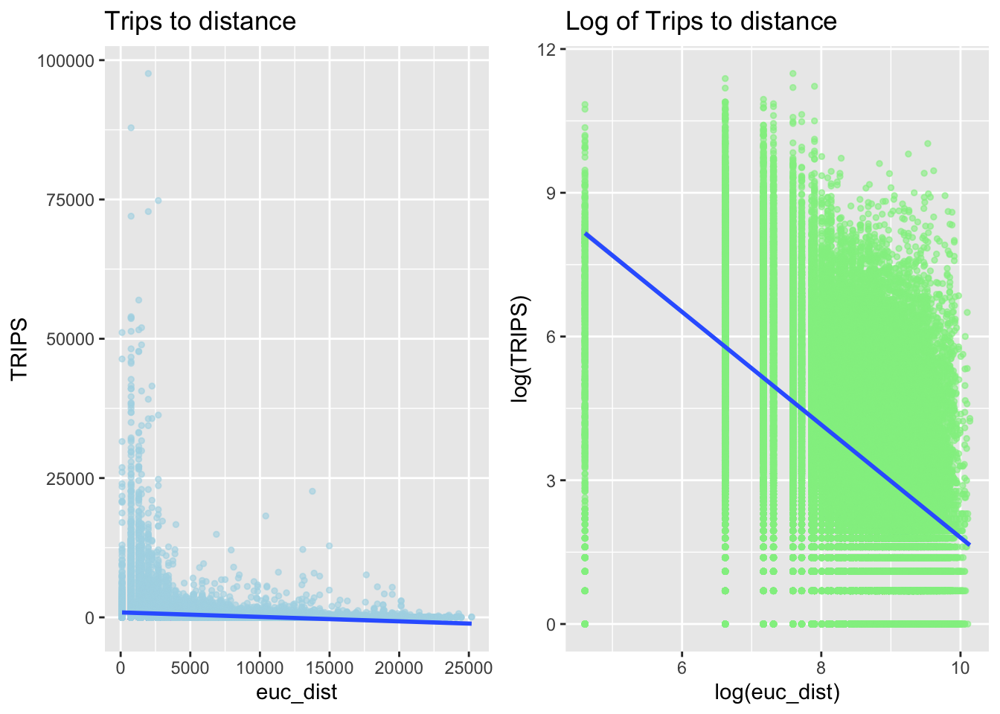

pacman::p_load(tmap, sf, sp, DT, stplanr,
performance, reshape2,
ggpubr, tidyverse, httr, dplyr, gridExtra)Take Home Exercise 2
Geospatial Data Science
Project Summary
This project aims to show an example of how disparate data sources can be integrated, analysed, and modelled to support policy making decision.
In line with the nature of this course, it will be Geospatial data science and analysis (GDSA) centric by using openly available data such as Instituitional Property Information & Commercial listings with SG’s public bus commuter flows to determine urban mobility patterns.
Getting Started
sf - importing, integrating, processing and transforming geospatial data.
tidyverse & reshape2 - importing, integrating, wrangling and visualising data.
tmap - creating thematic maps.
performance & ggpubr - for doing spatial interaction modeling
Preparing the Flow Data
Importing the aspatial data
We will proceed to import the Passenger Volume by Origin Destination Bus Stops October data set downloaded from LTA DataMall.
odbus <- read_csv("data/aspatial/origin_destination_bus_202310.csv")
# removing duplicated line items
odbus <- distinct(odbus)
# double checking data is imported successfully
glimpse(odbus)Rows: 5,694,297
Columns: 7
$ YEAR_MONTH <chr> "2023-10", "2023-10", "2023-10", "2023-10", "2023-…
$ DAY_TYPE <chr> "WEEKENDS/HOLIDAY", "WEEKDAY", "WEEKENDS/HOLIDAY",…
$ TIME_PER_HOUR <dbl> 16, 16, 14, 14, 17, 17, 17, 7, 14, 14, 10, 20, 20,…
$ PT_TYPE <chr> "BUS", "BUS", "BUS", "BUS", "BUS", "BUS", "BUS", "…
$ ORIGIN_PT_CODE <chr> "04168", "04168", "80119", "80119", "44069", "2028…
$ DESTINATION_PT_CODE <chr> "10051", "10051", "90079", "90079", "17229", "2014…
$ TOTAL_TRIPS <dbl> 3, 5, 3, 5, 4, 1, 24, 2, 1, 7, 3, 2, 5, 1, 1, 1, 1…str(odbus)tibble [5,694,297 × 7] (S3: tbl_df/tbl/data.frame)
$ YEAR_MONTH : chr [1:5694297] "2023-10" "2023-10" "2023-10" "2023-10" ...
$ DAY_TYPE : chr [1:5694297] "WEEKENDS/HOLIDAY" "WEEKDAY" "WEEKENDS/HOLIDAY" "WEEKDAY" ...
$ TIME_PER_HOUR : num [1:5694297] 16 16 14 14 17 17 17 7 14 14 ...
$ PT_TYPE : chr [1:5694297] "BUS" "BUS" "BUS" "BUS" ...
$ ORIGIN_PT_CODE : chr [1:5694297] "04168" "04168" "80119" "80119" ...
$ DESTINATION_PT_CODE: chr [1:5694297] "10051" "10051" "90079" "90079" ...
$ TOTAL_TRIPS : num [1:5694297] 3 5 3 5 4 1 24 2 1 7 ...
Tip with Title
Given ORIGIN_PT_CODE and DESTINATION_PT_CODE columns are character data type, we will need to convert them to factors
odbus$ORIGIN_PT_CODE <-
as.factor(odbus$ORIGIN_PT_CODE)
odbus$DESTINATION_PT_CODE <-
as.factor(odbus$DESTINATION_PT_CODE)Filtering data
Next, we will filter out trips that occurs on “Weekday” and “6-9am”
wdmp <- odbus %>%
filter(DAY_TYPE == "WEEKDAY") %>%
filter(TIME_PER_HOUR >= 6 & TIME_PER_HOUR <= 9) %>%
group_by(ORIGIN_PT_CODE, DESTINATION_PT_CODE) %>%
summarise(TRIPS = sum(TOTAL_TRIPS))
head(wdmp)# A tibble: 6 × 3
# Groups: ORIGIN_PT_CODE [1]
ORIGIN_PT_CODE DESTINATION_PT_CODE TRIPS
<fct> <fct> <dbl>
1 01012 01112 290
2 01012 01113 118
3 01012 01121 77
4 01012 01211 118
5 01012 01311 165
6 01012 07371 14From wdmp, we see a total of 242208 observations. Next we will proceed to write wdmp into rds format before importing
write_rds(wdmp, "data/rds/wdmp.rds") wdmp <- read_rds("data/rds/wdmp.rds") Geospatial Data
We will be using 2 sets of geospatial data for this exercise
- BusStop Location from LTA Data Mall
- 2019 URA Master Plan
Importing Bus Stop Locations
First we will import the BusStop locations
busstop <- st_read(dsn = "data/geospatial",
layer = "BusStop") %>%
st_transform(crs = 3414)Reading layer `BusStop' from data source
`/Users/youting/ytquek/ISSS624/Project/data/geospatial' using driver `ESRI Shapefile'
Simple feature collection with 5161 features and 3 fields
Geometry type: POINT
Dimension: XY
Bounding box: xmin: 3970.122 ymin: 26482.1 xmax: 48284.56 ymax: 52983.82
Projected CRS: SVY21glimpse(busstop)Rows: 5,161
Columns: 4
$ BUS_STOP_N <chr> "22069", "32071", "44331", "96081", "11561", "66191", "2338…
$ BUS_ROOF_N <chr> "B06", "B23", "B01", "B05", "B05", "B03", "B02A", "B02", "B…
$ LOC_DESC <chr> "OPP CEVA LOGISTICS", "AFT TRACK 13", "BLK 239", "GRACE IND…
$ geometry <POINT [m]> POINT (13576.31 32883.65), POINT (13228.59 44206.38),…Next we will use the following code chunk to check for duplicates
duplicates <- busstop %>%
st_set_geometry(NULL) %>%
group_by(BUS_STOP_N,
BUS_ROOF_N
) %>%
# count each instance of busstop appearance by the column bus_stop_n and bus_roof_n
summarise(
count = n()
) %>%
ungroup() %>%
# retrieve bustops with more than single instance
filter(count > 1)
glimpse(duplicates)Rows: 7
Columns: 3
$ BUS_STOP_N <chr> "22501", "43709", "51071", "58031", "62251", "82221", "9707…
$ BUS_ROOF_N <chr> "B02", "B06", "B21", "UNK", "B03", "B01", "B14"
$ count <int> 2, 2, 2, 2, 2, 2, 2In total, 7 bus stops were found to have duplicates. It is unclear why this is the case, based on the student’s external research using Google Maps, no distinct or unique properties of the bus stops were found. They were neither interchanges nor a single bus stop serving a loop.
We will proceed to use the dplyr package to remove the first instance of duplicates from the busstop tibble data.
cleaned_busstop <- busstop %>% distinct(BUS_STOP_N,
BUS_ROOF_N, .keep_all = TRUE)
class(cleaned_busstop)[1] "sf" "data.frame"sf::st_geometry(cleaned_busstop)Geometry set for 5154 features
Geometry type: POINT
Dimension: XY
Bounding box: xmin: 3970.122 ymin: 26482.1 xmax: 48284.56 ymax: 52983.82
Projected CRS: SVY21 / Singapore TM
First 5 geometries:Double checking the cleaned_busstop data frame no longer have duplicates
duplicates1 <- cleaned_busstop %>%
st_set_geometry(NULL) %>%
group_by(BUS_STOP_N,
BUS_ROOF_N
) %>%
# count each instance of busstop appearance by the column bus_stop_n and bus_roof_n
summarise(
count = n()
) %>%
ungroup() %>%
# retrieve bustops with more than single instance
filter(count > 1)
glimpse(duplicates1)Rows: 0
Columns: 3
$ BUS_STOP_N <chr>
$ BUS_ROOF_N <chr>
$ count <int> Importing Whole of SG Map
Next we will import the MPSZ-2019 layer which is representative of Singapore
mpsz <- read_rds("data/rds/mpsz.rds")
mpszSimple feature collection with 332 features and 6 fields
Geometry type: MULTIPOLYGON
Dimension: XY
Bounding box: xmin: 2667.538 ymin: 15748.72 xmax: 56396.44 ymax: 50256.33
Projected CRS: SVY21 / Singapore TM
First 10 features:
SUBZONE_N SUBZONE_C PLN_AREA_N PLN_AREA_C REGION_N
1 MARINA EAST MESZ01 MARINA EAST ME CENTRAL REGION
2 INSTITUTION HILL RVSZ05 RIVER VALLEY RV CENTRAL REGION
3 ROBERTSON QUAY SRSZ01 SINGAPORE RIVER SR CENTRAL REGION
4 JURONG ISLAND AND BUKOM WISZ01 WESTERN ISLANDS WI WEST REGION
5 FORT CANNING MUSZ02 MUSEUM MU CENTRAL REGION
6 MARINA EAST (MP) MPSZ05 MARINE PARADE MP CENTRAL REGION
7 SUDONG WISZ03 WESTERN ISLANDS WI WEST REGION
8 SEMAKAU WISZ02 WESTERN ISLANDS WI WEST REGION
9 SOUTHERN GROUP SISZ02 SOUTHERN ISLANDS SI CENTRAL REGION
10 SENTOSA SISZ01 SOUTHERN ISLANDS SI CENTRAL REGION
REGION_C geometry
1 CR MULTIPOLYGON (((33222.98 29...
2 CR MULTIPOLYGON (((28481.45 30...
3 CR MULTIPOLYGON (((28087.34 30...
4 WR MULTIPOLYGON (((14557.7 304...
5 CR MULTIPOLYGON (((29542.53 31...
6 CR MULTIPOLYGON (((35279.55 30...
7 WR MULTIPOLYGON (((15772.59 21...
8 WR MULTIPOLYGON (((19843.41 21...
9 CR MULTIPOLYGON (((30870.53 22...
10 CR MULTIPOLYGON (((26879.04 26...Setting up Hexagon Grid
The following code chunks create a hexagonal grid frame which spans a total of 750m from edge to edge for each hexagon to represent the traffic analysis zone (TAZ).
Step 1. Drawing the Hexagon Grid
Drawing a hexagon grid over mpsz
hexagon_grid = st_make_grid(mpsz, c(750, 750), what = "polygons", square = FALSE)Next we will add a grid_id column to the hexagon grid before assigning the bus stops to it
grid_sf = st_sf(hexagon_grid) %>%
mutate(grid_id = 1:length(lengths(hexagon_grid)))busstop_grid <- st_intersection(grid_sf,cleaned_busstop) %>%
select(BUS_STOP_N, grid_id) %>%
st_drop_geometry()Step 2. Preparing origin to destination data
Preparing origin trip id
We will do a left join using our wdmp dataframe with busstop grid using ORIGIN_PT_CODE
wdmp <- wdmp %>%
left_join(busstop_grid, by = c("ORIGIN_PT_CODE" = "BUS_STOP_N")) %>%
rename(ori_grid = grid_id) %>%
distinct()Preparing destination trip id
We will do a left join using our wdmp dataframe with busstop grid using DESTINATION_PT_CODE
wdmp <- wdmp %>%
left_join(busstop_grid, by = c("DESTINATION_PT_CODE" = "BUS_STOP_N")) %>%
rename(dest_grid = grid_id) %>%
distinct()To avoid cluttering our wdmp frame, we will remove the unused columns
wdmp <- na.omit(wdmp) wdmp <- wdmp %>%
ungroup() %>%
select(-c(ORIGIN_PT_CODE, DESTINATION_PT_CODE)) To avoid any issues later on for plotting flow line with grid_sf, we will need to re-order the table to promote original grid id column first.
wdmp <- wdmp %>%
select(ori_grid, dest_grid, TRIPS)Visualising Spatial Interaction
The following steps are taken to visualise the traffic flows between TAZs.
Removing intra-zonal flows
wdmp_inter <- wdmp[wdmp$ori_grid != wdmp$dest_grid, ]Creating desire lines
Desire lines are straight lines which indicates the linear movement from origin to destination. We will use the od2line() function to create it.
# Check for non-matching IDs
wdmp_inter$ori_grid[!wdmp_inter$ori_grid %in% grid_sf$grid_id]integer(0)# Check column types
str(wdmp_inter)tibble [232,305 × 3] (S3: tbl_df/tbl/data.frame)
$ ori_grid : int [1:232305] 2010 2010 2010 2010 2010 2010 2010 2010 2010 2010 ...
$ dest_grid: int [1:232305] 2038 2038 2065 2065 2119 2093 2093 2120 2148 2148 ...
$ TRIPS : num [1:232305] 290 118 77 118 165 14 30 16 35 26 ...str(grid_sf)Classes 'sf' and 'data.frame': 3942 obs. of 2 variables:
$ hexagon_grid:sfc_POLYGON of length 3942; first list element: List of 1
..$ : num [1:7, 1:2] 2293 1918 1918 2293 2668 ...
.. ..- attr(*, "dimnames")=List of 2
.. .. ..$ : NULL
.. .. ..$ : chr [1:2] "y" "x"
..- attr(*, "class")= chr [1:3] "XY" "POLYGON" "sfg"
$ grid_id : int 1 2 3 4 5 6 7 8 9 10 ...
- attr(*, "sf_column")= chr "hexagon_grid"
- attr(*, "agr")= Factor w/ 3 levels "constant","aggregate",..: NA
..- attr(*, "names")= chr "grid_id"#Check for NA fields
sum(is.na(wdmp_inter$ori_grid))[1] 0sum(is.na(wdmp_inter$dest_grid))[1] 0flowLine <- od2line(flow = wdmp_inter,
zones = grid_sf,
zone_code = "grid_id")Using the quantile() function, we observe that between 75% to 100%, the data is obviously very skewed and in turn will affect visualisations later on.
quantile(flowLine$TRIPS) 0% 25% 50% 75% 100%
1 3 15 56 97600 Visualising the desire lines
Given that the flow data will be very messy if we were to plot everything in a go, we will opt to plot different desire lines based on the quantiles we observed.
When flow is >= 5000
tm_shape(mpsz) +
tm_polygons() +
flowLine %>%
filter(TRIPS >= 5000) %>%
tm_shape() +
tm_lines(lwd = "TRIPS",
style = "quantile",
scale = c(0.1, 1, 3, 5, 7, 10),
n = 6,
alpha = 0.3)
When flow is >= 50000
tm_shape(mpsz) +
tm_polygons() +
flowLine %>%
filter(TRIPS >= 50000) %>%
tm_shape() +
tm_lines(lwd = "TRIPS",
style = "quantile",
scale = c(0.1, 1, 3, 5, 7, 10),
n = 6,
alpha = 0.3)When flow is >= 90000
tm_shape(mpsz) +
tm_polygons() +
flowLine %>%
filter(TRIPS >= 90000) %>%
tm_shape() +
tm_lines(lwd = "TRIPS",
style = "quantile",
scale = c(0.1, 1, 3, 5, 7, 10),
n = 6,
alpha = 0.3)
To see the top 20 most taken trips, we shall use the following code chunk
# Join wdmp_inter with busstop_grid to get the bus_stop_n for ori_grid
wdmp_inter_with_stop_n <- wdmp_inter %>%
left_join(busstop_grid, by = c("ori_grid" = "grid_id"))
# Join with bustop to get the loc_desc for the bus_stop_n
wdmp_inter_with_loc_desc <- wdmp_inter_with_stop_n %>%
left_join(busstop, by = "BUS_STOP_N")
# Now select the top 10 trips with loc_desc
top_trips <- wdmp_inter_with_loc_desc %>%
arrange(desc(TRIPS)) %>%
slice_head(n = 20)
head(top_trips)# A tibble: 6 × 7
ori_grid dest_grid TRIPS BUS_STOP_N BUS_ROOF_N LOC_DESC
<int> <int> <dbl> <chr> <chr> <chr>
1 1350 1375 97600 46211 NIL JOHOR BAHRU CHECKPT
2 1350 1375 97600 46219 NIL JOHOR BAHRU CHECKPT
3 1375 1319 74796 46159 B07 BLK 206
4 1375 1319 74796 46109 B05 W'LANDS CHECKPT
5 1375 1319 74796 46101 B45 W'LANDS CHECKPT
6 1375 1319 74796 46151 B08 BLK 212
# ℹ 1 more variable: geometry <POINT [m]>Summary
From the table, we can derive that the highest volume of trips are congregating around the causeway from Bus Stop number 46211 Bus Stop 46219. Both of which have identifical number of trips but however does not have a Bus Roof Number.
The next
Understanding commuter patterns
Propulsive and Attractiveness Variables
The factors listed above are computed at TAZ level for Spatial Interaction Modelling.
Effect of Distance on Number of Trips
The analysis of distance on numbers of trips will require us to computer a distance matrix by using grid_sf and converting it from sf tibble data frame to an sp object
grid_sp <- as(grid_sf, "Spatial")
grid_spclass : SpatialPolygonsDataFrame
features : 3942
extent : 1917.538, 57042.54, 15315.71, 50606.24 (xmin, xmax, ymin, ymax)
crs : +proj=tmerc +lat_0=1.36666666666667 +lon_0=103.833333333333 +k=1 +x_0=28001.642 +y_0=38744.572 +ellps=WGS84 +towgs84=0,0,0,0,0,0,0 +units=m +no_defs
variables : 1
names : grid_id
min values : 1
max values : 3942 Calculating the euclidean distance between the centroids of the hexagons
euc_dist <- spDists(grid_sp,
longlat = FALSE)
head(euc_dist, n=c(10, 10)) [,1] [,2] [,3] [,4] [,5] [,6] [,7] [,8]
[1,] 0.000 1299.038 2598.076 3897.114 5196.152 6495.191 7794.229 9093.267
[2,] 1299.038 0.000 1299.038 2598.076 3897.114 5196.152 6495.191 7794.229
[3,] 2598.076 1299.038 0.000 1299.038 2598.076 3897.114 5196.152 6495.191
[4,] 3897.114 2598.076 1299.038 0.000 1299.038 2598.076 3897.114 5196.152
[5,] 5196.152 3897.114 2598.076 1299.038 0.000 1299.038 2598.076 3897.114
[6,] 6495.191 5196.152 3897.114 2598.076 1299.038 0.000 1299.038 2598.076
[7,] 7794.229 6495.191 5196.152 3897.114 2598.076 1299.038 0.000 1299.038
[8,] 9093.267 7794.229 6495.191 5196.152 3897.114 2598.076 1299.038 0.000
[9,] 10392.305 9093.267 7794.229 6495.191 5196.152 3897.114 2598.076 1299.038
[10,] 11691.343 10392.305 9093.267 7794.229 6495.191 5196.152 3897.114 2598.076
[,9] [,10]
[1,] 10392.305 11691.343
[2,] 9093.267 10392.305
[3,] 7794.229 9093.267
[4,] 6495.191 7794.229
[5,] 5196.152 6495.191
[6,] 3897.114 5196.152
[7,] 2598.076 3897.114
[8,] 1299.038 2598.076
[9,] 0.000 1299.038
[10,] 1299.038 0.000Labelling column and row headers of distance matrix
Create a list sorted according to the the distance matrix by hexagon grid id
grid_id <- grid_sf$grid_id
# Attach `grid_id` to row and column for distance matrix matching
colnames(euc_dist) <- paste0(grid_id)
rownames(euc_dist) <- paste0(grid_id)Finding each Origin to Destination distance
dist_pair <- melt(euc_dist) %>%
rename(ori_grid = Var1,
dest_grid = Var2,
euc_dist = value)
head(dist_pair, 10) ori_grid dest_grid euc_dist
1 1 1 0.000
2 2 1 1299.038
3 3 1 2598.076
4 4 1 3897.114
5 5 1 5196.152
6 6 1 6495.191
7 7 1 7794.229
8 8 1 9093.267
9 9 1 10392.305
10 10 1 11691.343Find the mininum inter-zonal difference
We will refuse any distance which is 0 as that is not helpful in helping find the miniumum distance
dist_pair %>%
filter(euc_dist > 0) %>%
summary() ori_grid dest_grid euc_dist
Min. : 1 Min. : 1 Min. : 750
1st Qu.: 986 1st Qu.: 986 1st Qu.:14465
Median :1972 Median :1972 Median :22761
Mean :1972 Mean :1972 Mean :23714
3rd Qu.:2957 3rd Qu.:2957 3rd Qu.:31882
Max. :3942 Max. :3942 Max. :64356 Summary
The smallest observed distance inter-zonal difference is 750m, which is exactly the distance between the centres of two adjacent hexagons. To resolve this, we can set the intra-zonal distance to 100 instead.
dist_pair$euc_dist <- ifelse(dist_pair$euc_dist == 0,
100, dist_pair$euc_dist)
summary(dist_pair) ori_grid dest_grid euc_dist
Min. : 1 Min. : 1 Min. : 100
1st Qu.: 986 1st Qu.: 986 1st Qu.:14465
Median :1972 Median :1972 Median :22761
Mean :1972 Mean :1972 Mean :23708
3rd Qu.:2957 3rd Qu.:2957 3rd Qu.:31882
Max. :3942 Max. :3942 Max. :64356 Converting ori_grid and desti_grid columns to factors data types
dist_pair$ori_grid <-
as.factor(dist_pair$ori_grid)
dist_pair$dest_grid <-
as.factor(dist_pair$dest_grid)Finding how no. of trips relate to distance
Compute the Total Passenger Trips
flow_data <- wdmp %>%
group_by(ori_grid, dest_grid) %>%
summarize(TRIPS = sum(TRIPS)) Separating intra-flow (within hexagon) from passenger volume df
flow_data$FlowNoIntra <- ifelse(
flow_data$ori_grid == flow_data$dest_grid,
0, flow_data$TRIPS)
flow_data$offset <- ifelse(
flow_data$ori_grid == flow_data$dest_grid,
0.000001, 1)Converting ori_grid and desti_grid columns to factors data type
flow_data$ori_grid <-
as.factor(flow_data$ori_grid)
flow_data$dest_grid <-
as.factor(flow_data$dest_grid)Combining passenger volume data with inter-zonal distance value
flow_data <- flow_data %>%
left_join (dist_pair,
by = c("ori_grid" = "ori_grid",
"dest_grid" = "dest_grid"))Visualising Plot
p1 <- flow_data %>%
st_drop_geometry() %>%
ggplot(
aes(
x = euc_dist,
y = TRIPS)) +
geom_point(
size = 1,
alpha = .6,
color = "lightblue") +
geom_smooth(method = lm) +
ggtitle("Trips to distance")
logp1 <- flow_data %>%
st_drop_geometry() %>%
ggplot(
aes(x = log(euc_dist),
y = log(TRIPS))) +
geom_point(
size = 1,
alpha = .6,
color = "lightgreen") +
geom_smooth(method = lm) +
ggtitle("Log of Trips to distance")
#Using gridExtra Package to show both graphs)
grid.arrange(p1, logp1, ncol = 2)
Observation
A strong inverse linear trend is observed for trips when the distance is further for the log transformed data. Wheareas in the initial data, a trend is not immediately obvious although there is a slight inverse trendline observable as well.
Propulsive Attributes
This refers to a strong factor that encourage a “push” for people to get away from their current location. Given the time period being analysed is Weekday Morning Peak, propulsive attributes are likely related to the following places of interest
- Train Station Exits - Part of commute between residence & work/school
- HDB - Residences/Homes
Importing of Train Station Exit Locations
mrt_exit <- st_read(dsn = "data/geospatial",
layer = "Train_Station_Exit_Layer") %>%
st_transform(crs = 3414)Reading layer `Train_Station_Exit_Layer' from data source
`/Users/youting/ytquek/ISSS624/Project/data/geospatial' using driver `ESRI Shapefile'
Simple feature collection with 565 features and 2 fields
Geometry type: POINT
Dimension: XY
Bounding box: xmin: 6134.086 ymin: 27499.7 xmax: 45356.36 ymax: 47865.92
Projected CRS: SVY21Number of Train Station Exits per Location
grid_attr <- grid_sf %>%
mutate(mrt_exit_count = lengths(st_intersects(., mrt_exit)))
summary(grid_attr$mrt_exit) Min. 1st Qu. Median Mean 3rd Qu. Max.
0.0000 0.0000 0.0000 0.1433 0.0000 19.0000 Importing of residential HDBs
hdb <- read_csv("data/aspatial/hdb.csv")
hdb <- distinct(hdb)Removing duplicates, select only residential properties and relevant columns
hdb <- hdb %>%
select(
blk_no,
street,
postal,
total_dwelling_units,
lng,
lat
)hdb_sf <- st_as_sf(hdb,
coords = c("lng", "lat"),
crs = 4326) %>%
st_transform(crs = 3414)
grid_attr$hdb <- lengths(st_intersects(grid_sf, hdb_sf))Attractive Attributes
Since the time period being analysed is Weekday Morning Peak, attractive attributes is likely to be:
- Businesses
- School
- Food & Beverages
- Retail Establishments
Importing of Business Locations
biz <- st_read(dsn = "Data/geospatial",
layer = "Business") %>%
st_transform(crs = 3414)Reading layer `Business' from data source
`/Users/youting/ytquek/ISSS624/Project/data/geospatial' using driver `ESRI Shapefile'
Simple feature collection with 6550 features and 3 fields
Geometry type: POINT
Dimension: XY
Bounding box: xmin: 3669.148 ymin: 25408.41 xmax: 47034.83 ymax: 50148.54
Projected CRS: SVY21 / Singapore TMNumber of Businesses per Location
grid_attr$biz <- lengths(st_intersects(grid_sf, biz))
summary(grid_attr$biz) Min. 1st Qu. Median Mean 3rd Qu. Max.
0.000 0.000 0.000 1.662 0.000 126.000 message(paste("There are", sum(grid_attr$biz), " Businesses that occur in hexagons with bus stops", "with a maximum of", max(grid_attr$biz), "within grid_id", grid_attr$grid_id[which.max(grid_attr$biz)]))The location with the most number of businesses is grid id 3942, with 126 businesses located within.
Importing of Financial Services Locations
fs <- st_read(dsn = "Data/geospatial",
layer = "FinServ") %>%
st_transform(crs = 3414)Reading layer `FinServ' from data source
`/Users/youting/ytquek/ISSS624/Project/data/geospatial' using driver `ESRI Shapefile'
Simple feature collection with 3320 features and 3 fields
Geometry type: POINT
Dimension: XY
Bounding box: xmin: 4881.527 ymin: 25171.88 xmax: 46526.16 ymax: 49338.02
Projected CRS: SVY21 / Singapore TMNumber of Financial Services per Location
grid_attr$fs <- lengths(st_intersects(grid_sf, fs))
summary(grid_attr$fs) Min. 1st Qu. Median Mean 3rd Qu. Max.
0.0000 0.0000 0.0000 0.8422 0.0000 176.0000 message(paste("There are", sum(grid_attr$fs), " Financial Services that occur in hexagons with bus stops", "with a maximum of", max(grid_attr$fs), "within grid_id", grid_attr$grid_id[which.max(grid_attr$fs)]))Note: The hexagaon with grid_id 2009 also boasts the highest count of train station exits!
Importing of School Locations
sch <- read_csv("data/aspatial/schools.csv")Remove duplicates, select only relevant columns
sch <- unique(sch)
sch <- sch %>%
select(
results.LATITUDE,
results.LONGITUDE,
postal_code,
school_name
)Rename columns for ease of reference
sch <- sch %>%
rename(
latitude = results.LATITUDE,
longitude = results.LONGITUDE
)Converting an aspatial data into a simple features tibble data.frame
sch_sf <- st_as_sf(sch,
coords = c("longitude", "latitude"),
crs = 4326) %>%
st_transform(crs = 3414)Number of Schools per Location
grid_attr$sch <- lengths(st_intersects(grid_sf, sch_sf))
summary(grid_attr$sch) Min. 1st Qu. Median Mean 3rd Qu. Max.
0.00000 0.00000 0.00000 0.08879 0.00000 5.00000 message(paste("There are", sum(grid_attr$sch), " Schools that occur in hexagons with bus stops", "with a maximum of", max(grid_attr$sch), "within grid_id", grid_attr$grid_id[which.max(grid_attr$sch)]))Importing of F&B
fnb <- st_read(dsn = "Data/geospatial",
layer = "F&B") %>%
st_transform(crs = 3414)Reading layer `F&B' from data source
`/Users/youting/ytquek/ISSS624/Project/data/geospatial' using driver `ESRI Shapefile'
Simple feature collection with 1919 features and 3 fields
Geometry type: POINT
Dimension: XY
Bounding box: xmin: 6010.495 ymin: 25343.27 xmax: 45462.43 ymax: 48796.21
Projected CRS: SVY21 / Singapore TMgrid_attr$fnb <- lengths(st_intersects(grid_sf, fnb))
summary(grid_attr$fnb) Min. 1st Qu. Median Mean 3rd Qu. Max.
0.0000 0.0000 0.0000 0.4868 0.0000 127.0000 message(paste("There are", sum(grid_attr$fnb), " FNB Services that occur in hexagons with bus stops", "with a maximum of", max(grid_attr$fnb), "within grid_id", grid_attr$grid_id[which.max(grid_attr$fnb)]))Check Propulsive and Attractive Attributes
Check grid_attr
grid_attrSimple feature collection with 3942 features and 7 fields
Geometry type: POLYGON
Dimension: XY
Bounding box: xmin: 1917.538 ymin: 15315.71 xmax: 57042.54 ymax: 50606.24
Projected CRS: SVY21 / Singapore TM
First 10 features:
hexagon_grid grid_id mrt_exit_count hdb biz fs sch fnb
1 POLYGON ((2292.538 15965.23... 1 0 0 0 0 0 0
2 POLYGON ((2292.538 17264.27... 2 0 0 0 0 0 0
3 POLYGON ((2292.538 18563.3,... 3 0 0 0 0 0 0
4 POLYGON ((2292.538 19862.34... 4 0 0 0 0 0 0
5 POLYGON ((2292.538 21161.38... 5 0 0 0 0 0 0
6 POLYGON ((2292.538 22460.42... 6 0 0 0 0 0 0
7 POLYGON ((2292.538 23759.46... 7 0 0 0 0 0 0
8 POLYGON ((2292.538 25058.49... 8 0 0 0 0 0 0
9 POLYGON ((2292.538 26357.53... 9 0 0 0 0 0 0
10 POLYGON ((2292.538 27656.57... 10 0 0 0 0 0 0Spatial Interaction Modelling
Select attributes relevant Propulsive Attributes and Attractive Attributes for Spatial Interaction Modelling
attr <- grid_attr %>%
st_drop_geometry() %>%
mutate(
grid_id = as.factor(grid_id)
)Flow by Origin
Retain only propulsive attributes
attr_flow <- left_join(
dist_pair,
attr,
by = c("ori_grid" = "grid_id")) %>%
rename(
ori_biz = biz,
ori_hdb = hdb,
ori_sch = sch,
ori_fnb = fnb,
ori_fs = fs,
ori_mrt_exit = mrt_exit_count
) %>%
select(
-c(ori_fs, ori_biz, ori_fnb))Flow by Destination
Retain only attractive attributes
attr_flow <- left_join(
attr_flow,
attr,
by = c("dest_grid" = "grid_id")) %>%
rename(
dest_biz = biz,
dest_hdb = hdb,
dest_sch = sch,
dest_fnb = fnb,
dest_fs = fs
) %>%
select(
-c(dest_sch, dest_hdb)
)Add Trips
attr_flow <- left_join(
attr_flow,
flow_data,
by = c("ori_grid", "dest_grid")) %>%
select(
-c(FlowNoIntra, offset)
)Remove NULL values
There are some routes from ori_grid to desti_grid that have 0 or NULL trips. These will be removed
attr_flow <- attr_flow %>%
filter(!is.na(TRIPS) & TRIPS != 0)Summary of attributes
summary(attr_flow) ori_grid dest_grid euc_dist.x ori_mrt_exit
2634 : 287 2010 : 365 Min. : 100 Min. : 0.000
2010 : 286 1982 : 349 1st Qu.: 2704 1st Qu.: 0.000
1987 : 285 2009 : 345 Median : 5250 Median : 0.000
1849 : 283 1984 : 319 Mean : 6224 Mean : 1.269
2038 : 281 1849 : 302 3rd Qu.: 8649 3rd Qu.: 2.000
1990 : 279 2634 : 294 Max. :25200 Max. :19.000
(Other):64130 (Other):63857
ori_hdb ori_sch mrt_exit_count dest_biz
Min. : 0.00 Min. :0.0000 Min. : 0.000 Min. : 0.000
1st Qu.: 0.00 1st Qu.:0.0000 1st Qu.: 0.000 1st Qu.: 0.000
Median :11.00 Median :0.0000 Median : 0.000 Median : 1.000
Mean :20.71 Mean :0.5871 Mean : 1.389 Mean : 7.341
3rd Qu.:38.00 3rd Qu.:1.0000 3rd Qu.: 2.000 3rd Qu.: 7.000
Max. :95.00 Max. :5.0000 Max. :19.000 Max. :126.000
dest_fs dest_fnb TRIPS euc_dist.y
Min. : 0.000 Min. : 0.000 Min. : 1.0 Min. : 100
1st Qu.: 0.000 1st Qu.: 0.000 1st Qu.: 7.0 1st Qu.: 2704
Median : 3.000 Median : 0.000 Median : 37.0 Median : 5250
Mean : 8.959 Mean : 5.828 Mean : 386.8 Mean : 6224
3rd Qu.: 9.000 3rd Qu.: 2.000 3rd Qu.: 178.0 3rd Qu.: 8649
Max. :176.000 Max. :127.000 Max. :97602.0 Max. :25200
Replacing 0 values
update_cols <- c( "ori_hdb","ori_sch" ,"dest_fs", "dest_biz","dest_fnb")
# update all 0 values across columns
attr_flow <- attr_flow %>%
mutate(across(all_of(update_cols), ~ ifelse(. == 0, 0.9, .)))
summary(attr_flow) ori_grid dest_grid euc_dist.x ori_mrt_exit
2634 : 287 2010 : 365 Min. : 100 Min. : 0.000
2010 : 286 1982 : 349 1st Qu.: 2704 1st Qu.: 0.000
1987 : 285 2009 : 345 Median : 5250 Median : 0.000
1849 : 283 1984 : 319 Mean : 6224 Mean : 1.269
2038 : 281 1849 : 302 3rd Qu.: 8649 3rd Qu.: 2.000
1990 : 279 2634 : 294 Max. :25200 Max. :19.000
(Other):64130 (Other):63857
ori_hdb ori_sch mrt_exit_count dest_biz
Min. : 0.90 Min. :0.90 Min. : 0.000 Min. : 0.900
1st Qu.: 0.90 1st Qu.:0.90 1st Qu.: 0.000 1st Qu.: 0.900
Median :11.00 Median :0.90 Median : 0.000 Median : 1.000
Mean :21.02 Mean :1.13 Mean : 1.389 Mean : 7.701
3rd Qu.:38.00 3rd Qu.:1.00 3rd Qu.: 2.000 3rd Qu.: 7.000
Max. :95.00 Max. :5.00 Max. :19.000 Max. :126.000
dest_fs dest_fnb TRIPS euc_dist.y
Min. : 0.900 Min. : 0.900 Min. : 1.0 Min. : 100
1st Qu.: 0.900 1st Qu.: 0.900 1st Qu.: 7.0 1st Qu.: 2704
Median : 3.000 Median : 0.900 Median : 37.0 Median : 5250
Mean : 9.205 Mean : 6.327 Mean : 386.8 Mean : 6224
3rd Qu.: 9.000 3rd Qu.: 2.000 3rd Qu.: 178.0 3rd Qu.: 8649
Max. :176.000 Max. :127.000 Max. :97602.0 Max. :25200
Save output indo rds
write_rds(attr_flow, "data/rds/sim_data.rds")Finding the Linear Correlation between Trips and Propulsiveness
Train Station Exits
p_res <- attr_flow %>%
st_drop_geometry() %>%
ggplot(
aes(x = log(ori_mrt_exit),
y = log(TRIPS))
) +
geom_point(
color = "grey",
size = 1,
alpha = .7
) +
geom_smooth(method = lm) +
theme(axis.text.x = element_blank()) +
ggtitle("Trips ~ MRT Exits")
p_resResidential Density
p_hdb <- attr_flow %>%
st_drop_geometry() %>%
ggplot(
aes(x = log(ori_hdb),
y = log(TRIPS))
) +
geom_point(
color = "red",
size = 1,
alpha = .7
) +
geom_smooth(method = lm) +
theme(axis.text.x = element_blank()) +
ggtitle("Trips ~ Residential Density")
p_hdbFinding the Linear Correlation between Trips and Attractiveness
F&B Establishments
p_fnb <- attr_flow %>%
st_drop_geometry() %>%
ggplot(
aes(x = log(dest_fnb),
y = log(TRIPS))
) +
geom_point(
color = "orange",
size = 1,
alpha = .7
) +
geom_smooth(method = lm) +
theme(axis.text.x = element_blank()) +
ggtitle("Trips ~ F&B")
p_fnbFinancial Services
p_fs <- attr_flow %>%
st_drop_geometry() %>%
ggplot(
aes(x = log(dest_fs),
y = log(TRIPS))
) +
geom_point(
color = "green",
size = 1,
alpha = .7
) +
geom_smooth(method = lm) +
theme(axis.text.x = element_blank()) +
ggtitle("Trips ~ Financial Services")
p_fsBusinesses
p_biz <- attr_flow %>%
st_drop_geometry() %>%
ggplot(
aes(x = log(dest_biz),
y = log(TRIPS))
) +
geom_point(
color = "purple",
size = 1,
alpha = .7
) +
geom_smooth(method = lm) +
theme(axis.text.x = element_blank()) +
ggtitle("Trips ~ Business")
p_bizRegression Modelling
Multicollinearity checks
To avoid using two or more predictor variables in the model that are highly correlated with each other, we will do a multicollinearity check.
cor_matrix <- cor(attr_flow[, c("ori_mrt_exit","ori_hdb", "ori_sch", "dest_biz", "dest_fs", "dest_fnb", "TRIPS")])
cor_matrix <- round(cor_matrix,2)
melted_corr_matrix <- melt(cor_matrix)
head(melted_corr_matrix) Var1 Var2 value
1 ori_mrt_exit ori_mrt_exit 1.00
2 ori_hdb ori_mrt_exit 0.02
3 ori_sch ori_mrt_exit -0.03
4 dest_biz ori_mrt_exit -0.02
5 dest_fs ori_mrt_exit 0.00
6 dest_fnb ori_mrt_exit 0.01# plotting the correlation heatmap
ggplot(data = melted_corr_matrix, aes(x=Var1, y=Var2,
fill=value)) +
geom_tile() +
geom_text(aes(Var2, Var1, label = value),
color = "white", size = 2.5) +
theme(axis.text.x = element_text(angle = 90, hjust = 1))Constrained SIM - Origin
sum(attr_flow$euc_dist <= 0, na.rm = TRUE)[1] 0Code chunk for Constrained SIM
#Adding 1 to euc_dist and handling NAs
attr_flow$euc_dist.x <- ifelse(is.na(attr_flow$euc_dist.x), NA, log(attr_flow$euc_dist.x + 1))
attr_flow <- na.omit(attr_flow)
# Fitting the model
originalSIM <- glm(
formula = TRIPS ~ ori_grid
+ log(dest_fnb)
+ log(dest_biz)
+ euc_dist.x, # Already transformed
family = poisson(link = "log"),
data = attr_flow
)
# Checking the summary
summary(originalSIM)
Call:
glm(formula = TRIPS ~ ori_grid + log(dest_fnb) + log(dest_biz) +
euc_dist.x, family = poisson(link = "log"), data = attr_flow)
Coefficients:
Estimate Std. Error z value Pr(>|z|)
(Intercept) 9.6979721 0.0985397 98.417 < 2e-16 ***
ori_grid146 -1.5079233 0.1701162 -8.864 < 2e-16 ***
ori_grid174 -0.4223910 0.1500975 -2.814 0.004891 **
ori_grid175 -1.4043611 0.1624052 -8.647 < 2e-16 ***
ori_grid200 0.1340173 0.1229396 1.090 0.275666
ori_grid201 0.9347163 0.1016096 9.199 < 2e-16 ***
ori_grid202 0.8829781 0.1012081 8.724 < 2e-16 ***
ori_grid203 -0.5802631 0.1102717 -5.262 1.42e-07 ***
ori_grid227 -0.1515075 0.1197430 -1.265 0.205774
ori_grid228 0.4010255 0.1029070 3.897 9.74e-05 ***
ori_grid229 -0.1508130 0.1218071 -1.238 0.215668
ori_grid230 1.9619461 0.0992980 19.758 < 2e-16 ***
ori_grid231 -0.7457528 0.1175755 -6.343 2.26e-10 ***
ori_grid254 1.9082579 0.0996897 19.142 < 2e-16 ***
ori_grid255 -0.1458182 0.1170164 -1.246 0.212715
ori_grid256 0.1644815 0.1120253 1.468 0.142036
ori_grid257 0.8263630 0.1008448 8.194 2.52e-16 ***
ori_grid258 -0.0760521 0.1173621 -0.648 0.516977
ori_grid259 -0.6782622 0.1083956 -6.257 3.92e-10 ***
ori_grid281 0.5467700 0.1156945 4.726 2.29e-06 ***
ori_grid282 -0.0943907 0.1132862 -0.833 0.404729
ori_grid284 -0.1826350 0.1049818 -1.740 0.081915 .
ori_grid285 1.3473757 0.0997615 13.506 < 2e-16 ***
ori_grid286 3.0839022 0.0986926 31.248 < 2e-16 ***
ori_grid312 -0.7795715 0.1223599 -6.371 1.88e-10 ***
ori_grid313 -0.4974549 0.1113741 -4.467 7.95e-06 ***
ori_grid314 0.0500558 0.1030150 0.486 0.627033
ori_grid336 -0.8807944 0.1801001 -4.891 1.01e-06 ***
ori_grid338 -0.1377684 0.1065156 -1.293 0.195869
ori_grid339 2.6184361 0.0987867 26.506 < 2e-16 ***
ori_grid340 -1.4469406 0.1712209 -8.451 < 2e-16 ***
ori_grid366 2.9883040 0.0987432 30.263 < 2e-16 ***
ori_grid367 0.2571294 0.1018624 2.524 0.011593 *
ori_grid391 -0.3181997 0.1284972 -2.476 0.013275 *
ori_grid392 2.7834116 0.0988029 28.171 < 2e-16 ***
ori_grid393 0.3466982 0.1013710 3.420 0.000626 ***
ori_grid394 0.4091758 0.2023829 2.022 0.043198 *
ori_grid419 -1.4600313 0.1296191 -11.264 < 2e-16 ***
ori_grid420 0.3501120 0.1025065 3.416 0.000637 ***
ori_grid421 -0.8170077 0.1977891 -4.131 3.62e-05 ***
ori_grid445 0.2600641 0.1040913 2.498 0.012475 *
ori_grid446 1.8457281 0.0993130 18.585 < 2e-16 ***
ori_grid447 -0.1198094 0.1106364 -1.083 0.278848
ori_grid472 -1.0485530 0.1650839 -6.352 2.13e-10 ***
ori_grid473 -0.4239527 0.1091847 -3.883 0.000103 ***
ori_grid474 -0.9153477 0.1129087 -8.107 5.19e-16 ***
ori_grid499 -0.6112430 0.1089008 -5.613 1.99e-08 ***
ori_grid500 1.7738260 0.0991590 17.889 < 2e-16 ***
ori_grid526 0.2778797 0.1031417 2.694 0.007057 **
ori_grid527 -0.3786090 0.1100845 -3.439 0.000583 ***
ori_grid528 0.1238066 0.1057635 1.171 0.241760
ori_grid552 0.4464996 0.1112770 4.013 6.01e-05 ***
ori_grid553 -1.8694017 0.1650838 -11.324 < 2e-16 ***
ori_grid554 0.9767202 0.1046695 9.331 < 2e-16 ***
ori_grid555 -0.2248050 0.1067088 -2.107 0.035142 *
ori_grid581 0.0425869 0.1033154 0.412 0.680191
ori_grid582 0.2683022 0.1032529 2.598 0.009363 **
ori_grid607 -0.2979615 0.1090299 -2.733 0.006279 **
ori_grid608 -0.6054622 0.1076176 -5.626 1.84e-08 ***
ori_grid609 4.3746368 0.0985618 44.385 < 2e-16 ***
ori_grid610 0.3131176 0.1166836 2.683 0.007286 **
ori_grid611 -1.9958438 0.2763612 -7.222 5.13e-13 ***
ori_grid634 1.0123158 0.1063547 9.518 < 2e-16 ***
ori_grid635 -1.1919006 0.1138691 -10.467 < 2e-16 ***
ori_grid636 1.0466878 0.0994891 10.521 < 2e-16 ***
ori_grid638 0.6537390 0.1017900 6.422 1.34e-10 ***
ori_grid661 0.2185371 0.1145500 1.908 0.056419 .
ori_grid662 0.1563458 0.1045675 1.495 0.134871
ori_grid663 0.2608115 0.1010007 2.582 0.009815 **
ori_grid664 -0.2398971 0.1105795 -2.169 0.030048 *
ori_grid665 1.6585888 0.0996605 16.642 < 2e-16 ***
ori_grid689 -0.4590225 0.1080974 -4.246 2.17e-05 ***
ori_grid690 -0.0500423 0.1033933 -0.484 0.628387
ori_grid692 1.9534351 0.0995552 19.622 < 2e-16 ***
ori_grid693 1.2039582 0.1032445 11.661 < 2e-16 ***
ori_grid715 0.0037507 0.1140097 0.033 0.973756
ori_grid716 1.0013499 0.1036069 9.665 < 2e-16 ***
ori_grid717 1.0866739 0.1005738 10.805 < 2e-16 ***
ori_grid718 4.5639348 0.0985892 46.292 < 2e-16 ***
ori_grid719 2.1698022 0.1002586 21.642 < 2e-16 ***
ori_grid720 -1.9292587 0.2266617 -8.512 < 2e-16 ***
ori_grid743 1.1364878 0.1017481 11.170 < 2e-16 ***
ori_grid744 0.5601751 0.1013644 5.526 3.27e-08 ***
ori_grid745 2.9223989 0.0986975 29.610 < 2e-16 ***
ori_grid746 4.0586120 0.0985966 41.164 < 2e-16 ***
ori_grid747 0.7199516 0.1011366 7.119 1.09e-12 ***
ori_grid748 -0.5900598 0.1129089 -5.226 1.73e-07 ***
ori_grid769 -0.7554332 0.1116068 -6.769 1.30e-11 ***
ori_grid770 0.4212979 0.1014389 4.153 3.28e-05 ***
ori_grid771 1.7256890 0.0990657 17.420 < 2e-16 ***
ori_grid772 4.0392397 0.0985807 40.974 < 2e-16 ***
ori_grid773 3.1839318 0.0989869 32.165 < 2e-16 ***
ori_grid774 0.6810826 0.1054197 6.461 1.04e-10 ***
ori_grid775 0.5366440 0.1016518 5.279 1.30e-07 ***
ori_grid776 -3.2207485 0.4579398 -7.033 2.02e-12 ***
ori_grid777 -1.3702697 0.2266617 -6.045 1.49e-09 ***
ori_grid797 -0.0163293 0.1044613 -0.156 0.875782
ori_grid798 -0.0858011 0.1456125 -0.589 0.555699
ori_grid799 3.7778747 0.0986024 38.314 < 2e-16 ***
ori_grid800 4.4467292 0.0985742 45.110 < 2e-16 ***
ori_grid802 -0.4783917 0.1335625 -3.582 0.000341 ***
ori_grid803 -1.2816734 0.1599433 -8.013 1.12e-15 ***
ori_grid805 -0.9609837 0.1356632 -7.084 1.40e-12 ***
ori_grid806 0.6881714 0.1085520 6.340 2.30e-10 ***
ori_grid823 -0.7680536 0.1135936 -6.761 1.37e-11 ***
ori_grid824 0.1517535 0.1124719 1.349 0.177254
ori_grid825 0.9628464 0.1010820 9.525 < 2e-16 ***
ori_grid826 4.6963708 0.0985455 47.657 < 2e-16 ***
ori_grid827 3.9512703 0.0985985 40.074 < 2e-16 ***
ori_grid832 -3.5649479 0.5856980 -6.087 1.15e-09 ***
ori_grid833 -0.9063816 0.1690467 -5.362 8.24e-08 ***
ori_grid851 -1.6043814 0.1418641 -11.309 < 2e-16 ***
ori_grid852 1.0153755 0.1006996 10.083 < 2e-16 ***
ori_grid853 1.7324997 0.0989394 17.511 < 2e-16 ***
ori_grid854 3.1958238 0.0986350 32.401 < 2e-16 ***
ori_grid856 -3.2784338 0.2687173 -12.200 < 2e-16 ***
ori_grid861 -0.9793180 0.1456127 -6.725 1.75e-11 ***
ori_grid862 -1.5148377 0.1362292 -11.120 < 2e-16 ***
ori_grid878 -0.2032571 0.1055923 -1.925 0.054239 .
ori_grid879 0.3483304 0.1014557 3.433 0.000596 ***
ori_grid880 2.2592768 0.0987259 22.884 < 2e-16 ***
ori_grid881 1.9764014 0.0991498 19.933 < 2e-16 ***
ori_grid888 -1.3636785 0.1977892 -6.895 5.40e-12 ***
ori_grid889 0.5364506 0.1192198 4.500 6.81e-06 ***
ori_grid905 -0.4201681 0.1088583 -3.860 0.000113 ***
ori_grid906 -1.2689934 0.1830800 -6.931 4.17e-12 ***
ori_grid907 0.3235126 0.1015141 3.187 0.001438 **
ori_grid908 4.0980951 0.0985748 41.573 < 2e-16 ***
ori_grid910 -0.5040397 0.1210757 -4.163 3.14e-05 ***
ori_grid932 1.1588705 0.0999496 11.595 < 2e-16 ***
ori_grid933 1.3920932 0.0996275 13.973 < 2e-16 ***
ori_grid934 2.7318934 0.0987002 27.679 < 2e-16 ***
ori_grid935 3.6847991 0.0986019 37.370 < 2e-16 ***
ori_grid937 3.0741483 0.0987652 31.126 < 2e-16 ***
ori_grid959 1.5731220 0.0995913 15.796 < 2e-16 ***
ori_grid960 2.4022046 0.0987475 24.327 < 2e-16 ***
ori_grid961 3.5072646 0.0986055 35.569 < 2e-16 ***
ori_grid962 4.2448226 0.0985721 43.063 < 2e-16 ***
ori_grid986 -0.9629389 0.1326000 -7.262 3.81e-13 ***
ori_grid987 3.5322672 0.0986000 35.824 < 2e-16 ***
ori_grid988 2.8610940 0.0987419 28.975 < 2e-16 ***
ori_grid989 3.8935861 0.0985806 39.496 < 2e-16 ***
ori_grid991 0.0942175 0.1035471 0.910 0.362875
ori_grid1013 -0.9742341 0.1407472 -6.922 4.46e-12 ***
ori_grid1014 1.6733151 0.0990897 16.887 < 2e-16 ***
ori_grid1015 2.7308172 0.0988148 27.636 < 2e-16 ***
ori_grid1016 2.8691192 0.0986526 29.083 < 2e-16 ***
ori_grid1042 2.7140909 0.0988753 27.450 < 2e-16 ***
ori_grid1043 3.1417819 0.0986410 31.851 < 2e-16 ***
ori_grid1045 0.0950064 0.1077162 0.882 0.377773
ori_grid1067 1.4642579 0.0995584 14.708 < 2e-16 ***
ori_grid1068 0.9566104 0.1022067 9.360 < 2e-16 ***
ori_grid1069 0.6175638 0.1003344 6.155 7.51e-10 ***
ori_grid1070 3.4905725 0.0985916 35.404 < 2e-16 ***
ori_grid1078 -0.4999463 0.1220249 -4.097 4.18e-05 ***
ori_grid1093 -0.3462746 0.1065658 -3.249 0.001156 **
ori_grid1094 2.7574889 0.0987328 27.929 < 2e-16 ***
ori_grid1095 0.3311741 0.1014108 3.266 0.001092 **
ori_grid1096 3.2604501 0.0986139 33.063 < 2e-16 ***
ori_grid1097 3.4395107 0.0986609 34.862 < 2e-16 ***
ori_grid1099 4.5031494 0.0985750 45.682 < 2e-16 ***
ori_grid1100 1.3669535 0.1068560 12.792 < 2e-16 ***
ori_grid1122 3.4826388 0.0986188 35.314 < 2e-16 ***
ori_grid1123 3.7742092 0.0985662 38.291 < 2e-16 ***
ori_grid1124 3.1167175 0.0986345 31.599 < 2e-16 ***
ori_grid1125 3.7464269 0.0986247 37.987 < 2e-16 ***
ori_grid1126 2.6185813 0.0994075 26.342 < 2e-16 ***
ori_grid1127 3.6981131 0.0986006 37.506 < 2e-16 ***
ori_grid1128 4.0836765 0.0986737 41.386 < 2e-16 ***
ori_grid1132 -2.9237129 0.3475915 -8.411 < 2e-16 ***
ori_grid1147 -1.0213141 0.1250036 -8.170 3.08e-16 ***
ori_grid1148 2.0532556 0.0988949 20.762 < 2e-16 ***
ori_grid1149 1.1402081 0.0992617 11.487 < 2e-16 ***
ori_grid1150 3.9209226 0.0985734 39.777 < 2e-16 ***
ori_grid1151 3.4194119 0.0985967 34.681 < 2e-16 ***
ori_grid1152 3.4099888 0.0986282 34.574 < 2e-16 ***
ori_grid1153 4.7742258 0.0985963 48.422 < 2e-16 ***
ori_grid1154 4.0073251 0.0985699 40.655 < 2e-16 ***
ori_grid1155 0.7827558 0.1022534 7.655 1.93e-14 ***
ori_grid1158 1.5645424 0.0996652 15.698 < 2e-16 ***
ori_grid1174 -0.0675385 0.1057327 -0.639 0.522975
ori_grid1175 0.4988764 0.1032976 4.830 1.37e-06 ***
ori_grid1176 2.4120020 0.0986881 24.441 < 2e-16 ***
ori_grid1177 1.7374498 0.0989446 17.560 < 2e-16 ***
ori_grid1178 3.4690278 0.0986084 35.180 < 2e-16 ***
ori_grid1179 2.9447665 0.0986797 29.842 < 2e-16 ***
ori_grid1180 2.3194917 0.0988172 23.473 < 2e-16 ***
ori_grid1181 3.4289711 0.0986028 34.776 < 2e-16 ***
ori_grid1182 4.0581444 0.0986342 41.143 < 2e-16 ***
ori_grid1183 4.0933157 0.0986680 41.486 < 2e-16 ***
ori_grid1185 0.3284598 0.1019268 3.223 0.001271 **
ori_grid1201 0.1012384 0.1083192 0.935 0.349979
ori_grid1202 2.3483965 0.0987905 23.771 < 2e-16 ***
ori_grid1203 1.1226339 0.0995445 11.278 < 2e-16 ***
ori_grid1205 3.8771064 0.0985666 39.335 < 2e-16 ***
ori_grid1206 3.2250540 0.0986489 32.692 < 2e-16 ***
ori_grid1207 2.7421007 0.0986723 27.790 < 2e-16 ***
ori_grid1209 4.6061643 0.0985963 46.717 < 2e-16 ***
ori_grid1210 0.2639550 0.1029605 2.564 0.010358 *
ori_grid1211 0.1186486 0.1031207 1.151 0.249905
ori_grid1212 0.0894756 0.1057018 0.846 0.397279
ori_grid1228 0.1714454 0.1081155 1.586 0.112793
ori_grid1229 0.9272463 0.0998069 9.290 < 2e-16 ***
ori_grid1230 2.5766922 0.0987493 26.093 < 2e-16 ***
ori_grid1231 3.5901581 0.0986901 36.378 < 2e-16 ***
ori_grid1232 3.6303892 0.0985789 36.827 < 2e-16 ***
ori_grid1233 3.4783927 0.0987053 35.240 < 2e-16 ***
ori_grid1235 3.6110365 0.0986302 36.612 < 2e-16 ***
ori_grid1236 1.9863091 0.0989033 20.083 < 2e-16 ***
ori_grid1237 2.3646119 0.0988009 23.933 < 2e-16 ***
ori_grid1238 0.5457870 0.1023136 5.334 9.58e-08 ***
ori_grid1239 -1.2545775 0.1233015 -10.175 < 2e-16 ***
ori_grid1240 -0.7751916 0.1536154 -5.046 4.50e-07 ***
ori_grid1255 1.8370071 0.0993802 18.485 < 2e-16 ***
ori_grid1256 1.7253223 0.0990084 17.426 < 2e-16 ***
ori_grid1257 0.7252311 0.1000328 7.250 4.17e-13 ***
ori_grid1258 2.5127215 0.0987765 25.438 < 2e-16 ***
ori_grid1259 3.3792744 0.0986118 34.268 < 2e-16 ***
ori_grid1261 3.2241306 0.0986166 32.694 < 2e-16 ***
ori_grid1262 3.2205179 0.0986188 32.656 < 2e-16 ***
ori_grid1263 0.5934020 0.1003472 5.913 3.35e-09 ***
ori_grid1264 1.5807449 0.0992994 15.919 < 2e-16 ***
ori_grid1265 -0.3130502 0.1040667 -3.008 0.002628 **
ori_grid1266 1.3373793 0.1010249 13.238 < 2e-16 ***
ori_grid1282 1.9998259 0.0991807 20.163 < 2e-16 ***
ori_grid1283 2.9587726 0.0986290 29.999 < 2e-16 ***
ori_grid1284 2.7229404 0.0986960 27.589 < 2e-16 ***
ori_grid1285 1.3550203 0.0993015 13.646 < 2e-16 ***
ori_grid1286 2.6835582 0.0986583 27.201 < 2e-16 ***
ori_grid1287 2.7535804 0.0987213 27.892 < 2e-16 ***
ori_grid1288 0.5181409 0.1001328 5.175 2.28e-07 ***
ori_grid1289 3.3301238 0.0985918 33.777 < 2e-16 ***
ori_grid1293 -0.9134059 0.1290476 -7.078 1.46e-12 ***
ori_grid1308 1.1744735 0.0995241 11.801 < 2e-16 ***
ori_grid1309 3.4746704 0.0985981 35.241 < 2e-16 ***
ori_grid1310 4.4229527 0.0985481 44.881 < 2e-16 ***
ori_grid1311 1.6002298 0.1006948 15.892 < 2e-16 ***
ori_grid1312 1.4917966 0.0994177 15.005 < 2e-16 ***
ori_grid1314 2.1074730 0.0988487 21.320 < 2e-16 ***
ori_grid1315 3.5617234 0.0985776 36.131 < 2e-16 ***
ori_grid1316 2.7463499 0.0988731 27.777 < 2e-16 ***
ori_grid1318 0.3653148 0.1092292 3.344 0.000824 ***
ori_grid1319 4.0263820 0.0985865 40.841 < 2e-16 ***
ori_grid1320 2.6468746 0.0989350 26.754 < 2e-16 ***
ori_grid1335 -1.6785864 0.1880155 -8.928 < 2e-16 ***
ori_grid1336 2.2791221 0.0987643 23.076 < 2e-16 ***
ori_grid1337 3.4727930 0.0985756 35.230 < 2e-16 ***
ori_grid1338 3.2527498 0.0987402 32.943 < 2e-16 ***
ori_grid1339 1.2300541 0.1012103 12.153 < 2e-16 ***
ori_grid1340 1.0207702 0.0993957 10.270 < 2e-16 ***
ori_grid1341 2.5090567 0.0986938 25.423 < 2e-16 ***
ori_grid1342 1.4266415 0.0991080 14.395 < 2e-16 ***
ori_grid1343 3.5203520 0.0986167 35.697 < 2e-16 ***
ori_grid1347 0.3865403 0.1029106 3.756 0.000173 ***
ori_grid1348 4.2875018 0.0985817 43.492 < 2e-16 ***
ori_grid1350 5.2506529 0.0985855 53.260 < 2e-16 ***
ori_grid1362 1.7255527 0.0988762 17.452 < 2e-16 ***
ori_grid1363 2.6075793 0.0987060 26.418 < 2e-16 ***
ori_grid1364 2.7439869 0.0986596 27.813 < 2e-16 ***
ori_grid1366 2.7977320 0.0986569 28.358 < 2e-16 ***
ori_grid1367 0.9470596 0.0997486 9.494 < 2e-16 ***
ori_grid1368 1.6206031 0.0991362 16.347 < 2e-16 ***
ori_grid1369 3.8204093 0.0985819 38.754 < 2e-16 ***
ori_grid1370 4.4548198 0.0985977 45.182 < 2e-16 ***
ori_grid1372 -0.7983718 0.1898016 -4.206 2.60e-05 ***
ori_grid1374 2.4289570 0.0987535 24.596 < 2e-16 ***
ori_grid1375 5.1118397 0.0985589 51.866 < 2e-16 ***
ori_grid1389 1.8791171 0.0989039 18.999 < 2e-16 ***
ori_grid1390 0.5520012 0.1013853 5.445 5.19e-08 ***
ori_grid1391 1.5638357 0.0990800 15.784 < 2e-16 ***
ori_grid1392 2.0326216 0.0987932 20.575 < 2e-16 ***
ori_grid1394 2.0596041 0.0988327 20.839 < 2e-16 ***
ori_grid1396 2.9631125 0.0987845 29.996 < 2e-16 ***
ori_grid1397 3.0874927 0.0987757 31.258 < 2e-16 ***
ori_grid1401 3.5072394 0.0986025 35.569 < 2e-16 ***
ori_grid1402 3.8645662 0.0985948 39.196 < 2e-16 ***
ori_grid1416 -0.9110938 0.1723627 -5.286 1.25e-07 ***
ori_grid1417 0.6358281 0.1010702 6.291 3.16e-10 ***
ori_grid1418 1.9574178 0.0992167 19.729 < 2e-16 ***
ori_grid1419 1.4778395 0.0990517 14.920 < 2e-16 ***
ori_grid1420 2.9685516 0.0986162 30.102 < 2e-16 ***
ori_grid1422 0.3330301 0.1044066 3.190 0.001424 **
ori_grid1423 4.7770344 0.0986499 48.424 < 2e-16 ***
ori_grid1426 1.3424390 0.1000042 13.424 < 2e-16 ***
ori_grid1428 3.1051634 0.0986442 31.478 < 2e-16 ***
ori_grid1429 3.2070571 0.0987019 32.492 < 2e-16 ***
ori_grid1443 0.8274584 0.0995600 8.311 < 2e-16 ***
ori_grid1444 0.0203592 0.1017524 0.200 0.841414
ori_grid1445 2.8437898 0.0986750 28.820 < 2e-16 ***
ori_grid1446 1.3902591 0.0992541 14.007 < 2e-16 ***
ori_grid1447 2.7769615 0.0986329 28.155 < 2e-16 ***
ori_grid1455 3.0696495 0.0988047 31.068 < 2e-16 ***
ori_grid1456 3.6520704 0.0986302 37.028 < 2e-16 ***
ori_grid1457 -0.6076361 0.1088165 -5.584 2.35e-08 ***
ori_grid1469 3.1137863 0.0986310 31.570 < 2e-16 ***
ori_grid1470 2.6965496 0.0986810 27.326 < 2e-16 ***
ori_grid1471 3.2208945 0.0986061 32.664 < 2e-16 ***
ori_grid1472 1.3228219 0.0991306 13.344 < 2e-16 ***
ori_grid1480 -1.4751118 0.1576717 -9.356 < 2e-16 ***
ori_grid1482 3.2095996 0.0986239 32.544 < 2e-16 ***
ori_grid1483 3.7524214 0.0987288 38.007 < 2e-16 ***
ori_grid1496 1.1057969 0.0994599 11.118 < 2e-16 ***
ori_grid1497 -0.7772463 0.1116407 -6.962 3.35e-12 ***
ori_grid1498 1.8232786 0.0988592 18.443 < 2e-16 ***
ori_grid1499 2.7467398 0.0986756 27.836 < 2e-16 ***
ori_grid1500 0.1638093 0.1018067 1.609 0.107611
ori_grid1501 2.0841486 0.0987645 21.102 < 2e-16 ***
ori_grid1507 0.1158444 0.1159919 0.999 0.317926
ori_grid1509 3.0270146 0.0988052 30.636 < 2e-16 ***
ori_grid1510 4.7689693 0.0985490 48.392 < 2e-16 ***
ori_grid1511 2.9170564 0.0990315 29.456 < 2e-16 ***
ori_grid1523 0.3911440 0.1079726 3.623 0.000292 ***
ori_grid1524 0.0070553 0.1056822 0.067 0.946773
ori_grid1525 3.2921825 0.0985878 33.393 < 2e-16 ***
ori_grid1526 0.7423072 0.0996249 7.451 9.26e-14 ***
ori_grid1527 -0.3576698 0.1108730 -3.226 0.001256 **
ori_grid1534 -0.9837479 0.1345816 -7.310 2.68e-13 ***
ori_grid1536 4.0534040 0.0986064 41.107 < 2e-16 ***
ori_grid1537 3.1053374 0.0987193 31.456 < 2e-16 ***
ori_grid1550 1.9794678 0.0988590 20.023 < 2e-16 ***
ori_grid1551 0.6611429 0.0999573 6.614 3.73e-11 ***
ori_grid1552 0.6229497 0.1005660 6.194 5.85e-10 ***
ori_grid1553 2.3339169 0.0986770 23.652 < 2e-16 ***
ori_grid1554 1.2923216 0.0994808 12.991 < 2e-16 ***
ori_grid1555 0.8639340 0.0993359 8.697 < 2e-16 ***
ori_grid1562 0.3039652 0.1140101 2.666 0.007673 **
ori_grid1563 3.3744935 0.0987858 34.160 < 2e-16 ***
ori_grid1564 4.4934150 0.0985722 45.585 < 2e-16 ***
ori_grid1565 2.3535809 0.0990178 23.769 < 2e-16 ***
ori_grid1576 0.5483203 0.1045886 5.243 1.58e-07 ***
ori_grid1578 1.0490202 0.0991312 10.582 < 2e-16 ***
ori_grid1579 3.3540340 0.0985884 34.021 < 2e-16 ***
ori_grid1581 2.2028530 0.0987195 22.314 < 2e-16 ***
ori_grid1588 -0.2720381 0.1536156 -1.771 0.076577 .
ori_grid1590 4.5513404 0.0985825 46.168 < 2e-16 ***
ori_grid1591 4.1287703 0.0985912 41.878 < 2e-16 ***
ori_grid1592 0.7943273 0.1022416 7.769 7.90e-15 ***
ori_grid1604 1.4406390 0.0989267 14.563 < 2e-16 ***
ori_grid1605 2.5759831 0.0986375 26.116 < 2e-16 ***
ori_grid1606 2.1594892 0.0986956 21.880 < 2e-16 ***
ori_grid1607 1.3124733 0.0989622 13.262 < 2e-16 ***
ori_grid1616 0.3605818 0.1096280 3.289 0.001005 **
ori_grid1617 2.8987862 0.0989930 29.283 < 2e-16 ***
ori_grid1618 4.4200177 0.0985749 44.839 < 2e-16 ***
ori_grid1619 2.9398053 0.0987270 29.777 < 2e-16 ***
ori_grid1620 0.5557088 0.1013628 5.482 4.20e-08 ***
ori_grid1630 0.7028795 0.0995388 7.061 1.65e-12 ***
ori_grid1631 1.7662582 0.0988261 17.872 < 2e-16 ***
ori_grid1632 2.8580087 0.0986413 28.974 < 2e-16 ***
ori_grid1633 1.6278642 0.0989726 16.448 < 2e-16 ***
ori_grid1634 2.5727429 0.0986699 26.074 < 2e-16 ***
ori_grid1635 0.8887984 0.0993232 8.949 < 2e-16 ***
ori_grid1642 -0.3862072 0.1314709 -2.938 0.003308 **
ori_grid1644 3.3309738 0.0987228 33.741 < 2e-16 ***
ori_grid1645 3.9837233 0.0986007 40.403 < 2e-16 ***
ori_grid1646 1.7506446 0.0992065 17.646 < 2e-16 ***
ori_grid1647 -3.1248132 0.4579398 -6.824 8.88e-12 ***
ori_grid1658 3.3335123 0.0986692 33.785 < 2e-16 ***
ori_grid1659 2.7316565 0.0986294 27.696 < 2e-16 ***
ori_grid1660 1.8361017 0.0993167 18.487 < 2e-16 ***
ori_grid1661 1.1647475 0.0991950 11.742 < 2e-16 ***
ori_grid1662 2.2768404 0.0987064 23.067 < 2e-16 ***
ori_grid1669 -2.1253859 0.2496806 -8.512 < 2e-16 ***
ori_grid1670 -0.5636610 0.1490264 -3.782 0.000155 ***
ori_grid1672 3.1947592 0.0989342 32.292 < 2e-16 ***
ori_grid1673 2.1145462 0.0995233 21.247 < 2e-16 ***
ori_grid1674 1.7382181 0.0992296 17.517 < 2e-16 ***
ori_grid1684 3.0170032 0.0986109 30.595 < 2e-16 ***
ori_grid1685 2.1842770 0.0987585 22.117 < 2e-16 ***
ori_grid1686 2.7004996 0.0986445 27.376 < 2e-16 ***
ori_grid1687 0.1038787 0.1004964 1.034 0.301297
ori_grid1688 0.0663120 0.1003162 0.661 0.508593
ori_grid1689 -0.1375859 0.1096036 -1.255 0.209368
ori_grid1695 -2.5855857 0.3475918 -7.439 1.02e-13 ***
ori_grid1699 3.0758868 0.0987069 31.162 < 2e-16 ***
ori_grid1700 0.7074944 0.1097757 6.445 1.16e-10 ***
ori_grid1701 0.8118644 0.1042537 7.787 6.84e-15 ***
ori_grid1712 2.1887000 0.0987950 22.154 < 2e-16 ***
ori_grid1713 3.2022392 0.0985871 32.481 < 2e-16 ***
ori_grid1714 0.9724662 0.1001572 9.709 < 2e-16 ***
ori_grid1716 1.8855204 0.0987454 19.095 < 2e-16 ***
ori_grid1723 0.5407816 0.1092748 4.949 7.47e-07 ***
ori_grid1726 0.9138158 0.1033244 8.844 < 2e-16 ***
ori_grid1727 4.2313034 0.0986071 42.911 < 2e-16 ***
ori_grid1728 1.3324750 0.0994195 13.403 < 2e-16 ***
ori_grid1738 1.4791309 0.0988840 14.958 < 2e-16 ***
ori_grid1739 2.5522703 0.0986294 25.877 < 2e-16 ***
ori_grid1740 1.5168345 0.0989716 15.326 < 2e-16 ***
ori_grid1741 1.6074838 0.0989253 16.249 < 2e-16 ***
ori_grid1743 0.1827483 0.1038134 1.760 0.078348 .
ori_grid1744 -1.1000360 0.1624052 -6.773 1.26e-11 ***
ori_grid1748 -2.4857639 0.2102178 -11.825 < 2e-16 ***
ori_grid1749 2.9374351 0.0986936 29.763 < 2e-16 ***
ori_grid1753 4.0341324 0.0985799 40.922 < 2e-16 ***
ori_grid1754 2.7740192 0.0987256 28.098 < 2e-16 ***
ori_grid1765 3.1130727 0.0986054 31.571 < 2e-16 ***
ori_grid1766 3.4459911 0.0986022 34.948 < 2e-16 ***
ori_grid1767 2.9932441 0.0986089 30.355 < 2e-16 ***
ori_grid1768 -0.1971152 0.1032273 -1.910 0.056194 .
ori_grid1770 0.5800709 0.0997892 5.813 6.14e-09 ***
ori_grid1771 -0.9915416 0.1093668 -9.066 < 2e-16 ***
ori_grid1776 -2.0247923 0.1517963 -13.339 < 2e-16 ***
ori_grid1777 1.7452050 0.0991502 17.602 < 2e-16 ***
ori_grid1778 0.0640155 0.1037914 0.617 0.537386
ori_grid1780 1.9401119 0.0997775 19.444 < 2e-16 ***
ori_grid1781 3.6785642 0.0986089 37.305 < 2e-16 ***
ori_grid1792 2.6272362 0.0986583 26.630 < 2e-16 ***
ori_grid1793 3.3359579 0.0985815 33.840 < 2e-16 ***
ori_grid1794 2.2306726 0.0987109 22.598 < 2e-16 ***
ori_grid1795 1.1821762 0.0990238 11.938 < 2e-16 ***
ori_grid1796 1.8817853 0.0989056 19.026 < 2e-16 ***
ori_grid1798 -1.9902871 0.1576716 -12.623 < 2e-16 ***
ori_grid1800 0.3492453 0.1020913 3.421 0.000624 ***
ori_grid1802 -1.3238963 0.1254309 -10.555 < 2e-16 ***
ori_grid1804 -1.8039112 0.1447231 -12.465 < 2e-16 ***
ori_grid1805 1.6497708 0.0991421 16.640 < 2e-16 ***
ori_grid1806 2.8576290 0.0986975 28.953 < 2e-16 ***
ori_grid1807 3.0010590 0.0986669 30.416 < 2e-16 ***
ori_grid1808 0.0697782 0.1040249 0.671 0.502358
ori_grid1820 2.7879862 0.0986310 28.267 < 2e-16 ***
ori_grid1821 3.5205866 0.0985750 35.715 < 2e-16 ***
ori_grid1822 1.4805277 0.0989392 14.964 < 2e-16 ***
ori_grid1823 1.3255651 0.0992421 13.357 < 2e-16 ***
ori_grid1824 2.3252835 0.0986825 23.563 < 2e-16 ***
ori_grid1827 2.2253425 0.0987660 22.531 < 2e-16 ***
ori_grid1828 1.8081570 0.0989425 18.275 < 2e-16 ***
ori_grid1829 1.5063803 0.0990997 15.201 < 2e-16 ***
ori_grid1831 0.8055148 0.1001239 8.045 8.61e-16 ***
ori_grid1833 3.7175865 0.0985862 37.709 < 2e-16 ***
ori_grid1834 2.6260518 0.0987573 26.591 < 2e-16 ***
ori_grid1835 3.1544063 0.0986851 31.964 < 2e-16 ***
ori_grid1846 -0.9650657 0.1084150 -8.902 < 2e-16 ***
ori_grid1847 3.2067153 0.0989398 32.411 < 2e-16 ***
ori_grid1848 2.1871605 0.0986911 22.162 < 2e-16 ***
ori_grid1849 2.6559300 0.0986052 26.935 < 2e-16 ***
ori_grid1850 1.9168408 0.0989532 19.371 < 2e-16 ***
ori_grid1852 -0.8114306 0.1089862 -7.445 9.68e-14 ***
ori_grid1853 1.9409331 0.0988217 19.641 < 2e-16 ***
ori_grid1854 1.6853733 0.0989809 17.027 < 2e-16 ***
ori_grid1855 1.3986210 0.0991604 14.105 < 2e-16 ***
ori_grid1856 0.4399378 0.1166185 3.772 0.000162 ***
ori_grid1857 -1.3906891 0.1456130 -9.551 < 2e-16 ***
ori_grid1858 1.9225948 0.0988532 19.449 < 2e-16 ***
ori_grid1859 3.0171750 0.0986927 30.571 < 2e-16 ***
ori_grid1860 3.4576721 0.0986240 35.059 < 2e-16 ***
ori_grid1861 4.2398237 0.0986142 42.994 < 2e-16 ***
ori_grid1862 -0.4107042 0.1075527 -3.819 0.000134 ***
ori_grid1874 2.2384656 0.0986748 22.685 < 2e-16 ***
ori_grid1875 2.4136955 0.0986470 24.468 < 2e-16 ***
ori_grid1876 0.2096285 0.1003832 2.088 0.036772 *
ori_grid1877 1.6971352 0.0988677 17.166 < 2e-16 ***
ori_grid1878 1.0107778 0.0993825 10.171 < 2e-16 ***
ori_grid1879 0.5178297 0.0997335 5.192 2.08e-07 ***
ori_grid1882 2.9176064 0.0986526 29.575 < 2e-16 ***
ori_grid1883 2.4211538 0.0987491 24.518 < 2e-16 ***
ori_grid1884 1.4057750 0.0995847 14.116 < 2e-16 ***
ori_grid1886 4.0035131 0.0985657 40.618 < 2e-16 ***
ori_grid1887 3.9934079 0.0985635 40.516 < 2e-16 ***
ori_grid1888 2.6322369 0.0987691 26.650 < 2e-16 ***
ori_grid1889 0.6783439 0.1140103 5.950 2.68e-09 ***
ori_grid1890 1.5056992 0.1071834 14.048 < 2e-16 ***
ori_grid1900 0.9253872 0.0995860 9.292 < 2e-16 ***
ori_grid1901 2.4635896 0.0986368 24.976 < 2e-16 ***
ori_grid1902 1.9844966 0.0988100 20.084 < 2e-16 ***
ori_grid1903 1.2575280 0.0996036 12.625 < 2e-16 ***
ori_grid1904 1.9306177 0.0988121 19.538 < 2e-16 ***
ori_grid1905 1.4318595 0.0988753 14.481 < 2e-16 ***
ori_grid1906 1.7223790 0.0988112 17.431 < 2e-16 ***
ori_grid1907 2.4269216 0.0986799 24.594 < 2e-16 ***
ori_grid1908 2.3512314 0.0988585 23.784 < 2e-16 ***
ori_grid1909 3.6489161 0.0986112 37.003 < 2e-16 ***
ori_grid1910 2.1355373 0.0988819 21.597 < 2e-16 ***
ori_grid1912 1.7951439 0.0997868 17.990 < 2e-16 ***
ori_grid1913 2.6605851 0.0987342 26.947 < 2e-16 ***
ori_grid1914 4.0130169 0.0985931 40.703 < 2e-16 ***
ori_grid1916 2.2925602 0.0997941 22.973 < 2e-16 ***
ori_grid1928 2.2152751 0.0986910 22.447 < 2e-16 ***
ori_grid1929 1.9557394 0.0987305 19.809 < 2e-16 ***
ori_grid1930 1.5919330 0.0987510 16.121 < 2e-16 ***
ori_grid1931 2.2021768 0.0987039 22.311 < 2e-16 ***
ori_grid1932 2.1963916 0.0987195 22.249 < 2e-16 ***
ori_grid1933 2.5607721 0.0988610 25.903 < 2e-16 ***
ori_grid1934 0.7257191 0.0993059 7.308 2.71e-13 ***
ori_grid1935 2.8614204 0.0986413 29.008 < 2e-16 ***
ori_grid1936 3.1913363 0.0986288 32.357 < 2e-16 ***
ori_grid1937 2.7452819 0.0986790 27.820 < 2e-16 ***
ori_grid1938 -0.1613700 0.1063428 -1.517 0.129153
ori_grid1940 4.1960217 0.0985834 42.563 < 2e-16 ***
ori_grid1941 3.3434749 0.0986584 33.889 < 2e-16 ***
ori_grid1942 2.6164904 0.0989936 26.431 < 2e-16 ***
ori_grid1954 1.4129897 0.0994611 14.206 < 2e-16 ***
ori_grid1955 2.4702986 0.0986462 25.042 < 2e-16 ***
ori_grid1956 1.2962280 0.0989603 13.098 < 2e-16 ***
ori_grid1958 2.6135346 0.0986484 26.493 < 2e-16 ***
ori_grid1959 3.0478770 0.0985905 30.915 < 2e-16 ***
ori_grid1960 3.4368246 0.0986424 34.841 < 2e-16 ***
ori_grid1961 2.9090715 0.0986268 29.496 < 2e-16 ***
ori_grid1962 3.3356749 0.0985988 33.831 < 2e-16 ***
ori_grid1963 2.3205311 0.0986987 23.511 < 2e-16 ***
ori_grid1964 1.7013154 0.0989224 17.198 < 2e-16 ***
ori_grid1967 4.3679002 0.0985774 44.309 < 2e-16 ***
ori_grid1968 4.0539268 0.0986149 41.109 < 2e-16 ***
ori_grid1982 1.4136784 0.0988490 14.301 < 2e-16 ***
ori_grid1983 1.8191589 0.0987113 18.429 < 2e-16 ***
ori_grid1984 2.6795777 0.0986027 27.176 < 2e-16 ***
ori_grid1985 1.6126259 0.0988783 16.309 < 2e-16 ***
ori_grid1986 2.6085112 0.0986978 26.429 < 2e-16 ***
ori_grid1987 3.7939537 0.0985572 38.495 < 2e-16 ***
ori_grid1988 2.1838015 0.0986898 22.128 < 2e-16 ***
ori_grid1989 3.1810642 0.0985992 32.263 < 2e-16 ***
ori_grid1990 4.1340113 0.0985520 41.948 < 2e-16 ***
ori_grid1991 3.8955297 0.0985738 39.519 < 2e-16 ***
ori_grid1992 1.0838442 0.0995545 10.887 < 2e-16 ***
ori_grid1994 2.9870414 0.0988660 30.213 < 2e-16 ***
ori_grid1995 4.4412219 0.0985865 45.049 < 2e-16 ***
ori_grid2009 1.2702420 0.0989077 12.843 < 2e-16 ***
ori_grid2010 1.9986960 0.0986675 20.257 < 2e-16 ***
ori_grid2011 2.9547462 0.0985929 29.969 < 2e-16 ***
ori_grid2012 2.1556467 0.0987483 21.830 < 2e-16 ***
ori_grid2013 2.3822722 0.0986550 24.148 < 2e-16 ***
ori_grid2014 2.8289458 0.0986146 28.687 < 2e-16 ***
ori_grid2015 2.6336164 0.0986647 26.693 < 2e-16 ***
ori_grid2016 3.1503693 0.0986123 31.947 < 2e-16 ***
ori_grid2017 3.0414402 0.0986501 30.831 < 2e-16 ***
ori_grid2021 2.7221297 0.0987824 27.557 < 2e-16 ***
ori_grid2036 -1.0652073 0.1335630 -7.975 1.52e-15 ***
ori_grid2037 0.1662922 0.0997820 1.667 0.095603 .
ori_grid2038 2.3251606 0.0986310 23.574 < 2e-16 ***
ori_grid2039 3.0187615 0.0986488 30.601 < 2e-16 ***
ori_grid2040 3.3909946 0.0985895 34.395 < 2e-16 ***
ori_grid2041 4.3446933 0.0985838 44.071 < 2e-16 ***
ori_grid2042 3.0532821 0.0986187 30.960 < 2e-16 ***
ori_grid2043 1.4824698 0.0989433 14.983 < 2e-16 ***
ori_grid2044 3.6467883 0.0985820 36.992 < 2e-16 ***
ori_grid2046 1.9528663 0.0989610 19.734 < 2e-16 ***
ori_grid2049 2.8500288 0.0988112 28.843 < 2e-16 ***
ori_grid2063 0.0304250 0.1009603 0.301 0.763143
ori_grid2064 0.8448699 0.0991744 8.519 < 2e-16 ***
ori_grid2065 2.0662788 0.0986715 20.941 < 2e-16 ***
ori_grid2066 2.3033515 0.0986724 23.343 < 2e-16 ***
ori_grid2067 3.0746496 0.0985919 31.186 < 2e-16 ***
ori_grid2068 2.8557356 0.0986375 28.952 < 2e-16 ***
ori_grid2069 1.3126501 0.0991187 13.243 < 2e-16 ***
ori_grid2070 3.8771280 0.0986012 39.321 < 2e-16 ***
ori_grid2071 2.5438451 0.0987648 25.757 < 2e-16 ***
ori_grid2072 1.4831104 0.1009175 14.696 < 2e-16 ***
ori_grid2074 -1.7740506 0.1434517 -12.367 < 2e-16 ***
ori_grid2089 0.3071505 0.1220252 2.517 0.011832 *
ori_grid2090 -3.4322675 0.4579398 -7.495 6.63e-14 ***
ori_grid2091 -0.0514874 0.1009005 -0.510 0.609856
ori_grid2092 1.4107907 0.0989080 14.264 < 2e-16 ***
ori_grid2093 2.4971293 0.0986370 25.316 < 2e-16 ***
ori_grid2094 3.0765344 0.0986050 31.201 < 2e-16 ***
ori_grid2095 4.0091411 0.0986428 40.643 < 2e-16 ***
ori_grid2096 0.7384559 0.0995736 7.416 1.21e-13 ***
ori_grid2097 0.9165034 0.1014396 9.035 < 2e-16 ***
ori_grid2098 1.9812058 0.0988550 20.042 < 2e-16 ***
ori_grid2100 0.2494580 0.1035124 2.410 0.015955 *
ori_grid2101 -0.9218665 0.1199238 -7.687 1.51e-14 ***
ori_grid2102 -0.9413237 0.1109335 -8.485 < 2e-16 ***
ori_grid2116 1.2003070 0.1120981 10.708 < 2e-16 ***
ori_grid2117 -3.1508464 0.7139391 -4.413 1.02e-05 ***
ori_grid2119 2.4180152 0.0986395 24.514 < 2e-16 ***
ori_grid2120 2.1755939 0.0987021 22.042 < 2e-16 ***
ori_grid2121 2.3636760 0.0986828 23.952 < 2e-16 ***
ori_grid2122 -0.0705511 0.1071241 -0.659 0.510157
ori_grid2123 2.4410522 0.0986741 24.739 < 2e-16 ***
ori_grid2124 2.1422580 0.0989190 21.657 < 2e-16 ***
ori_grid2125 1.9307425 0.0989433 19.514 < 2e-16 ***
ori_grid2126 1.1047801 0.0995437 11.098 < 2e-16 ***
ori_grid2129 -0.8226741 0.1227047 -6.705 2.02e-11 ***
ori_grid2146 1.7615429 0.0996222 17.682 < 2e-16 ***
ori_grid2147 2.5184259 0.0986221 25.536 < 2e-16 ***
ori_grid2148 3.4370021 0.0985771 34.866 < 2e-16 ***
ori_grid2149 2.9039189 0.0986483 29.437 < 2e-16 ***
ori_grid2150 1.4422558 0.0989738 14.572 < 2e-16 ***
ori_grid2151 2.0495660 0.0988107 20.742 < 2e-16 ***
ori_grid2152 3.1576016 0.0986272 32.016 < 2e-16 ***
ori_grid2153 0.4213766 0.1025094 4.111 3.95e-05 ***
ori_grid2154 2.7837421 0.0987135 28.200 < 2e-16 ***
ori_grid2155 -0.3959621 0.1044753 -3.790 0.000151 ***
ori_grid2172 2.3896367 0.0991486 24.102 < 2e-16 ***
ori_grid2174 1.8661944 0.0989850 18.853 < 2e-16 ***
ori_grid2175 3.2756863 0.0985964 33.223 < 2e-16 ***
ori_grid2176 2.9206856 0.0986230 29.615 < 2e-16 ***
ori_grid2177 3.6152272 0.0985658 36.678 < 2e-16 ***
ori_grid2178 2.4166080 0.0986841 24.488 < 2e-16 ***
ori_grid2179 2.9268498 0.0986727 29.662 < 2e-16 ***
ori_grid2180 3.0996115 0.0986364 31.425 < 2e-16 ***
ori_grid2181 3.3031073 0.0986300 33.490 < 2e-16 ***
ori_grid2182 -0.6296348 0.1120981 -5.617 1.95e-08 ***
ori_grid2200 1.5671386 0.0998315 15.698 < 2e-16 ***
ori_grid2201 2.9728820 0.0985902 30.154 < 2e-16 ***
ori_grid2202 1.0047865 0.0999384 10.054 < 2e-16 ***
ori_grid2203 3.1160374 0.0986590 31.584 < 2e-16 ***
ori_grid2204 2.2292534 0.0986817 22.590 < 2e-16 ***
ori_grid2205 2.2478950 0.0987073 22.773 < 2e-16 ***
ori_grid2206 3.6211723 0.0985736 36.736 < 2e-16 ***
ori_grid2207 2.4888960 0.0987109 25.214 < 2e-16 ***
ori_grid2208 3.6233114 0.0986020 36.747 < 2e-16 ***
ori_grid2209 -0.9194492 0.1192196 -7.712 1.24e-14 ***
ori_grid2227 1.4066426 0.0989790 14.212 < 2e-16 ***
ori_grid2228 3.0351502 0.0986205 30.776 < 2e-16 ***
ori_grid2229 2.2249965 0.0986889 22.546 < 2e-16 ***
ori_grid2230 2.1870300 0.0988920 22.115 < 2e-16 ***
ori_grid2231 2.7335416 0.0986280 27.716 < 2e-16 ***
ori_grid2233 3.7983262 0.0985699 38.534 < 2e-16 ***
ori_grid2234 -0.2155784 0.1083003 -1.991 0.046529 *
ori_grid2235 1.4709394 0.1038635 14.162 < 2e-16 ***
ori_grid2254 1.3170760 0.0997877 13.199 < 2e-16 ***
ori_grid2255 2.7728786 0.0986194 28.117 < 2e-16 ***
ori_grid2256 2.2860219 0.0986934 23.163 < 2e-16 ***
ori_grid2257 1.7826344 0.0991367 17.982 < 2e-16 ***
ori_grid2258 2.1558417 0.0987576 21.830 < 2e-16 ***
ori_grid2259 1.4457575 0.0992211 14.571 < 2e-16 ***
ori_grid2260 3.5371649 0.0985947 35.876 < 2e-16 ***
ori_grid2261 3.7364886 0.0986002 37.895 < 2e-16 ***
ori_grid2262 3.0301098 0.0986791 30.707 < 2e-16 ***
ori_grid2281 2.8045466 0.0986416 28.432 < 2e-16 ***
ori_grid2282 2.8200242 0.0986280 28.593 < 2e-16 ***
ori_grid2283 2.8902005 0.0986164 29.308 < 2e-16 ***
ori_grid2284 1.5782022 0.0988667 15.963 < 2e-16 ***
ori_grid2285 3.6841546 0.0986023 37.364 < 2e-16 ***
ori_grid2286 2.1538527 0.0987902 21.802 < 2e-16 ***
ori_grid2287 4.0720010 0.0985730 41.309 < 2e-16 ***
ori_grid2288 2.4761714 0.0988410 25.052 < 2e-16 ***
ori_grid2308 2.1396386 0.0988610 21.643 < 2e-16 ***
ori_grid2309 2.9977538 0.0986048 30.402 < 2e-16 ***
ori_grid2310 2.5324825 0.0986388 25.674 < 2e-16 ***
ori_grid2311 2.6463201 0.0986262 26.832 < 2e-16 ***
ori_grid2312 0.3041614 0.1003760 3.030 0.002444 **
ori_grid2313 2.9206832 0.0986423 29.609 < 2e-16 ***
ori_grid2314 3.6321759 0.0985672 36.850 < 2e-16 ***
ori_grid2315 2.8158650 0.0986896 28.533 < 2e-16 ***
ori_grid2316 4.1044336 0.0985887 41.632 < 2e-16 ***
ori_grid2317 3.8236356 0.0989666 38.636 < 2e-16 ***
ori_grid2335 1.6111891 0.0990059 16.274 < 2e-16 ***
ori_grid2336 2.8902116 0.0985982 29.313 < 2e-16 ***
ori_grid2337 1.9147783 0.0987391 19.392 < 2e-16 ***
ori_grid2338 -0.2426507 0.1016960 -2.386 0.017031 *
ori_grid2339 2.7631254 0.0986491 28.010 < 2e-16 ***
ori_grid2340 3.6009471 0.0985734 36.531 < 2e-16 ***
ori_grid2341 3.5337736 0.0985868 35.844 < 2e-16 ***
ori_grid2342 3.2196560 0.0986166 32.648 < 2e-16 ***
ori_grid2343 3.4194098 0.0986407 34.665 < 2e-16 ***
ori_grid2362 1.7404430 0.0990557 17.570 < 2e-16 ***
ori_grid2363 2.3897542 0.0987022 24.212 < 2e-16 ***
ori_grid2364 -0.2740771 0.1040607 -2.634 0.008443 **
ori_grid2365 1.2167732 0.0990154 12.289 < 2e-16 ***
ori_grid2366 -2.2440715 0.2000294 -11.219 < 2e-16 ***
ori_grid2367 2.6346689 0.0986815 26.699 < 2e-16 ***
ori_grid2368 3.2359768 0.0985946 32.821 < 2e-16 ***
ori_grid2369 3.2360344 0.0986081 32.817 < 2e-16 ***
ori_grid2370 3.7053384 0.0985755 37.589 < 2e-16 ***
ori_grid2371 3.7500689 0.0985974 38.034 < 2e-16 ***
ori_grid2389 2.0640207 0.0987535 20.901 < 2e-16 ***
ori_grid2390 2.8864428 0.0986047 29.273 < 2e-16 ***
ori_grid2391 2.7628089 0.0986618 28.003 < 2e-16 ***
ori_grid2392 1.8551634 0.0993207 18.679 < 2e-16 ***
ori_grid2393 0.6404333 0.1022419 6.264 3.75e-10 ***
ori_grid2394 1.8568612 0.0989531 18.765 < 2e-16 ***
ori_grid2395 3.3440098 0.0985990 33.915 < 2e-16 ***
ori_grid2396 3.7059698 0.0985803 37.593 < 2e-16 ***
ori_grid2397 2.7805166 0.0987500 28.157 < 2e-16 ***
ori_grid2398 3.1035131 0.0987973 31.413 < 2e-16 ***
ori_grid2416 2.3016318 0.0987909 23.298 < 2e-16 ***
ori_grid2417 2.5984096 0.0987725 26.307 < 2e-16 ***
ori_grid2418 2.4027328 0.0986800 24.349 < 2e-16 ***
ori_grid2419 2.0946452 0.0987196 21.218 < 2e-16 ***
ori_grid2420 1.4982309 0.1019108 14.701 < 2e-16 ***
ori_grid2422 2.4497261 0.0991013 24.719 < 2e-16 ***
ori_grid2423 2.9572819 0.0986595 29.975 < 2e-16 ***
ori_grid2424 4.3540153 0.0985606 44.176 < 2e-16 ***
ori_grid2425 3.6101136 0.0985863 36.619 < 2e-16 ***
ori_grid2426 2.8673765 0.0989537 28.977 < 2e-16 ***
ori_grid2443 2.9745176 0.0986087 30.165 < 2e-16 ***
ori_grid2444 3.2272553 0.0985825 32.737 < 2e-16 ***
ori_grid2445 3.3944390 0.0985789 34.434 < 2e-16 ***
ori_grid2448 0.1349404 0.1030919 1.309 0.190557
ori_grid2449 3.2833111 0.0986789 33.273 < 2e-16 ***
ori_grid2450 3.4470819 0.0986231 34.952 < 2e-16 ***
ori_grid2451 4.5447082 0.0985590 46.112 < 2e-16 ***
ori_grid2452 0.5989015 0.1043329 5.740 9.45e-09 ***
ori_grid2471 2.4405063 0.0986729 24.733 < 2e-16 ***
ori_grid2472 1.8132819 0.0996597 18.195 < 2e-16 ***
ori_grid2473 3.0859880 0.0986278 31.289 < 2e-16 ***
ori_grid2476 0.6291943 0.1017261 6.185 6.20e-10 ***
ori_grid2478 3.2179424 0.0986782 32.610 < 2e-16 ***
ori_grid2479 2.1537674 0.0991843 21.715 < 2e-16 ***
ori_grid2480 0.2306861 0.1051507 2.194 0.028245 *
ori_grid2497 3.2866951 0.0985943 33.336 < 2e-16 ***
ori_grid2498 1.5598457 0.0989423 15.765 < 2e-16 ***
ori_grid2499 3.4512362 0.0986205 34.995 < 2e-16 ***
ori_grid2500 -0.3594897 0.1054667 -3.409 0.000653 ***
ori_grid2503 -1.2441676 0.1680099 -7.405 1.31e-13 ***
ori_grid2504 2.5935551 0.0990599 26.182 < 2e-16 ***
ori_grid2505 3.1765129 0.0986737 32.192 < 2e-16 ***
ori_grid2525 2.0631748 0.0988101 20.880 < 2e-16 ***
ori_grid2526 2.9077963 0.0986286 29.482 < 2e-16 ***
ori_grid2527 3.2325580 0.0986028 32.784 < 2e-16 ***
ori_grid2531 -3.7795629 0.7139389 -5.294 1.20e-07 ***
ori_grid2532 3.0217357 0.0986876 30.619 < 2e-16 ***
ori_grid2533 3.7684805 0.0987529 38.161 < 2e-16 ***
ori_grid2551 2.2278779 0.0987553 22.560 < 2e-16 ***
ori_grid2552 1.6075121 0.0992817 16.191 < 2e-16 ***
ori_grid2553 2.8534091 0.0988296 28.872 < 2e-16 ***
ori_grid2554 1.7675998 0.0990798 17.840 < 2e-16 ***
ori_grid2557 0.5886095 0.1017505 5.785 7.26e-09 ***
ori_grid2559 2.9308473 0.0988107 29.661 < 2e-16 ***
ori_grid2579 2.2119061 0.0987509 22.399 < 2e-16 ***
ori_grid2580 3.0759615 0.0986094 31.193 < 2e-16 ***
ori_grid2581 2.8172075 0.0986961 28.544 < 2e-16 ***
ori_grid2584 -0.8308742 0.1290473 -6.439 1.21e-10 ***
ori_grid2605 1.9065993 0.0989497 19.268 < 2e-16 ***
ori_grid2606 1.7115585 0.0996360 17.178 < 2e-16 ***
ori_grid2607 3.9029912 0.0985807 39.592 < 2e-16 ***
ori_grid2608 2.2795235 0.0988268 23.066 < 2e-16 ***
ori_grid2609 1.8930131 0.0996789 18.991 < 2e-16 ***
ori_grid2610 0.7835187 0.1010462 7.754 8.90e-15 ***
ori_grid2611 -0.8941870 0.1321391 -6.767 1.31e-11 ***
ori_grid2633 2.1765350 0.0987478 22.041 < 2e-16 ***
ori_grid2634 3.7715958 0.0985611 38.267 < 2e-16 ***
ori_grid2635 3.4525791 0.0986414 35.001 < 2e-16 ***
ori_grid2636 3.4477049 0.0986155 34.961 < 2e-16 ***
ori_grid2637 2.0148579 0.0990051 20.351 < 2e-16 ***
ori_grid2638 2.0611871 0.0990553 20.808 < 2e-16 ***
ori_grid2660 1.7661293 0.0988650 17.864 < 2e-16 ***
ori_grid2661 3.3071360 0.0985988 33.541 < 2e-16 ***
ori_grid2662 2.3912170 0.0987215 24.222 < 2e-16 ***
ori_grid2663 4.1821813 0.0985804 42.424 < 2e-16 ***
ori_grid2664 2.5605001 0.0987261 25.935 < 2e-16 ***
ori_grid2665 3.1587427 0.0986348 32.025 < 2e-16 ***
ori_grid2687 2.2177513 0.0987587 22.456 < 2e-16 ***
ori_grid2688 3.2182139 0.0985992 32.639 < 2e-16 ***
ori_grid2689 3.5457171 0.0985924 35.963 < 2e-16 ***
ori_grid2690 2.6932020 0.0986730 27.294 < 2e-16 ***
ori_grid2691 4.0354768 0.0985751 40.938 < 2e-16 ***
ori_grid2693 3.4179858 0.0986175 34.659 < 2e-16 ***
ori_grid2714 2.7150768 0.0986641 27.518 < 2e-16 ***
ori_grid2715 3.8197388 0.0986085 38.736 < 2e-16 ***
ori_grid2716 -0.1507389 0.1017001 -1.482 0.138290
ori_grid2717 2.9286546 0.0986183 29.697 < 2e-16 ***
ori_grid2718 3.2597642 0.0986699 33.037 < 2e-16 ***
ori_grid2719 3.6756778 0.0986034 37.277 < 2e-16 ***
ori_grid2742 3.3460726 0.0985983 33.936 < 2e-16 ***
ori_grid2743 2.2044946 0.0990646 22.253 < 2e-16 ***
ori_grid2744 3.4749664 0.0985790 35.251 < 2e-16 ***
ori_grid2745 3.5344829 0.0985876 35.851 < 2e-16 ***
ori_grid2746 2.1134318 0.0990483 21.337 < 2e-16 ***
ori_grid2747 2.9543746 0.0987203 29.927 < 2e-16 ***
ori_grid2768 2.9599042 0.0986466 30.005 < 2e-16 ***
ori_grid2769 3.5122156 0.0985901 35.624 < 2e-16 ***
ori_grid2770 1.8877400 0.0988542 19.096 < 2e-16 ***
ori_grid2771 3.9445253 0.0985589 40.022 < 2e-16 ***
ori_grid2772 2.8617879 0.0988171 28.960 < 2e-16 ***
ori_grid2773 3.1127399 0.0986362 31.558 < 2e-16 ***
ori_grid2795 -0.7856486 0.1411135 -5.567 2.58e-08 ***
ori_grid2796 1.3745353 0.1006811 13.652 < 2e-16 ***
ori_grid2797 1.9893263 0.0988148 20.132 < 2e-16 ***
ori_grid2798 2.7093044 0.0986738 27.457 < 2e-16 ***
ori_grid2799 3.2414663 0.0986151 32.870 < 2e-16 ***
ori_grid2800 3.1612395 0.0986317 32.051 < 2e-16 ***
ori_grid2801 1.5719085 0.1024335 15.346 < 2e-16 ***
ori_grid2822 0.5262985 0.1001163 5.257 1.47e-07 ***
ori_grid2823 1.1928216 0.0992448 12.019 < 2e-16 ***
ori_grid2824 3.0805358 0.0986584 31.224 < 2e-16 ***
ori_grid2825 3.5990363 0.0985819 36.508 < 2e-16 ***
ori_grid2826 3.5429695 0.0986472 35.916 < 2e-16 ***
ori_grid2827 3.4417293 0.0985923 34.909 < 2e-16 ***
ori_grid2850 1.9094283 0.0990828 19.271 < 2e-16 ***
ori_grid2851 0.6391286 0.0999283 6.396 1.60e-10 ***
ori_grid2852 3.2743380 0.0986256 33.200 < 2e-16 ***
ori_grid2853 3.9965746 0.0985640 40.548 < 2e-16 ***
ori_grid2854 3.7041635 0.0985904 37.571 < 2e-16 ***
ori_grid2877 1.1207148 0.0999874 11.209 < 2e-16 ***
ori_grid2878 2.6665884 0.0986949 27.019 < 2e-16 ***
ori_grid2879 3.6161641 0.0986579 36.654 < 2e-16 ***
ori_grid2880 2.9942617 0.0986370 30.356 < 2e-16 ***
ori_grid2881 3.5390121 0.0986152 35.887 < 2e-16 ***
ori_grid2905 2.6170188 0.0987875 26.491 < 2e-16 ***
ori_grid2906 2.0166546 0.0989666 20.377 < 2e-16 ***
ori_grid2907 3.0126995 0.0986263 30.547 < 2e-16 ***
ori_grid2908 3.3192389 0.0986301 33.653 < 2e-16 ***
ori_grid2909 1.7986333 0.1004924 17.898 < 2e-16 ***
ori_grid2931 -0.3705145 0.1060755 -3.493 0.000478 ***
ori_grid2932 -1.5237919 0.1172222 -12.999 < 2e-16 ***
ori_grid2933 1.5612525 0.0991745 15.742 < 2e-16 ***
ori_grid2934 2.4831242 0.0986908 25.161 < 2e-16 ***
ori_grid2959 0.1518861 0.1020539 1.488 0.136674
ori_grid2960 1.7089360 0.1001933 17.056 < 2e-16 ***
ori_grid2961 2.4935002 0.0988017 25.237 < 2e-16 ***
ori_grid2962 2.2534196 0.0988506 22.796 < 2e-16 ***
ori_grid2963 -0.3233846 0.1238012 -2.612 0.008998 **
ori_grid2987 -0.2126487 0.1082819 -1.964 0.049548 *
ori_grid2988 0.5416565 0.1007555 5.376 7.62e-08 ***
ori_grid2989 0.5715599 0.1003107 5.698 1.21e-08 ***
ori_grid2990 0.6419571 0.1065655 6.024 1.70e-09 ***
ori_grid3015 1.8128135 0.1002134 18.090 < 2e-16 ***
ori_grid3016 1.3384047 0.0997340 13.420 < 2e-16 ***
ori_grid3017 -0.4521109 0.1041712 -4.340 1.42e-05 ***
ori_grid3040 2.4160182 0.0988708 24.436 < 2e-16 ***
ori_grid3043 0.6642889 0.1000880 6.637 3.20e-11 ***
ori_grid3044 0.6748896 0.1001594 6.738 1.60e-11 ***
ori_grid3068 0.8453850 0.1004104 8.419 < 2e-16 ***
ori_grid3070 -0.5261796 0.1150754 -4.572 4.82e-06 ***
ori_grid3072 -0.6076925 0.1125110 -5.401 6.62e-08 ***
ori_grid3092 3.2118351 0.0996687 32.225 < 2e-16 ***
ori_grid3098 1.9760674 0.0989251 19.975 < 2e-16 ***
ori_grid3123 3.2710819 0.0986848 33.147 < 2e-16 ***
ori_grid3126 -1.2830909 0.2023830 -6.340 2.30e-10 ***
ori_grid3151 1.6092297 0.0995253 16.169 < 2e-16 ***
ori_grid3152 -1.7043107 0.1456128 -11.704 < 2e-16 ***
ori_grid3173 3.0492755 0.0999799 30.499 < 2e-16 ***
ori_grid3178 0.9308385 0.1006615 9.247 < 2e-16 ***
ori_grid3179 1.1767228 0.1008063 11.673 < 2e-16 ***
ori_grid3205 0.5706825 0.1033841 5.520 3.39e-08 ***
ori_grid3206 2.4281117 0.0990162 24.522 < 2e-16 ***
ori_grid3232 1.2096341 0.1065910 11.348 < 2e-16 ***
ori_grid3233 0.5704052 0.1132432 5.037 4.73e-07 ***
ori_grid3308 1.9049884 0.1049817 18.146 < 2e-16 ***
log(dest_fnb) 0.1191064 0.0002001 595.266 < 2e-16 ***
log(dest_biz) 0.0599509 0.0001714 349.858 < 2e-16 ***
euc_dist.x -0.8468157 0.0001440 -5878.675 < 2e-16 ***
---
Signif. codes: 0 '***' 0.001 '**' 0.01 '*' 0.05 '.' 0.1 ' ' 1
(Dispersion parameter for poisson family taken to be 1)
Null deviance: 102583383 on 65830 degrees of freedom
Residual deviance: 54892975 on 65008 degrees of freedom
AIC: 55256359
Number of Fisher Scoring iterations: 8Unconstrained SIM
UncSIM <- glm(formula = TRIPS ~
+ log(dest_fnb)
+ log(dest_biz),
log(euc_dist.x),
family = poisson(link = "log"),
data = attr_flow,
na.action = na.exclude)
# Checking the summary
summary(UncSIM)
Call:
glm(formula = TRIPS ~ +log(dest_fnb) + log(dest_biz), family = poisson(link = "log"),
data = attr_flow, weights = log(euc_dist.x), na.action = na.exclude)
Coefficients:
Estimate Std. Error z value Pr(>|z|)
(Intercept) 5.9073028 0.0001741 33938.3 <2e-16 ***
log(dest_fnb) -0.0537998 0.0001311 -410.4 <2e-16 ***
log(dest_biz) 0.0139908 0.0001138 122.9 <2e-16 ***
---
Signif. codes: 0 '***' 0.001 '**' 0.01 '*' 0.05 '.' 0.1 ' ' 1
(Dispersion parameter for poisson family taken to be 1)
Null deviance: 205279891 on 65830 degrees of freedom
Residual deviance: 205104917 on 65828 degrees of freedom
AIC: 205867634
Number of Fisher Scoring iterations: 7Destination constrained SIM
destSIM <- glm(formula = TRIPS ~
+ log(dest_fnb),
+ log(dest_biz)+
log(euc_dist.x) -1,
family = poisson(link = "log"),
data = attr_flow,
na.action = na.exclude)
# Checking the summary
summary(destSIM)
Call:
glm(formula = TRIPS ~ +log(dest_fnb), family = poisson(link = "log"),
data = attr_flow, weights = +log(dest_biz) + log(euc_dist.x) -
1, na.action = na.exclude)
Coefficients:
Estimate Std. Error z value Pr(>|z|)
(Intercept) 5.9235234 0.0001628 36381.7 <2e-16 ***
log(dest_fnb) -0.0546079 0.0001007 -542.3 <2e-16 ***
---
Signif. codes: 0 '***' 0.001 '**' 0.01 '*' 0.05 '.' 0.1 ' ' 1
(Dispersion parameter for poisson family taken to be 1)
Null deviance: 180503847 on 65830 degrees of freedom
Residual deviance: 180198175 on 65829 degrees of freedom
AIC: 180960417
Number of Fisher Scoring iterations: 7Doubly constrained SIM
doubleSIM <- glm(formula = TRIPS ~
ori_grid +
dest_grid +
log(euc_dist.x),
family = poisson(link = "log"),
data = attr_flow,
na.action = na.exclude)
summary(doubleSIM)
Call:
glm(formula = TRIPS ~ ori_grid + dest_grid + log(euc_dist.x),
family = poisson(link = "log"), data = attr_flow, na.action = na.exclude)
Coefficients:
Estimate Std. Error z value Pr(>|z|)
(Intercept) 13.0539796 0.1092953 119.438 < 2e-16 ***
ori_grid146 -1.3732042 0.1705672 -8.051 8.22e-16 ***
ori_grid174 0.1954399 0.1507927 1.296 0.194947
ori_grid175 -0.7165614 0.1630050 -4.396 1.10e-05 ***
ori_grid200 0.1474942 0.1230531 1.199 0.230675
ori_grid201 1.2693750 0.1021384 12.428 < 2e-16 ***
ori_grid202 1.5226851 0.1020455 14.922 < 2e-16 ***
ori_grid203 -0.2498853 0.1114264 -2.243 0.024922 *
ori_grid227 -0.2347489 0.1200181 -1.956 0.050471 .
ori_grid228 0.4795497 0.1034138 4.637 3.53e-06 ***
ori_grid229 0.2780123 0.1224348 2.271 0.023165 *
ori_grid230 1.8959294 0.1001347 18.934 < 2e-16 ***
ori_grid231 -0.4137431 0.1180080 -3.506 0.000455 ***
ori_grid254 2.1497040 0.1001135 21.473 < 2e-16 ***
ori_grid255 -0.1416854 0.1176590 -1.204 0.228511
ori_grid256 0.8321443 0.1127707 7.379 1.59e-13 ***
ori_grid257 1.2011308 0.1015402 11.829 < 2e-16 ***
ori_grid258 -0.1116908 0.1178975 -0.947 0.343458
ori_grid259 -0.2078810 0.1089184 -1.909 0.056314 .
ori_grid281 0.3466379 0.1159696 2.989 0.002799 **
ori_grid282 0.3018504 0.1138795 2.651 0.008035 **
ori_grid284 -0.4403164 0.1056685 -4.167 3.09e-05 ***
ori_grid285 1.7410476 0.1002993 17.359 < 2e-16 ***
ori_grid286 3.4186919 0.0992228 34.455 < 2e-16 ***
ori_grid312 -0.3873895 0.1227486 -3.156 0.001600 **
ori_grid313 -0.1077807 0.1118008 -0.964 0.335025
ori_grid314 0.3213174 0.1035358 3.103 0.001913 **
ori_grid336 0.3111297 0.1811943 1.717 0.085960 .
ori_grid338 0.3480155 0.1073747 3.241 0.001191 **
ori_grid339 3.1653990 0.0992995 31.877 < 2e-16 ***
ori_grid340 -1.3011455 0.1715250 -7.586 3.31e-14 ***
ori_grid366 3.6683748 0.0993635 36.919 < 2e-16 ***
ori_grid367 0.6985465 0.1025053 6.815 9.44e-12 ***
ori_grid391 -0.2865204 0.1293087 -2.216 0.026706 *
ori_grid392 3.4419543 0.0994449 34.612 < 2e-16 ***
ori_grid393 0.7175749 0.1020432 7.032 2.03e-12 ***
ori_grid394 0.7041568 0.2027328 3.473 0.000514 ***
ori_grid419 -1.7140638 0.1308729 -13.097 < 2e-16 ***
ori_grid420 1.2860361 0.1032494 12.456 < 2e-16 ***
ori_grid421 -0.3972522 0.1981433 -2.005 0.044977 *
ori_grid445 -0.5613574 0.1051252 -5.340 9.30e-08 ***
ori_grid446 2.5071731 0.0999511 25.084 < 2e-16 ***
ori_grid447 0.2551279 0.1111963 2.294 0.021768 *
ori_grid472 -1.8977610 0.1656902 -11.454 < 2e-16 ***
ori_grid473 -0.6087931 0.1099926 -5.535 3.11e-08 ***
ori_grid474 -0.2870977 0.1136782 -2.526 0.011552 *
ori_grid499 -1.4609266 0.1097292 -13.314 < 2e-16 ***
ori_grid500 2.1845050 0.0998081 21.887 < 2e-16 ***
ori_grid526 -0.8092667 0.1040480 -7.778 7.38e-15 ***
ori_grid527 -0.7013723 0.1110732 -6.315 2.71e-10 ***
ori_grid528 0.0627490 0.1063285 0.590 0.555095
ori_grid552 -0.4580837 0.1119854 -4.091 4.30e-05 ***
ori_grid553 -2.5063489 0.1655407 -15.140 < 2e-16 ***
ori_grid554 0.9662985 0.1053966 9.168 < 2e-16 ***
ori_grid555 -0.4047250 0.1074479 -3.767 0.000165 ***
ori_grid581 -0.5924000 0.1039965 -5.696 1.22e-08 ***
ori_grid582 0.3050993 0.1038638 2.937 0.003309 **
ori_grid607 -0.3648184 0.1102968 -3.308 0.000941 ***
ori_grid608 -1.0941510 0.1083095 -10.102 < 2e-16 ***
ori_grid609 4.4170264 0.0991620 44.544 < 2e-16 ***
ori_grid610 0.1761205 0.1172641 1.502 0.133119
ori_grid611 -3.1472088 0.2766122 -11.378 < 2e-16 ***
ori_grid634 0.7006303 0.1071447 6.539 6.19e-11 ***
ori_grid635 -1.9700515 0.1145760 -17.194 < 2e-16 ***
ori_grid636 1.1046675 0.1001154 11.034 < 2e-16 ***
ori_grid638 -0.3228367 0.1024766 -3.150 0.001631 **
ori_grid661 -0.0004061 0.1152179 -0.004 0.997188
ori_grid662 -0.1702455 0.1055852 -1.612 0.106875
ori_grid663 0.7910465 0.1016134 7.785 6.98e-15 ***
ori_grid664 -0.3583418 0.1113453 -3.218 0.001290 **
ori_grid665 1.6870603 0.1003536 16.811 < 2e-16 ***
ori_grid689 -0.8158617 0.1087182 -7.504 6.17e-14 ***
ori_grid690 0.4885642 0.1040590 4.695 2.67e-06 ***
ori_grid692 1.8842702 0.1002456 18.797 < 2e-16 ***
ori_grid693 0.9782300 0.1038978 9.415 < 2e-16 ***
ori_grid715 -0.2691352 0.1146758 -2.347 0.018929 *
ori_grid716 0.7071562 0.1043136 6.779 1.21e-11 ***
ori_grid717 1.3759803 0.1011851 13.599 < 2e-16 ***
ori_grid718 4.8926758 0.0992409 49.301 < 2e-16 ***
ori_grid719 1.9259387 0.1009274 19.082 < 2e-16 ***
ori_grid720 -1.5875887 0.2269734 -6.995 2.66e-12 ***
ori_grid743 0.7465771 0.1024411 7.288 3.15e-13 ***
ori_grid744 1.0094760 0.1020286 9.894 < 2e-16 ***
ori_grid745 3.4656424 0.0993256 34.892 < 2e-16 ***
ori_grid746 4.3195340 0.0992434 43.525 < 2e-16 ***
ori_grid747 0.7631401 0.1018479 7.493 6.73e-14 ***
ori_grid748 0.0854902 0.1135886 0.753 0.451672
ori_grid769 -1.0640797 0.1123467 -9.471 < 2e-16 ***
ori_grid770 -0.4190926 0.1021711 -4.102 4.10e-05 ***
ori_grid771 1.9553400 0.0997083 19.611 < 2e-16 ***
ori_grid772 4.1020166 0.0992167 41.344 < 2e-16 ***
ori_grid773 3.2863394 0.0996283 32.986 < 2e-16 ***
ori_grid774 0.9853476 0.1060520 9.291 < 2e-16 ***
ori_grid775 1.4295454 0.1023533 13.967 < 2e-16 ***
ori_grid776 -1.8463726 0.4581504 -4.030 5.58e-05 ***
ori_grid777 -0.7800114 0.2269650 -3.437 0.000589 ***
ori_grid797 -0.3408661 0.1051911 -3.240 0.001193 **
ori_grid798 -1.0784561 0.1461821 -7.377 1.61e-13 ***
ori_grid799 3.8152486 0.0992431 38.443 < 2e-16 ***
ori_grid800 4.9044056 0.0992141 49.433 < 2e-16 ***
ori_grid802 -0.3133686 0.1340509 -2.338 0.019404 *
ori_grid803 -0.4352451 0.1603774 -2.714 0.006650 **
ori_grid805 0.1991082 0.1361960 1.462 0.143762
ori_grid806 1.6219514 0.1091649 14.858 < 2e-16 ***
ori_grid823 -1.1908787 0.1144197 -10.408 < 2e-16 ***
ori_grid824 -0.5475894 0.1131169 -4.841 1.29e-06 ***
ori_grid825 1.2524557 0.1018519 12.297 < 2e-16 ***
ori_grid826 4.6534001 0.0991848 46.916 < 2e-16 ***
ori_grid827 4.2919263 0.0992481 43.244 < 2e-16 ***
ori_grid832 -1.1368097 0.5861354 -1.940 0.052440 .
ori_grid833 -0.5760032 0.1694997 -3.398 0.000678 ***
ori_grid851 -2.2452452 0.1423611 -15.771 < 2e-16 ***
ori_grid852 0.2366019 0.1014940 2.331 0.019743 *
ori_grid853 1.8756359 0.0995836 18.835 < 2e-16 ***
ori_grid854 3.5823810 0.0992792 36.084 < 2e-16 ***
ori_grid856 -2.0775900 0.2689624 -7.724 1.12e-14 ***
ori_grid861 -0.1129072 0.1461031 -0.773 0.439646
ori_grid862 -0.1718134 0.1371115 -1.253 0.210172
ori_grid878 -0.8203174 0.1063661 -7.712 1.24e-14 ***
ori_grid879 0.0548244 0.1021240 0.537 0.591377
ori_grid880 2.4529093 0.0993723 24.684 < 2e-16 ***
ori_grid881 2.3884765 0.0997983 23.933 < 2e-16 ***
ori_grid888 -0.3938419 0.1981862 -1.987 0.046897 *
ori_grid889 0.9418839 0.1197815 7.863 3.74e-15 ***
ori_grid905 -0.0377460 0.1095321 -0.345 0.730386
ori_grid906 -1.6799375 0.1834319 -9.158 < 2e-16 ***
ori_grid907 0.4023398 0.1021771 3.938 8.23e-05 ***
ori_grid908 4.4299654 0.0992211 44.647 < 2e-16 ***
ori_grid910 -0.0458803 0.1216163 -0.377 0.705984
ori_grid932 1.4139042 0.1006266 14.051 < 2e-16 ***
ori_grid933 1.7303386 0.1002936 17.253 < 2e-16 ***
ori_grid934 3.0034079 0.0993496 30.231 < 2e-16 ***
ori_grid935 3.9600194 0.0992485 39.900 < 2e-16 ***
ori_grid937 3.9459786 0.0994557 39.676 < 2e-16 ***
ori_grid959 1.3652108 0.1002887 13.613 < 2e-16 ***
ori_grid960 2.7632495 0.0993988 27.800 < 2e-16 ***
ori_grid961 3.9053761 0.0992565 39.346 < 2e-16 ***
ori_grid962 3.9873347 0.0992259 40.184 < 2e-16 ***
ori_grid986 -0.8910199 0.1331141 -6.694 2.18e-11 ***
ori_grid987 3.8653296 0.0992519 38.945 < 2e-16 ***
ori_grid988 3.2693933 0.0993934 32.893 < 2e-16 ***
ori_grid989 4.2030225 0.0992273 42.358 < 2e-16 ***
ori_grid991 0.7764233 0.1042220 7.450 9.35e-14 ***
ori_grid1013 -1.0449195 0.1412252 -7.399 1.37e-13 ***
ori_grid1014 2.1803279 0.0997359 21.861 < 2e-16 ***
ori_grid1015 3.2689912 0.0994638 32.866 < 2e-16 ***
ori_grid1016 3.2341533 0.0992986 32.570 < 2e-16 ***
ori_grid1042 2.7047385 0.0995502 27.170 < 2e-16 ***
ori_grid1043 3.4722858 0.0992875 34.972 < 2e-16 ***
ori_grid1045 0.5907620 0.1083180 5.454 4.93e-08 ***
ori_grid1067 1.4273016 0.1002584 14.236 < 2e-16 ***
ori_grid1068 1.5353860 0.1028371 14.930 < 2e-16 ***
ori_grid1069 1.1028259 0.1009727 10.922 < 2e-16 ***
ori_grid1070 3.8229145 0.0992386 38.522 < 2e-16 ***
ori_grid1078 0.0910582 0.1225930 0.743 0.457622
ori_grid1093 -0.0787658 0.1073041 -0.734 0.462923
ori_grid1094 3.2689376 0.0993899 32.890 < 2e-16 ***
ori_grid1095 0.6779842 0.1020414 6.644 3.05e-11 ***
ori_grid1096 3.6169262 0.0992609 36.439 < 2e-16 ***
ori_grid1097 3.7255837 0.0993155 37.513 < 2e-16 ***
ori_grid1099 5.2717907 0.0992305 53.127 < 2e-16 ***
ori_grid1100 1.8739229 0.1075217 17.428 < 2e-16 ***
ori_grid1122 4.0246773 0.0992727 40.542 < 2e-16 ***
ori_grid1123 4.0008608 0.0992144 40.325 < 2e-16 ***
ori_grid1124 3.4901980 0.0992840 35.154 < 2e-16 ***
ori_grid1125 4.1391461 0.0992781 41.692 < 2e-16 ***
ori_grid1126 3.0421383 0.1000612 30.403 < 2e-16 ***
ori_grid1127 4.3944329 0.0992507 44.276 < 2e-16 ***
ori_grid1128 4.6286436 0.0993677 46.581 < 2e-16 ***
ori_grid1132 -2.4010591 0.3478130 -6.903 5.08e-12 ***
ori_grid1147 -0.7139432 0.1255415 -5.687 1.29e-08 ***
ori_grid1148 2.5602645 0.0995486 25.719 < 2e-16 ***
ori_grid1149 1.6476273 0.0999078 16.491 < 2e-16 ***
ori_grid1150 4.2116210 0.0992214 42.447 < 2e-16 ***
ori_grid1151 3.8915423 0.0992455 39.211 < 2e-16 ***
ori_grid1152 3.7446679 0.0992773 37.719 < 2e-16 ***
ori_grid1153 5.6853179 0.0992635 57.275 < 2e-16 ***
ori_grid1154 4.2663741 0.0992211 42.999 < 2e-16 ***
ori_grid1155 1.6256419 0.1029194 15.795 < 2e-16 ***
ori_grid1158 2.7150495 0.1004247 27.036 < 2e-16 ***
ori_grid1174 0.1884165 0.1065000 1.769 0.076866 .
ori_grid1175 -0.0555538 0.1041220 -0.534 0.593657
ori_grid1176 2.8140376 0.0993373 28.328 < 2e-16 ***
ori_grid1177 2.0577597 0.0995916 20.662 < 2e-16 ***
ori_grid1178 3.8727451 0.0992580 39.017 < 2e-16 ***
ori_grid1179 3.3657292 0.0993292 33.885 < 2e-16 ***
ori_grid1180 2.8116347 0.0994645 28.268 < 2e-16 ***
ori_grid1181 3.9038675 0.0992520 39.333 < 2e-16 ***
ori_grid1182 4.6492372 0.0993133 46.814 < 2e-16 ***
ori_grid1183 4.8406051 0.0993658 48.715 < 2e-16 ***
ori_grid1185 1.1492511 0.1027439 11.186 < 2e-16 ***
ori_grid1201 0.3754853 0.1089389 3.447 0.000567 ***
ori_grid1202 2.8234597 0.0994428 28.393 < 2e-16 ***
ori_grid1203 1.3550945 0.1001910 13.525 < 2e-16 ***
ori_grid1205 4.1263801 0.0992161 41.590 < 2e-16 ***
ori_grid1206 3.5801279 0.0993005 36.053 < 2e-16 ***
ori_grid1207 3.1289290 0.0993199 31.504 < 2e-16 ***
ori_grid1209 4.4554147 0.0993018 44.867 < 2e-16 ***
ori_grid1210 0.9759436 0.1037853 9.403 < 2e-16 ***
ori_grid1211 0.9947366 0.1039095 9.573 < 2e-16 ***
ori_grid1212 0.8856958 0.1063746 8.326 < 2e-16 ***
ori_grid1228 0.4401163 0.1087346 4.048 5.17e-05 ***
ori_grid1229 1.2148273 0.1004616 12.092 < 2e-16 ***
ori_grid1230 2.9408570 0.0993951 29.588 < 2e-16 ***
ori_grid1231 3.5010846 0.0994088 35.219 < 2e-16 ***
ori_grid1232 4.0396937 0.0992279 40.711 < 2e-16 ***
ori_grid1233 3.2183374 0.0993970 32.379 < 2e-16 ***
ori_grid1235 4.0594827 0.0992921 40.884 < 2e-16 ***
ori_grid1236 2.5022666 0.0995545 25.135 < 2e-16 ***
ori_grid1237 2.7697455 0.0994589 27.848 < 2e-16 ***
ori_grid1238 0.9999328 0.1029545 9.712 < 2e-16 ***
ori_grid1239 -0.5515685 0.1238681 -4.453 8.47e-06 ***
ori_grid1240 -0.4677036 0.1540644 -3.036 0.002399 **
ori_grid1255 2.2858217 0.1001103 22.833 < 2e-16 ***
ori_grid1256 2.1998371 0.0996557 22.074 < 2e-16 ***
ori_grid1257 1.0692035 0.1006773 10.620 < 2e-16 ***
ori_grid1258 2.7116667 0.0994353 27.271 < 2e-16 ***
ori_grid1259 3.8458939 0.0992634 38.744 < 2e-16 ***
ori_grid1261 3.7040436 0.0992648 37.315 < 2e-16 ***
ori_grid1262 3.7141401 0.0992697 37.415 < 2e-16 ***
ori_grid1263 1.1458678 0.1009927 11.346 < 2e-16 ***
ori_grid1264 1.9926733 0.0999611 19.934 < 2e-16 ***
ori_grid1265 0.4300387 0.1046982 4.107 4.00e-05 ***
ori_grid1266 2.0330791 0.1017138 19.988 < 2e-16 ***
ori_grid1282 2.6259136 0.0998535 26.298 < 2e-16 ***
ori_grid1283 3.3071186 0.0992791 33.311 < 2e-16 ***
ori_grid1284 3.1440017 0.0993457 31.647 < 2e-16 ***
ori_grid1285 1.6572684 0.0999563 16.580 < 2e-16 ***
ori_grid1286 3.2039244 0.0993066 32.263 < 2e-16 ***
ori_grid1287 3.3064772 0.0993745 33.273 < 2e-16 ***
ori_grid1288 0.9382979 0.1007734 9.311 < 2e-16 ***
ori_grid1289 3.7742784 0.0992402 38.032 < 2e-16 ***
ori_grid1293 -0.6995270 0.1295521 -5.400 6.68e-08 ***
ori_grid1308 1.6944048 0.1001708 16.915 < 2e-16 ***
ori_grid1309 3.7886985 0.0992509 38.173 < 2e-16 ***
ori_grid1310 4.6470494 0.0991967 46.847 < 2e-16 ***
ori_grid1311 1.7293470 0.1013323 17.066 < 2e-16 ***
ori_grid1312 2.1580085 0.1000725 21.564 < 2e-16 ***
ori_grid1314 2.5507228 0.0995012 25.635 < 2e-16 ***
ori_grid1315 3.8547682 0.0992265 38.848 < 2e-16 ***
ori_grid1316 3.6047949 0.0995411 36.214 < 2e-16 ***
ori_grid1318 0.8262550 0.1098996 7.518 5.55e-14 ***
ori_grid1319 4.1949773 0.0992476 42.268 < 2e-16 ***
ori_grid1320 3.3738831 0.0995956 33.876 < 2e-16 ***
ori_grid1335 -1.5404496 0.1883648 -8.178 2.89e-16 ***
ori_grid1336 2.5746736 0.0994172 25.898 < 2e-16 ***
ori_grid1337 3.8358142 0.0992246 38.658 < 2e-16 ***
ori_grid1338 3.4841165 0.0993895 35.055 < 2e-16 ***
ori_grid1339 1.7730128 0.1018511 17.408 < 2e-16 ***
ori_grid1340 1.6717767 0.1000396 16.711 < 2e-16 ***
ori_grid1341 3.0362211 0.0993427 30.563 < 2e-16 ***
ori_grid1342 1.8279805 0.0997550 18.325 < 2e-16 ***
ori_grid1343 4.0463287 0.0992667 40.762 < 2e-16 ***
ori_grid1347 0.6393072 0.1035439 6.174 6.65e-10 ***
ori_grid1348 4.5073964 0.0992389 45.420 < 2e-16 ***
ori_grid1350 5.2988140 0.0993247 53.348 < 2e-16 ***
ori_grid1362 2.0344573 0.0995269 20.441 < 2e-16 ***
ori_grid1363 2.8920754 0.0993564 29.108 < 2e-16 ***
ori_grid1364 3.2144189 0.0993089 32.368 < 2e-16 ***
ori_grid1366 3.3308108 0.0993072 33.540 < 2e-16 ***
ori_grid1367 1.3841040 0.1003899 13.787 < 2e-16 ***
ori_grid1368 1.9819889 0.0997951 19.861 < 2e-16 ***
ori_grid1369 4.2411369 0.0992329 42.739 < 2e-16 ***
ori_grid1370 5.2948691 0.0992654 53.341 < 2e-16 ***
ori_grid1372 -1.0106650 0.1902517 -5.312 1.08e-07 ***
ori_grid1374 2.6788989 0.0994068 26.949 < 2e-16 ***
ori_grid1375 5.0809381 0.0992229 51.207 < 2e-16 ***
ori_grid1389 2.1845538 0.0995552 21.943 < 2e-16 ***
ori_grid1390 0.5710626 0.1020778 5.594 2.21e-08 ***
ori_grid1391 1.8598008 0.0997261 18.649 < 2e-16 ***
ori_grid1392 2.5477273 0.0994415 25.620 < 2e-16 ***
ori_grid1394 2.6935853 0.0994823 27.076 < 2e-16 ***
ori_grid1396 3.6798994 0.0994453 37.004 < 2e-16 ***
ori_grid1397 3.8863443 0.0994519 39.078 < 2e-16 ***
ori_grid1401 3.5872704 0.0992562 36.142 < 2e-16 ***
ori_grid1402 4.0856363 0.0992501 41.165 < 2e-16 ***
ori_grid1416 -0.8351642 0.1728078 -4.833 1.35e-06 ***
ori_grid1417 1.1028686 0.1017270 10.841 < 2e-16 ***
ori_grid1418 2.5298112 0.0998810 25.328 < 2e-16 ***
ori_grid1419 1.4752843 0.0997041 14.797 < 2e-16 ***
ori_grid1420 3.3275436 0.0992661 33.521 < 2e-16 ***
ori_grid1422 0.7145181 0.1050251 6.803 1.02e-11 ***
ori_grid1423 4.9860113 0.0993027 50.210 < 2e-16 ***
ori_grid1426 1.7112102 0.1007437 16.986 < 2e-16 ***
ori_grid1428 3.3289824 0.0992969 33.526 < 2e-16 ***
ori_grid1429 3.3647260 0.0993674 33.861 < 2e-16 ***
ori_grid1443 1.0782668 0.1002104 10.760 < 2e-16 ***
ori_grid1444 0.2155082 0.1023937 2.105 0.035317 *
ori_grid1445 3.1551793 0.0993268 31.766 < 2e-16 ***
ori_grid1446 1.8774363 0.0999007 18.793 < 2e-16 ***
ori_grid1447 3.1646429 0.0992816 31.875 < 2e-16 ***
ori_grid1455 3.2869788 0.0994793 33.042 < 2e-16 ***
ori_grid1456 3.8432013 0.0992886 38.707 < 2e-16 ***
ori_grid1457 -0.2013055 0.1094202 -1.840 0.065805 .
ori_grid1469 3.3850975 0.0992858 34.094 < 2e-16 ***
ori_grid1470 2.9146866 0.0993382 29.341 < 2e-16 ***
ori_grid1471 3.6108106 0.0992564 36.379 < 2e-16 ***
ori_grid1472 1.9859587 0.0997806 19.903 < 2e-16 ***
ori_grid1480 -1.5813314 0.1581211 -10.001 < 2e-16 ***
ori_grid1482 3.2157932 0.0992802 32.391 < 2e-16 ***
ori_grid1483 3.8103629 0.0993896 38.338 < 2e-16 ***
ori_grid1496 1.6479076 0.1001060 16.462 < 2e-16 ***
ori_grid1497 -1.3051282 0.1123790 -11.614 < 2e-16 ***
ori_grid1498 2.1662803 0.0995164 21.768 < 2e-16 ***
ori_grid1499 3.2445410 0.0993265 32.665 < 2e-16 ***
ori_grid1500 0.9474241 0.1024374 9.249 < 2e-16 ***
ori_grid1501 2.5433358 0.0994124 25.584 < 2e-16 ***
ori_grid1507 0.5478254 0.1165843 4.699 2.61e-06 ***
ori_grid1509 3.1322697 0.0994655 31.491 < 2e-16 ***
ori_grid1510 4.5598995 0.0992027 45.965 < 2e-16 ***
ori_grid1511 2.7990290 0.0996940 28.076 < 2e-16 ***
ori_grid1523 0.3046477 0.1086257 2.805 0.005038 **
ori_grid1524 -0.3823761 0.1068095 -3.580 0.000344 ***
ori_grid1525 3.6840796 0.0992394 37.123 < 2e-16 ***
ori_grid1526 1.5226408 0.1002699 15.185 < 2e-16 ***
ori_grid1527 0.3445284 0.1114555 3.091 0.001994 **
ori_grid1534 -0.9630308 0.1351092 -7.128 1.02e-12 ***
ori_grid1536 3.9865748 0.0992666 40.160 < 2e-16 ***
ori_grid1537 3.2801239 0.0993812 33.005 < 2e-16 ***
ori_grid1550 2.3549197 0.0995110 23.665 < 2e-16 ***
ori_grid1551 0.9700983 0.1006067 9.642 < 2e-16 ***
ori_grid1552 1.4357064 0.1012172 14.184 < 2e-16 ***
ori_grid1553 2.8767478 0.0993274 28.962 < 2e-16 ***
ori_grid1554 2.0925418 0.1001257 20.899 < 2e-16 ***
ori_grid1555 1.4132846 0.0999800 14.136 < 2e-16 ***
ori_grid1562 0.7748304 0.1145913 6.762 1.36e-11 ***
ori_grid1563 3.3886526 0.0994735 34.066 < 2e-16 ***
ori_grid1564 4.5002614 0.0992304 45.352 < 2e-16 ***
ori_grid1565 2.0881023 0.0997162 20.940 < 2e-16 ***
ori_grid1576 0.8062732 0.1052039 7.664 1.80e-14 ***
ori_grid1578 1.5921502 0.0997821 15.956 < 2e-16 ***
ori_grid1579 3.8501961 0.0992393 38.797 < 2e-16 ***
ori_grid1581 2.7254970 0.0993680 27.428 < 2e-16 ***
ori_grid1588 -0.6957463 0.1541185 -4.514 6.35e-06 ***
ori_grid1590 4.6866780 0.0992457 47.223 < 2e-16 ***
ori_grid1591 4.1655110 0.0992518 41.969 < 2e-16 ***
ori_grid1592 0.7723573 0.1028851 7.507 6.05e-14 ***
ori_grid1604 1.7258276 0.0995761 17.332 < 2e-16 ***
ori_grid1605 3.0530234 0.0992872 30.749 < 2e-16 ***
ori_grid1606 2.7077344 0.0993448 27.256 < 2e-16 ***
ori_grid1607 1.9422704 0.0996095 19.499 < 2e-16 ***
ori_grid1616 0.7426495 0.1102590 6.736 1.63e-11 ***
ori_grid1617 3.1156352 0.0996938 31.252 < 2e-16 ***
ori_grid1618 3.9995919 0.0992394 40.302 < 2e-16 ***
ori_grid1619 3.0294748 0.0993926 30.480 < 2e-16 ***
ori_grid1620 0.6337862 0.1020525 6.210 5.29e-10 ***
ori_grid1630 1.2422632 0.1001829 12.400 < 2e-16 ***
ori_grid1631 2.2746955 0.0994759 22.867 < 2e-16 ***
ori_grid1632 3.4590164 0.0992936 34.836 < 2e-16 ***
ori_grid1633 2.1497027 0.0996198 21.579 < 2e-16 ***
ori_grid1634 3.1794412 0.0993203 32.012 < 2e-16 ***
ori_grid1635 1.3492646 0.0999698 13.497 < 2e-16 ***
ori_grid1642 -0.1265628 0.1320187 -0.959 0.337723
ori_grid1644 3.3455988 0.0993978 33.659 < 2e-16 ***
ori_grid1645 4.0032609 0.0992639 40.329 < 2e-16 ***
ori_grid1646 1.9116954 0.0998795 19.140 < 2e-16 ***
ori_grid1647 -2.8671261 0.4581198 -6.258 3.89e-10 ***
ori_grid1658 4.0216252 0.0993358 40.485 < 2e-16 ***
ori_grid1659 3.2013694 0.0992798 32.246 < 2e-16 ***
ori_grid1660 2.5065057 0.1000098 25.063 < 2e-16 ***
ori_grid1661 1.8929142 0.0998410 18.959 < 2e-16 ***
ori_grid1662 2.8421204 0.0993551 28.606 < 2e-16 ***
ori_grid1669 -1.7186169 0.2500047 -6.874 6.23e-12 ***
ori_grid1670 -0.5490610 0.1494667 -3.673 0.000239 ***
ori_grid1672 3.1096241 0.0996690 31.200 < 2e-16 ***
ori_grid1673 1.4700438 0.1002563 14.663 < 2e-16 ***
ori_grid1674 1.9784863 0.0999060 19.803 < 2e-16 ***
ori_grid1684 3.4719414 0.0992607 34.978 < 2e-16 ***
ori_grid1685 2.6557365 0.0994125 26.714 < 2e-16 ***
ori_grid1686 3.2740030 0.0992960 32.972 < 2e-16 ***
ori_grid1687 0.7795678 0.1011359 7.708 1.28e-14 ***
ori_grid1688 0.7110556 0.1009556 7.043 1.88e-12 ***
ori_grid1689 0.3572862 0.1101922 3.242 0.001185 **
ori_grid1695 -1.8872028 0.3477901 -5.426 5.75e-08 ***
ori_grid1699 3.0892796 0.0993705 31.088 < 2e-16 ***
ori_grid1700 0.2961718 0.1103719 2.683 0.007288 **
ori_grid1701 0.9139628 0.1049002 8.713 < 2e-16 ***
ori_grid1712 2.8578213 0.0994467 28.737 < 2e-16 ***
ori_grid1713 3.6653417 0.0992377 36.935 < 2e-16 ***
ori_grid1714 1.5825199 0.1008001 15.700 < 2e-16 ***
ori_grid1716 2.4326668 0.0993938 24.475 < 2e-16 ***
ori_grid1723 1.0922307 0.1099115 9.937 < 2e-16 ***
ori_grid1726 0.6563549 0.1039514 6.314 2.72e-10 ***
ori_grid1727 4.3862616 0.0992749 44.183 < 2e-16 ***
ori_grid1728 1.4107259 0.1000847 14.095 < 2e-16 ***
ori_grid1738 1.9302613 0.0995319 19.393 < 2e-16 ***
ori_grid1739 2.9571667 0.0992796 29.786 < 2e-16 ***
ori_grid1740 2.1320069 0.0996218 21.401 < 2e-16 ***
ori_grid1741 2.2074775 0.0995748 22.169 < 2e-16 ***
ori_grid1743 0.6672829 0.1044316 6.390 1.66e-10 ***
ori_grid1744 -0.5975826 0.1628086 -3.670 0.000242 ***
ori_grid1748 -2.1486770 0.2105325 -10.206 < 2e-16 ***
ori_grid1749 3.6339658 0.0993541 36.576 < 2e-16 ***
ori_grid1753 4.0752226 0.0992410 41.064 < 2e-16 ***
ori_grid1754 3.0683415 0.0993874 30.873 < 2e-16 ***
ori_grid1765 3.5207822 0.0992563 35.472 < 2e-16 ***
ori_grid1766 4.0490209 0.0992583 40.793 < 2e-16 ***
ori_grid1767 3.5084209 0.0992600 35.346 < 2e-16 ***
ori_grid1768 0.5413937 0.1038506 5.213 1.86e-07 ***
ori_grid1770 1.0993829 0.1004316 10.947 < 2e-16 ***
ori_grid1771 -0.0985426 0.1099573 -0.896 0.370152
ori_grid1776 -1.2690121 0.1522318 -8.336 < 2e-16 ***
ori_grid1777 2.2387343 0.0998085 22.430 < 2e-16 ***
ori_grid1778 0.4908454 0.1044150 4.701 2.59e-06 ***
ori_grid1780 1.9235208 0.1004326 19.152 < 2e-16 ***
ori_grid1781 3.9671306 0.0992715 39.962 < 2e-16 ***
ori_grid1792 3.1785643 0.0993091 32.007 < 2e-16 ***
ori_grid1793 3.8235767 0.0992325 38.531 < 2e-16 ***
ori_grid1794 2.7633857 0.0993614 27.811 < 2e-16 ***
ori_grid1795 1.8019140 0.0996714 18.079 < 2e-16 ***
ori_grid1796 2.4091225 0.0995585 24.198 < 2e-16 ***
ori_grid1798 -1.1941682 0.1580834 -7.554 4.22e-14 ***
ori_grid1800 1.0789575 0.1027440 10.501 < 2e-16 ***
ori_grid1802 -1.1843571 0.1259475 -9.404 < 2e-16 ***
ori_grid1804 -1.4848661 0.1451722 -10.228 < 2e-16 ***
ori_grid1805 2.1771865 0.0997942 21.817 < 2e-16 ***
ori_grid1806 3.1725763 0.0993535 31.932 < 2e-16 ***
ori_grid1807 3.3901928 0.0993229 34.133 < 2e-16 ***
ori_grid1808 0.6834319 0.1046857 6.528 6.65e-11 ***
ori_grid1820 3.3008736 0.0992813 33.248 < 2e-16 ***
ori_grid1821 3.9419277 0.0992269 39.726 < 2e-16 ***
ori_grid1822 2.1093120 0.0995880 21.180 < 2e-16 ***
ori_grid1823 1.9348015 0.0998937 19.369 < 2e-16 ***
ori_grid1824 2.8033034 0.0993324 28.221 < 2e-16 ***
ori_grid1827 2.8222159 0.0994167 28.388 < 2e-16 ***
ori_grid1828 2.4042099 0.0995941 24.140 < 2e-16 ***
ori_grid1829 2.0371598 0.0997572 20.421 < 2e-16 ***
ori_grid1831 1.2560674 0.1007672 12.465 < 2e-16 ***
ori_grid1833 4.0195064 0.0992419 40.502 < 2e-16 ***
ori_grid1834 2.8664685 0.0994192 28.832 < 2e-16 ***
ori_grid1835 3.8095746 0.0993465 38.346 < 2e-16 ***
ori_grid1846 -0.1838934 0.1090103 -1.687 0.091616 .
ori_grid1847 3.8199720 0.0995998 38.353 < 2e-16 ***
ori_grid1848 2.7858781 0.0993409 28.044 < 2e-16 ***
ori_grid1849 3.1469383 0.0992545 31.706 < 2e-16 ***
ori_grid1850 2.5279454 0.0996071 25.379 < 2e-16 ***
ori_grid1852 -0.3933453 0.1095753 -3.590 0.000331 ***
ori_grid1853 2.4841595 0.0994734 24.973 < 2e-16 ***
ori_grid1854 2.2101517 0.0996318 22.183 < 2e-16 ***
ori_grid1855 2.0027297 0.0998104 20.065 < 2e-16 ***
ori_grid1856 1.1544426 0.1171993 9.850 < 2e-16 ***
ori_grid1857 -1.5261543 0.1460569 -10.449 < 2e-16 ***
ori_grid1858 2.3670860 0.0995035 23.789 < 2e-16 ***
ori_grid1859 3.5406868 0.0993511 35.638 < 2e-16 ***
ori_grid1860 3.8745908 0.0992819 39.026 < 2e-16 ***
ori_grid1861 4.9360140 0.0992813 49.717 < 2e-16 ***
ori_grid1862 0.2968984 0.1081886 2.744 0.006065 **
ori_grid1874 2.7708258 0.0993238 27.897 < 2e-16 ***
ori_grid1875 3.0077231 0.0992973 30.290 < 2e-16 ***
ori_grid1876 0.8188468 0.1010217 8.106 5.25e-16 ***
ori_grid1877 2.3827251 0.0995166 23.943 < 2e-16 ***
ori_grid1878 1.4116570 0.1000271 14.113 < 2e-16 ***
ori_grid1879 1.1244465 0.1003783 11.202 < 2e-16 ***
ori_grid1882 3.3524434 0.0993069 33.758 < 2e-16 ***
ori_grid1883 3.1909706 0.0994048 32.101 < 2e-16 ***
ori_grid1884 1.8429648 0.1002309 18.387 < 2e-16 ***
ori_grid1886 4.2082834 0.0992195 42.414 < 2e-16 ***
ori_grid1887 4.0580098 0.0992188 40.900 < 2e-16 ***
ori_grid1888 3.2283940 0.0994284 32.470 < 2e-16 ***
ori_grid1889 1.1277591 0.1146264 9.839 < 2e-16 ***
ori_grid1890 2.0237064 0.1078178 18.770 < 2e-16 ***
ori_grid1900 1.6139405 0.1002335 16.102 < 2e-16 ***
ori_grid1901 2.9928232 0.0992864 30.143 < 2e-16 ***
ori_grid1902 2.7605679 0.0994638 27.755 < 2e-16 ***
ori_grid1903 1.8570091 0.1002468 18.524 < 2e-16 ***
ori_grid1904 2.5015351 0.0994629 25.150 < 2e-16 ***
ori_grid1905 1.9985970 0.0995246 20.081 < 2e-16 ***
ori_grid1906 2.2150145 0.0994597 22.270 < 2e-16 ***
ori_grid1907 2.9669700 0.0993309 29.870 < 2e-16 ***
ori_grid1908 2.9217533 0.0995175 29.359 < 2e-16 ***
ori_grid1909 4.1357211 0.0992689 41.662 < 2e-16 ***
ori_grid1910 2.8358134 0.0995353 28.491 < 2e-16 ***
ori_grid1912 2.2038965 0.1004374 21.943 < 2e-16 ***
ori_grid1913 3.1057719 0.0993890 31.249 < 2e-16 ***
ori_grid1914 4.5725235 0.0992541 46.069 < 2e-16 ***
ori_grid1916 3.6705188 0.1007698 36.425 < 2e-16 ***
ori_grid1928 2.9110692 0.0993408 29.304 < 2e-16 ***
ori_grid1929 2.5659027 0.0993800 25.819 < 2e-16 ***
ori_grid1930 2.2699995 0.0993989 22.837 < 2e-16 ***
ori_grid1931 2.7558866 0.0993539 27.738 < 2e-16 ***
ori_grid1932 2.7015100 0.0993706 27.186 < 2e-16 ***
ori_grid1933 2.8174860 0.0995445 28.304 < 2e-16 ***
ori_grid1934 1.2781558 0.0999517 12.788 < 2e-16 ***
ori_grid1935 3.3098253 0.0992928 33.334 < 2e-16 ***
ori_grid1936 3.6589539 0.0992827 36.854 < 2e-16 ***
ori_grid1937 3.1436215 0.0993331 31.647 < 2e-16 ***
ori_grid1938 0.2088893 0.1069501 1.953 0.050802 .
ori_grid1940 4.9780411 0.0992428 50.160 < 2e-16 ***
ori_grid1941 4.1266047 0.0993172 41.550 < 2e-16 ***
ori_grid1942 3.1813783 0.0996921 31.912 < 2e-16 ***
ori_grid1954 1.9000054 0.1001057 18.980 < 2e-16 ***
ori_grid1955 3.0538671 0.0992958 30.755 < 2e-16 ***
ori_grid1956 2.0752430 0.0996100 20.834 < 2e-16 ***
ori_grid1958 3.1491034 0.0992999 31.713 < 2e-16 ***
ori_grid1959 3.4737284 0.0992405 35.003 < 2e-16 ***
ori_grid1960 3.7101607 0.0993101 37.359 < 2e-16 ***
ori_grid1961 3.1577858 0.0992803 31.807 < 2e-16 ***
ori_grid1962 3.7785498 0.0992506 38.071 < 2e-16 ***
ori_grid1963 2.8313750 0.0993502 28.499 < 2e-16 ***
ori_grid1964 2.0964219 0.0995747 21.054 < 2e-16 ***
ori_grid1967 5.1966628 0.0992381 52.366 < 2e-16 ***
ori_grid1968 4.8558405 0.0992836 48.909 < 2e-16 ***
ori_grid1982 1.9607922 0.0994986 19.707 < 2e-16 ***
ori_grid1983 2.3929817 0.0993600 24.084 < 2e-16 ***
ori_grid1984 3.2711015 0.0992518 32.958 < 2e-16 ***
ori_grid1985 2.0981756 0.0995277 21.081 < 2e-16 ***
ori_grid1986 3.2523908 0.0993512 32.736 < 2e-16 ***
ori_grid1987 4.1227148 0.0992082 41.556 < 2e-16 ***
ori_grid1988 2.6501235 0.0993401 26.677 < 2e-16 ***
ori_grid1989 3.6213259 0.0992506 36.487 < 2e-16 ***
ori_grid1990 4.4075225 0.0992037 44.429 < 2e-16 ***
ori_grid1991 4.3519053 0.0992278 43.858 < 2e-16 ***
ori_grid1992 1.3948863 0.1002120 13.919 < 2e-16 ***
ori_grid1994 3.5947123 0.0995218 36.120 < 2e-16 ***
ori_grid1995 5.3748116 0.0992490 54.155 < 2e-16 ***
ori_grid2009 1.8549976 0.0995576 18.632 < 2e-16 ***
ori_grid2010 2.5681951 0.0993161 25.859 < 2e-16 ***
ori_grid2011 3.5135697 0.0992430 35.404 < 2e-16 ***
ori_grid2012 2.8065942 0.0994006 28.235 < 2e-16 ***
ori_grid2013 2.8321389 0.0993056 28.519 < 2e-16 ***
ori_grid2014 3.2424902 0.0992653 32.665 < 2e-16 ***
ori_grid2015 2.9727694 0.0993167 29.932 < 2e-16 ***
ori_grid2016 3.6142778 0.0992646 36.411 < 2e-16 ***
ori_grid2017 3.3372515 0.0993045 33.606 < 2e-16 ***
ori_grid2021 3.6647101 0.0994395 36.854 < 2e-16 ***
ori_grid2036 -0.5810482 0.1340472 -4.335 1.46e-05 ***
ori_grid2037 0.8427602 0.1004243 8.392 < 2e-16 ***
ori_grid2038 2.8642125 0.0992808 28.850 < 2e-16 ***
ori_grid2039 3.6043331 0.0993018 36.297 < 2e-16 ***
ori_grid2040 4.0342773 0.0992415 40.651 < 2e-16 ***
ori_grid2041 4.8738910 0.0992469 49.109 < 2e-16 ***
ori_grid2042 3.5084139 0.0992718 35.341 < 2e-16 ***
ori_grid2043 1.8719946 0.0995936 18.796 < 2e-16 ***
ori_grid2044 4.0241305 0.0992344 40.552 < 2e-16 ***
ori_grid2046 2.5409120 0.0996138 25.508 < 2e-16 ***
ori_grid2049 3.8537295 0.0994683 38.743 < 2e-16 ***
ori_grid2063 0.7827980 0.1016132 7.704 1.32e-14 ***
ori_grid2064 1.4573010 0.0998204 14.599 < 2e-16 ***
ori_grid2065 2.6699753 0.0993208 26.882 < 2e-16 ***
ori_grid2066 2.8885373 0.0993228 29.082 < 2e-16 ***
ori_grid2067 3.4941963 0.0992421 35.209 < 2e-16 ***
ori_grid2068 3.2719139 0.0992892 32.953 < 2e-16 ***
ori_grid2069 1.6758066 0.0997668 16.797 < 2e-16 ***
ori_grid2070 4.2967545 0.0992600 43.288 < 2e-16 ***
ori_grid2071 2.6384226 0.0994233 26.537 < 2e-16 ***
ori_grid2072 1.8712205 0.1015596 18.425 < 2e-16 ***
ori_grid2074 -1.0817301 0.1439062 -7.517 5.61e-14 ***
ori_grid2089 1.4206229 0.1253300 11.335 < 2e-16 ***
ori_grid2090 -2.3666877 0.4587451 -5.159 2.48e-07 ***
ori_grid2091 0.6224965 0.1015358 6.131 8.74e-10 ***
ori_grid2092 2.0800626 0.0995572 20.893 < 2e-16 ***
ori_grid2093 3.0282165 0.0992876 30.499 < 2e-16 ***
ori_grid2094 3.5740858 0.0992569 36.008 < 2e-16 ***
ori_grid2095 4.5736804 0.0993457 46.038 < 2e-16 ***
ori_grid2096 1.2131009 0.1002195 12.104 < 2e-16 ***
ori_grid2097 1.5826065 0.1023996 15.455 < 2e-16 ***
ori_grid2098 2.3327778 0.0995071 23.443 < 2e-16 ***
ori_grid2100 0.7707802 0.1041353 7.402 1.34e-13 ***
ori_grid2101 -0.3978023 0.1204646 -3.302 0.000959 ***
ori_grid2102 -0.0883451 0.1115412 -0.792 0.428337
ori_grid2116 1.8023581 0.1162921 15.499 < 2e-16 ***
ori_grid2117 -2.6653577 0.7140346 -3.733 0.000189 ***
ori_grid2119 2.9947247 0.0992895 30.162 < 2e-16 ***
ori_grid2120 2.6260495 0.0993532 26.431 < 2e-16 ***
ori_grid2121 2.7273896 0.0993333 27.457 < 2e-16 ***
ori_grid2122 0.4461960 0.1077264 4.142 3.44e-05 ***
ori_grid2123 2.9010955 0.0993251 29.208 < 2e-16 ***
ori_grid2124 2.8450868 0.0995826 28.570 < 2e-16 ***
ori_grid2125 2.1851049 0.0995999 21.939 < 2e-16 ***
ori_grid2126 1.8222107 0.1001926 18.187 < 2e-16 ***
ori_grid2129 -0.3757983 0.1232339 -3.049 0.002292 **
ori_grid2146 2.7379260 0.1003690 27.279 < 2e-16 ***
ori_grid2147 3.0543781 0.0992725 30.768 < 2e-16 ***
ori_grid2148 3.8800078 0.0992284 39.102 < 2e-16 ***
ori_grid2149 3.3943140 0.0993007 34.182 < 2e-16 ***
ori_grid2150 1.9505259 0.0996227 19.579 < 2e-16 ***
ori_grid2151 2.5610272 0.0994616 25.749 < 2e-16 ***
ori_grid2152 3.4496141 0.0992825 34.745 < 2e-16 ***
ori_grid2153 0.8321647 0.1031399 8.068 7.13e-16 ***
ori_grid2154 3.5611354 0.0993694 35.837 < 2e-16 ***
ori_grid2155 0.4840739 0.1051049 4.606 4.11e-06 ***
ori_grid2172 3.4019696 0.0998847 34.059 < 2e-16 ***
ori_grid2174 2.5427583 0.0996373 25.520 < 2e-16 ***
ori_grid2175 3.5652900 0.0992482 35.923 < 2e-16 ***
ori_grid2176 3.3994196 0.0992746 34.243 < 2e-16 ***
ori_grid2177 3.8764988 0.0992176 39.071 < 2e-16 ***
ori_grid2178 2.9853727 0.0993353 30.053 < 2e-16 ***
ori_grid2179 3.2650611 0.0993284 32.871 < 2e-16 ***
ori_grid2180 3.7259447 0.0992901 37.526 < 2e-16 ***
ori_grid2181 3.7717545 0.0992851 37.989 < 2e-16 ***
ori_grid2182 0.3295659 0.1127942 2.922 0.003480 **
ori_grid2200 2.2728863 0.1007039 22.570 < 2e-16 ***
ori_grid2201 3.5169698 0.0992407 35.439 < 2e-16 ***
ori_grid2202 1.1735931 0.1006133 11.664 < 2e-16 ***
ori_grid2203 3.6175596 0.0993174 36.424 < 2e-16 ***
ori_grid2204 2.6600993 0.0993330 26.780 < 2e-16 ***
ori_grid2205 2.7371142 0.0993584 27.548 < 2e-16 ***
ori_grid2206 4.0673274 0.0992255 40.991 < 2e-16 ***
ori_grid2207 2.9809027 0.0993634 30.000 < 2e-16 ***
ori_grid2208 4.3177515 0.0992576 43.500 < 2e-16 ***
ori_grid2209 -0.2140628 0.1197649 -1.787 0.073880 .
ori_grid2227 2.0621348 0.0996292 20.698 < 2e-16 ***
ori_grid2228 3.4923249 0.0992731 35.179 < 2e-16 ***
ori_grid2229 2.6328455 0.0993401 26.503 < 2e-16 ***
ori_grid2230 2.6028568 0.0995511 26.146 < 2e-16 ***
ori_grid2231 3.2040264 0.0992795 32.273 < 2e-16 ***
ori_grid2233 4.2304947 0.0992229 42.636 < 2e-16 ***
ori_grid2234 -0.0724526 0.1088957 -0.665 0.505834
ori_grid2235 2.1479460 0.1045020 20.554 < 2e-16 ***
ori_grid2254 1.9469273 0.1004858 19.375 < 2e-16 ***
ori_grid2255 3.3943320 0.0992698 34.193 < 2e-16 ***
ori_grid2256 2.8399955 0.0993450 28.587 < 2e-16 ***
ori_grid2257 2.1001738 0.0997875 21.046 < 2e-16 ***
ori_grid2258 2.6321772 0.0994089 26.478 < 2e-16 ***
ori_grid2259 1.8175141 0.0998690 18.199 < 2e-16 ***
ori_grid2260 3.9764750 0.0992470 40.066 < 2e-16 ***
ori_grid2261 4.1233464 0.0992548 41.543 < 2e-16 ***
ori_grid2262 3.7540979 0.0993341 37.793 < 2e-16 ***
ori_grid2281 3.3380994 0.0992931 33.619 < 2e-16 ***
ori_grid2282 3.3003889 0.0992811 33.243 < 2e-16 ***
ori_grid2283 3.3309730 0.0992680 33.555 < 2e-16 ***
ori_grid2284 2.0294041 0.0995174 20.392 < 2e-16 ***
ori_grid2285 4.2204581 0.0992592 42.520 < 2e-16 ***
ori_grid2286 2.6364708 0.0994422 26.513 < 2e-16 ***
ori_grid2287 4.3793575 0.0992272 44.135 < 2e-16 ***
ori_grid2288 3.2033783 0.0994963 32.196 < 2e-16 ***
ori_grid2308 2.7493026 0.0995155 27.627 < 2e-16 ***
ori_grid2309 3.5262399 0.0992556 35.527 < 2e-16 ***
ori_grid2310 3.0191164 0.0992896 30.407 < 2e-16 ***
ori_grid2311 3.0216151 0.0992786 30.436 < 2e-16 ***
ori_grid2312 0.7497282 0.1010176 7.422 1.16e-13 ***
ori_grid2313 3.2023306 0.0992984 32.250 < 2e-16 ***
ori_grid2314 3.8855965 0.0992190 39.162 < 2e-16 ***
ori_grid2315 3.1868474 0.0993430 32.079 < 2e-16 ***
ori_grid2316 4.6435374 0.0992469 46.788 < 2e-16 ***
ori_grid2317 4.7582380 0.0996455 47.752 < 2e-16 ***
ori_grid2335 2.1129371 0.0996541 21.203 < 2e-16 ***
ori_grid2336 3.3195152 0.0992493 33.446 < 2e-16 ***
ori_grid2337 2.3418928 0.0993903 23.563 < 2e-16 ***
ori_grid2338 0.1881971 0.1023309 1.839 0.065900 .
ori_grid2339 3.1723209 0.0993016 31.946 < 2e-16 ***
ori_grid2340 4.0234224 0.0992256 40.548 < 2e-16 ***
ori_grid2341 3.7573021 0.0992393 37.861 < 2e-16 ***
ori_grid2342 3.6732443 0.0992692 37.003 < 2e-16 ***
ori_grid2343 4.0300348 0.0992967 40.586 < 2e-16 ***
ori_grid2362 2.4031036 0.0997103 24.101 < 2e-16 ***
ori_grid2363 2.9413509 0.0993536 29.605 < 2e-16 ***
ori_grid2364 0.2518255 0.1046804 2.406 0.016143 *
ori_grid2365 1.5500234 0.0996669 15.552 < 2e-16 ***
ori_grid2366 -2.4023106 0.2003749 -11.989 < 2e-16 ***
ori_grid2367 3.0463191 0.0993342 30.667 < 2e-16 ***
ori_grid2368 3.6591565 0.0992466 36.869 < 2e-16 ***
ori_grid2369 3.5039269 0.0992620 35.300 < 2e-16 ***
ori_grid2370 3.8694534 0.0992289 38.995 < 2e-16 ***
ori_grid2371 4.2706605 0.0992518 43.029 < 2e-16 ***
ori_grid2389 2.5956474 0.0994041 26.112 < 2e-16 ***
ori_grid2390 3.2441602 0.0992557 32.685 < 2e-16 ***
ori_grid2391 3.1624893 0.0993165 31.843 < 2e-16 ***
ori_grid2392 1.8941940 0.1000636 18.930 < 2e-16 ***
ori_grid2393 0.1242284 0.1030320 1.206 0.227923
ori_grid2394 2.3057171 0.0996047 23.149 < 2e-16 ***
ori_grid2395 3.7357630 0.0992513 37.639 < 2e-16 ***
ori_grid2396 4.0566591 0.0992330 40.880 < 2e-16 ***
ori_grid2397 3.3733576 0.0994047 33.936 < 2e-16 ***
ori_grid2398 4.0980704 0.0995024 41.186 < 2e-16 ***
ori_grid2416 2.7429944 0.0994405 27.584 < 2e-16 ***
ori_grid2417 3.3523424 0.0994369 33.713 < 2e-16 ***
ori_grid2418 2.7957253 0.0993319 28.145 < 2e-16 ***
ori_grid2419 2.4255771 0.0993726 24.409 < 2e-16 ***
ori_grid2420 1.7406927 0.1025465 16.975 < 2e-16 ***
ori_grid2422 3.4596329 0.0997921 34.668 < 2e-16 ***
ori_grid2423 3.4733053 0.0993124 34.974 < 2e-16 ***
ori_grid2424 4.6443589 0.0992142 46.811 < 2e-16 ***
ori_grid2425 3.8631991 0.0992412 38.927 < 2e-16 ***
ori_grid2426 4.1486212 0.0997770 41.579 < 2e-16 ***
ori_grid2443 3.3529730 0.0992604 33.780 < 2e-16 ***
ori_grid2444 3.6012022 0.0992336 36.290 < 2e-16 ***
ori_grid2445 3.7552972 0.0992312 37.844 < 2e-16 ***
ori_grid2448 0.5571763 0.1037537 5.370 7.87e-08 ***
ori_grid2449 3.9587340 0.0993352 39.852 < 2e-16 ***
ori_grid2450 4.0625907 0.0992780 40.921 < 2e-16 ***
ori_grid2451 4.8410626 0.0992136 48.794 < 2e-16 ***
ori_grid2452 1.4677853 0.1049845 13.981 < 2e-16 ***
ori_grid2471 2.9286275 0.0993239 29.486 < 2e-16 ***
ori_grid2472 2.1711553 0.1003086 21.645 < 2e-16 ***
ori_grid2473 3.4229192 0.0992827 34.476 < 2e-16 ***
ori_grid2476 0.7444748 0.1024540 7.266 3.69e-13 ***
ori_grid2478 3.7730640 0.0993349 37.983 < 2e-16 ***
ori_grid2479 2.7335215 0.0998380 27.380 < 2e-16 ***
ori_grid2480 1.2995638 0.1062298 12.234 < 2e-16 ***
ori_grid2497 3.6694642 0.0992459 36.973 < 2e-16 ***
ori_grid2498 2.1297366 0.0995914 21.385 < 2e-16 ***
ori_grid2499 3.9320699 0.0992746 39.608 < 2e-16 ***
ori_grid2500 0.2903749 0.1061102 2.737 0.006209 **
ori_grid2503 -1.2651779 0.1684361 -7.511 5.85e-14 ***
ori_grid2504 2.9207347 0.0997108 29.292 < 2e-16 ***
ori_grid2505 3.6980967 0.0993295 37.231 < 2e-16 ***
ori_grid2525 2.5757659 0.0994611 25.897 < 2e-16 ***
ori_grid2526 3.3074710 0.0992806 33.314 < 2e-16 ***
ori_grid2527 3.5558704 0.0992565 35.825 < 2e-16 ***
ori_grid2531 -3.4026807 0.7140718 -4.765 1.89e-06 ***
ori_grid2532 3.6491457 0.0993426 36.733 < 2e-16 ***
ori_grid2533 5.0579003 0.0994540 50.857 < 2e-16 ***
ori_grid2551 2.6214699 0.0994071 26.371 < 2e-16 ***
ori_grid2552 2.3942330 0.0999511 23.954 < 2e-16 ***
ori_grid2553 3.3442928 0.0995081 33.608 < 2e-16 ***
ori_grid2554 2.0978165 0.0997293 21.035 < 2e-16 ***
ori_grid2557 0.8716525 0.1024824 8.505 < 2e-16 ***
ori_grid2559 3.7661115 0.0994732 37.861 < 2e-16 ***
ori_grid2579 2.7084912 0.0994020 27.248 < 2e-16 ***
ori_grid2580 3.4206687 0.0992614 34.461 < 2e-16 ***
ori_grid2581 3.2267595 0.0993497 32.479 < 2e-16 ***
ori_grid2584 -0.6840268 0.1295641 -5.279 1.30e-07 ***
ori_grid2605 2.4338063 0.0996036 24.435 < 2e-16 ***
ori_grid2606 2.8946572 0.1004497 28.817 < 2e-16 ***
ori_grid2607 4.3726107 0.0992348 44.063 < 2e-16 ***
ori_grid2608 2.6842238 0.0994794 26.983 < 2e-16 ***
ori_grid2609 2.0808443 0.1003272 20.741 < 2e-16 ***
ori_grid2610 1.4993789 0.1017122 14.741 < 2e-16 ***
ori_grid2611 -0.4064298 0.1326575 -3.064 0.002186 **
ori_grid2633 2.5950453 0.0993987 26.107 < 2e-16 ***
ori_grid2634 3.9595602 0.0992131 39.910 < 2e-16 ***
ori_grid2635 4.0674885 0.0992970 40.963 < 2e-16 ***
ori_grid2636 3.7122397 0.0992704 37.395 < 2e-16 ***
ori_grid2637 2.3667547 0.0996605 23.748 < 2e-16 ***
ori_grid2638 2.1430015 0.0997103 21.492 < 2e-16 ***
ori_grid2660 2.1548442 0.0995164 21.653 < 2e-16 ***
ori_grid2661 3.6989977 0.0992513 37.269 < 2e-16 ***
ori_grid2662 2.7839259 0.0993735 28.015 < 2e-16 ***
ori_grid2663 4.4706044 0.0992396 45.049 < 2e-16 ***
ori_grid2664 2.8471986 0.0993807 28.649 < 2e-16 ***
ori_grid2665 3.2811989 0.0992897 33.047 < 2e-16 ***
ori_grid2687 2.6921426 0.0994093 27.081 < 2e-16 ***
ori_grid2688 3.5722006 0.0992521 35.991 < 2e-16 ***
ori_grid2689 3.8644879 0.0992472 38.938 < 2e-16 ***
ori_grid2690 2.9764787 0.0993271 29.966 < 2e-16 ***
ori_grid2691 4.3030868 0.0992298 43.365 < 2e-16 ***
ori_grid2693 3.6915058 0.0992719 37.186 < 2e-16 ***
ori_grid2714 3.1181657 0.0993157 31.396 < 2e-16 ***
ori_grid2715 4.3663370 0.0992672 43.986 < 2e-16 ***
ori_grid2716 0.1207811 0.1023334 1.180 0.237893
ori_grid2717 3.2141097 0.0992709 32.377 < 2e-16 ***
ori_grid2718 3.7020043 0.0993272 37.271 < 2e-16 ***
ori_grid2719 4.0053845 0.0992589 40.353 < 2e-16 ***
ori_grid2742 3.6848417 0.0992518 37.126 < 2e-16 ***
ori_grid2743 2.5354065 0.0997478 25.418 < 2e-16 ***
ori_grid2744 3.6778255 0.0992318 37.063 < 2e-16 ***
ori_grid2745 3.6469841 0.0992421 36.748 < 2e-16 ***
ori_grid2746 2.5478474 0.0997044 25.554 < 2e-16 ***
ori_grid2747 3.2635753 0.0993762 32.841 < 2e-16 ***
ori_grid2768 3.3466405 0.0992993 33.703 < 2e-16 ***
ori_grid2769 3.6947495 0.0992452 37.229 < 2e-16 ***
ori_grid2770 2.1431604 0.0995090 21.537 < 2e-16 ***
ori_grid2771 3.9420678 0.0992123 39.734 < 2e-16 ***
ori_grid2772 3.4050542 0.0994737 34.231 < 2e-16 ***
ori_grid2773 3.4571693 0.0992893 34.819 < 2e-16 ***
ori_grid2795 -0.3044042 0.1415754 -2.150 0.031546 *
ori_grid2796 1.4587012 0.1013233 14.397 < 2e-16 ***
ori_grid2797 2.2966915 0.0994693 23.089 < 2e-16 ***
ori_grid2798 3.0147751 0.0993272 30.352 < 2e-16 ***
ori_grid2799 3.4918739 0.0992700 35.176 < 2e-16 ***
ori_grid2800 3.3631533 0.0992876 33.873 < 2e-16 ***
ori_grid2801 1.7933691 0.1030767 17.398 < 2e-16 ***
ori_grid2822 1.0069842 0.1007593 9.994 < 2e-16 ***
ori_grid2823 1.5126458 0.0998958 15.142 < 2e-16 ***
ori_grid2824 3.1440735 0.0993206 31.656 < 2e-16 ***
ori_grid2825 3.8659850 0.0992357 38.958 < 2e-16 ***
ori_grid2826 3.9766505 0.0993077 40.044 < 2e-16 ***
ori_grid2827 3.5543049 0.0992473 35.813 < 2e-16 ***
ori_grid2850 2.4403277 0.0997383 24.467 < 2e-16 ***
ori_grid2851 0.7130262 0.1005794 7.089 1.35e-12 ***
ori_grid2852 3.5996426 0.0992819 36.257 < 2e-16 ***
ori_grid2853 4.1277572 0.0992190 41.602 < 2e-16 ***
ori_grid2854 4.0285178 0.0992446 40.592 < 2e-16 ***
ori_grid2877 1.4741005 0.1006584 14.645 < 2e-16 ***
ori_grid2878 2.9068020 0.0993517 29.258 < 2e-16 ***
ori_grid2879 3.8597016 0.0993215 38.861 < 2e-16 ***
ori_grid2880 3.3683440 0.0992896 33.924 < 2e-16 ***
ori_grid2881 3.8743887 0.0992730 39.028 < 2e-16 ***
ori_grid2905 2.8205905 0.0994634 28.358 < 2e-16 ***
ori_grid2906 2.3363485 0.0996257 23.451 < 2e-16 ***
ori_grid2907 3.3424254 0.0992797 33.667 < 2e-16 ***
ori_grid2908 3.6005675 0.0992880 36.264 < 2e-16 ***
ori_grid2909 3.0724785 0.1014858 30.275 < 2e-16 ***
ori_grid2931 -0.4682357 0.1067604 -4.386 1.16e-05 ***
ori_grid2932 -1.3796332 0.1177991 -11.712 < 2e-16 ***
ori_grid2933 1.5506532 0.0998416 15.531 < 2e-16 ***
ori_grid2934 2.8254193 0.0993442 28.441 < 2e-16 ***
ori_grid2959 0.0732912 0.1027751 0.713 0.475770
ori_grid2960 0.5125243 0.1010197 5.074 3.91e-07 ***
ori_grid2961 2.7910394 0.0994661 28.060 < 2e-16 ***
ori_grid2962 2.5112564 0.0995107 25.236 < 2e-16 ***
ori_grid2963 0.1947565 0.1243400 1.566 0.117273
ori_grid2987 -0.3015179 0.1091363 -2.763 0.005731 **
ori_grid2988 1.0975632 0.1014013 10.824 < 2e-16 ***
ori_grid2989 0.9076040 0.1009643 8.989 < 2e-16 ***
ori_grid2990 1.0750865 0.1072720 10.022 < 2e-16 ***
ori_grid3015 2.4111087 0.1011144 23.845 < 2e-16 ***
ori_grid3016 1.8540330 0.1004251 18.462 < 2e-16 ***
ori_grid3017 0.1189568 0.1048186 1.135 0.256424
ori_grid3040 2.4816331 0.0995288 24.934 < 2e-16 ***
ori_grid3043 1.1314822 0.1007375 11.232 < 2e-16 ***
ori_grid3044 1.0878176 0.1008089 10.791 < 2e-16 ***
ori_grid3068 1.0379811 0.1010552 10.271 < 2e-16 ***
ori_grid3070 -0.2025031 0.1156425 -1.751 0.079927 .
ori_grid3072 0.1556864 0.1135284 1.371 0.170268
ori_grid3092 3.2468186 0.1004037 32.338 < 2e-16 ***
ori_grid3098 2.4266554 0.0995818 24.368 < 2e-16 ***
ori_grid3123 2.9730144 0.0993484 29.925 < 2e-16 ***
ori_grid3126 -1.3766329 0.2027312 -6.790 1.12e-11 ***
ori_grid3151 1.4091776 0.1002050 14.063 < 2e-16 ***
ori_grid3152 -1.6493004 0.1460636 -11.292 < 2e-16 ***
ori_grid3173 2.9157981 0.1007557 28.939 < 2e-16 ***
ori_grid3178 1.1288163 0.1013248 11.141 < 2e-16 ***
ori_grid3179 1.2826994 0.1014524 12.643 < 2e-16 ***
ori_grid3205 0.9457942 0.1042867 9.069 < 2e-16 ***
ori_grid3206 2.4044482 0.0997123 24.114 < 2e-16 ***
ori_grid3232 1.4496843 0.1072961 13.511 < 2e-16 ***
ori_grid3233 0.6285785 0.1139300 5.517 3.44e-08 ***
ori_grid3308 1.7593582 0.1057000 16.645 < 2e-16 ***
dest_grid146 1.5020705 0.0505834 29.695 < 2e-16 ***
dest_grid174 0.2356778 0.0543759 4.334 1.46e-05 ***
dest_grid175 0.8451421 0.0500591 16.883 < 2e-16 ***
dest_grid200 0.4104938 0.0574867 7.141 9.29e-13 ***
dest_grid201 1.2886520 0.0480474 26.820 < 2e-16 ***
dest_grid202 -0.3520237 0.0539054 -6.530 6.56e-11 ***
dest_grid203 0.3878534 0.0512609 7.566 3.84e-14 ***
dest_grid227 -0.2807963 0.0605881 -4.635 3.58e-06 ***
dest_grid228 0.2715345 0.0490418 5.537 3.08e-08 ***
dest_grid229 -2.4891338 0.1106605 -22.493 < 2e-16 ***
dest_grid230 1.1660673 0.0478985 24.345 < 2e-16 ***
dest_grid231 -1.1401215 0.0551104 -20.688 < 2e-16 ***
dest_grid254 0.3124630 0.0513964 6.079 1.21e-09 ***
dest_grid255 0.2214648 0.0503023 4.403 1.07e-05 ***
dest_grid256 1.7083302 0.0478649 35.691 < 2e-16 ***
dest_grid257 -0.6397921 0.0521217 -12.275 < 2e-16 ***
dest_grid258 0.5287320 0.0507164 10.425 < 2e-16 ***
dest_grid259 -0.2138760 0.0486577 -4.396 1.11e-05 ***
dest_grid281 -0.4893328 0.0639129 -7.656 1.91e-14 ***
dest_grid282 -0.5186116 0.0539958 -9.605 < 2e-16 ***
dest_grid284 1.3767296 0.0472016 29.167 < 2e-16 ***
dest_grid285 0.3139661 0.0474198 6.621 3.57e-11 ***
dest_grid286 0.0570617 0.0472044 1.209 0.226732
dest_grid312 0.8335766 0.0477016 17.475 < 2e-16 ***
dest_grid313 0.0431457 0.0524899 0.822 0.411088
dest_grid314 0.0066173 0.0489690 0.135 0.892507
dest_grid336 -0.7503630 0.0615014 -12.201 < 2e-16 ***
dest_grid338 -0.4102180 0.0515879 -7.952 1.84e-15 ***
dest_grid339 -1.0175450 0.0487255 -20.883 < 2e-16 ***
dest_grid340 -3.2711196 0.1827827 -17.896 < 2e-16 ***
dest_grid366 -1.2572831 0.0489727 -25.673 < 2e-16 ***
dest_grid367 0.2594406 0.0475414 5.457 4.84e-08 ***
dest_grid391 0.3931008 0.0539553 7.286 3.20e-13 ***
dest_grid392 -1.1202123 0.0498729 -22.461 < 2e-16 ***
dest_grid393 0.8358949 0.0470435 17.769 < 2e-16 ***
dest_grid394 -2.7831561 0.1092956 -25.464 < 2e-16 ***
dest_grid419 1.1633502 0.0496310 23.440 < 2e-16 ***
dest_grid420 -0.4263627 0.0489049 -8.718 < 2e-16 ***
dest_grid421 -0.0119082 0.0523055 -0.228 0.819905
dest_grid445 1.7274299 0.0482886 35.773 < 2e-16 ***
dest_grid446 -1.3410198 0.0504035 -26.606 < 2e-16 ***
dest_grid447 -0.3722672 0.0494217 -7.532 4.98e-14 ***
dest_grid472 -0.1297097 0.0577441 -2.246 0.024686 *
dest_grid473 0.8766041 0.0479476 18.283 < 2e-16 ***
dest_grid474 0.0318087 0.0488997 0.650 0.515376
dest_grid499 1.7725265 0.0480857 36.862 < 2e-16 ***
dest_grid500 -0.6543977 0.0487347 -13.428 < 2e-16 ***
dest_grid526 2.2197961 0.0476068 46.628 < 2e-16 ***
dest_grid527 0.9466117 0.0489899 19.323 < 2e-16 ***
dest_grid528 1.5081038 0.0470344 32.064 < 2e-16 ***
dest_grid552 1.0669540 0.0503955 21.172 < 2e-16 ***
dest_grid553 -2.0601174 0.0777165 -26.508 < 2e-16 ***
dest_grid554 1.5101563 0.0476285 31.707 < 2e-16 ***
dest_grid555 1.0663757 0.0473387 22.527 < 2e-16 ***
dest_grid581 1.5527165 0.0470881 32.975 < 2e-16 ***
dest_grid582 -0.0694731 0.0477718 -1.454 0.145871
dest_grid607 0.7452759 0.0501613 14.858 < 2e-16 ***
dest_grid608 1.1162641 0.0480665 23.223 < 2e-16 ***
dest_grid609 0.3216020 0.0466335 6.896 5.33e-12 ***
dest_grid610 1.2049038 0.0472392 25.506 < 2e-16 ***
dest_grid611 -0.7572000 0.0538735 -14.055 < 2e-16 ***
dest_grid634 1.1627125 0.0495426 23.469 < 2e-16 ***
dest_grid635 1.8660711 0.0475653 39.232 < 2e-16 ***
dest_grid636 -0.3390896 0.0477275 -7.105 1.21e-12 ***
dest_grid638 2.1271327 0.0466793 45.569 < 2e-16 ***
dest_grid661 0.3120818 0.0510500 6.113 9.76e-10 ***
dest_grid662 1.3360450 0.0479955 27.837 < 2e-16 ***
dest_grid663 -0.5841033 0.0474050 -12.322 < 2e-16 ***
dest_grid664 0.6244289 0.0475287 13.138 < 2e-16 ***
dest_grid665 -0.0867031 0.0480228 -1.805 0.071003 .
dest_grid689 0.0476410 0.0494831 0.963 0.335661
dest_grid690 0.2114211 0.0473232 4.468 7.91e-06 ***
dest_grid692 -0.4180226 0.0486473 -8.593 < 2e-16 ***
dest_grid693 -0.8098662 0.0530248 -15.273 < 2e-16 ***
dest_grid715 0.1441901 0.0515145 2.799 0.005126 **
dest_grid716 0.0356341 0.0491963 0.724 0.468867
dest_grid717 -0.7502952 0.0476313 -15.752 < 2e-16 ***
dest_grid718 0.0307906 0.0467562 0.659 0.510194
dest_grid719 -0.3748674 0.0502807 -7.455 8.95e-14 ***
dest_grid720 -2.9177316 0.0723102 -40.350 < 2e-16 ***
dest_grid743 1.7795194 0.0472916 37.629 < 2e-16 ***
dest_grid744 0.2772345 0.0472489 5.868 4.42e-09 ***
dest_grid745 -0.7554059 0.0471249 -16.030 < 2e-16 ***
dest_grid746 -0.7161011 0.0471603 -15.184 < 2e-16 ***
dest_grid747 0.8943612 0.0470306 19.017 < 2e-16 ***
dest_grid748 -1.0193584 0.0506344 -20.132 < 2e-16 ***
dest_grid769 0.6184372 0.0491805 12.575 < 2e-16 ***
dest_grid770 2.2051430 0.0469247 46.993 < 2e-16 ***
dest_grid771 0.0533537 0.0469656 1.136 0.255950
dest_grid772 1.0735081 0.0465359 23.068 < 2e-16 ***
dest_grid773 -1.0770030 0.0482322 -22.330 < 2e-16 ***
dest_grid774 -0.0424910 0.0479848 -0.886 0.375882
dest_grid775 -0.7993609 0.0489589 -16.327 < 2e-16 ***
dest_grid776 -4.9754082 0.2015611 -24.684 < 2e-16 ***
dest_grid777 -2.1734925 0.0629273 -34.540 < 2e-16 ***
dest_grid797 0.3350456 0.0495480 6.762 1.36e-11 ***
dest_grid798 -1.3627595 0.0667395 -20.419 < 2e-16 ***
dest_grid799 0.6949269 0.0466087 14.910 < 2e-16 ***
dest_grid800 -0.4415424 0.0468009 -9.434 < 2e-16 ***
dest_grid802 -3.9310448 0.0921423 -42.663 < 2e-16 ***
dest_grid803 -1.8019752 0.0569628 -31.634 < 2e-16 ***
dest_grid805 -2.5050971 0.0715312 -35.021 < 2e-16 ***
dest_grid806 -0.1217861 0.0491429 -2.478 0.013205 *
dest_grid823 0.7270421 0.0499876 14.544 < 2e-16 ***
dest_grid824 1.5179778 0.0477978 31.758 < 2e-16 ***
dest_grid825 0.3354211 0.0478231 7.014 2.32e-12 ***
dest_grid826 1.6809685 0.0464808 36.165 < 2e-16 ***
dest_grid827 0.1360046 0.0467176 2.911 0.003600 **
dest_grid832 -5.7684983 0.5021755 -11.487 < 2e-16 ***
dest_grid833 -2.5278229 0.0710874 -35.559 < 2e-16 ***
dest_grid851 0.4088562 0.0511855 7.988 1.37e-15 ***
dest_grid852 1.6812751 0.0473949 35.474 < 2e-16 ***
dest_grid853 -0.5996015 0.0470224 -12.751 < 2e-16 ***
dest_grid854 -0.4611854 0.0468417 -9.846 < 2e-16 ***
dest_grid856 -5.4191743 0.2015579 -26.886 < 2e-16 ***
dest_grid861 -2.4029198 0.0686242 -35.016 < 2e-16 ***
dest_grid862 -1.6197996 0.0585767 -27.653 < 2e-16 ***
dest_grid878 1.2626125 0.0481514 26.222 < 2e-16 ***
dest_grid879 1.0479720 0.0469686 22.312 < 2e-16 ***
dest_grid880 -0.8192412 0.0470387 -17.416 < 2e-16 ***
dest_grid881 -0.4025924 0.0470774 -8.552 < 2e-16 ***
dest_grid888 -2.9680255 0.0964756 -30.765 < 2e-16 ***
dest_grid889 -2.2140133 0.0679237 -32.596 < 2e-16 ***
dest_grid905 -0.5500120 0.0495148 -11.108 < 2e-16 ***
dest_grid906 -0.7622896 0.0498447 -15.293 < 2e-16 ***
dest_grid907 0.8192913 0.0468994 17.469 < 2e-16 ***
dest_grid908 -0.0909136 0.0467219 -1.946 0.051673 .
dest_grid910 -0.3215118 0.0482564 -6.663 2.69e-11 ***
dest_grid932 0.2435858 0.0472886 5.151 2.59e-07 ***
dest_grid933 -0.3786007 0.0478372 -7.914 2.49e-15 ***
dest_grid934 0.0682802 0.0467857 1.459 0.144448
dest_grid935 0.0157652 0.0467095 0.338 0.735729
dest_grid937 -0.6259061 0.0476035 -13.148 < 2e-16 ***
dest_grid959 1.3059968 0.0467957 27.908 < 2e-16 ***
dest_grid960 0.0052606 0.0468507 0.112 0.910598
dest_grid961 -0.2890074 0.0468913 -6.163 7.12e-10 ***
dest_grid962 1.9398035 0.0465176 41.700 < 2e-16 ***
dest_grid986 -1.0604900 0.0500545 -21.187 < 2e-16 ***
dest_grid987 0.3634718 0.0466994 7.783 7.07e-15 ***
dest_grid988 -1.1868093 0.0480165 -24.717 < 2e-16 ***
dest_grid989 -0.0331077 0.0466890 -0.709 0.478256
dest_grid991 -0.2894287 0.0475613 -6.085 1.16e-09 ***
dest_grid1013 -0.3496045 0.0505809 -6.912 4.79e-12 ***
dest_grid1014 -1.6432710 0.0486636 -33.768 < 2e-16 ***
dest_grid1015 -2.3725800 0.0517668 -45.832 < 2e-16 ***
dest_grid1016 -0.5855411 0.0468725 -12.492 < 2e-16 ***
dest_grid1042 0.8409459 0.0467679 17.981 < 2e-16 ***
dest_grid1043 -0.1866080 0.0467695 -3.990 6.61e-05 ***
dest_grid1045 -2.4149570 0.0536301 -45.030 < 2e-16 ***
dest_grid1067 1.2068567 0.0468395 25.766 < 2e-16 ***
dest_grid1068 -1.7825019 0.0565285 -31.533 < 2e-16 ***
dest_grid1069 -2.0748513 0.0500570 -41.450 < 2e-16 ***
dest_grid1070 0.1614716 0.0466378 3.462 0.000536 ***
dest_grid1078 -1.3676187 0.0579192 -23.613 < 2e-16 ***
dest_grid1093 0.4955859 0.0476623 10.398 < 2e-16 ***
dest_grid1094 -1.0889547 0.0483306 -22.531 < 2e-16 ***
dest_grid1095 -2.1499319 0.0510054 -42.151 < 2e-16 ***
dest_grid1096 -0.3132983 0.0467617 -6.700 2.09e-11 ***
dest_grid1097 -0.0831987 0.0468594 -1.775 0.075816 .
dest_grid1099 -0.7106306 0.0468573 -15.166 < 2e-16 ***
dest_grid1100 -2.2149725 0.0637148 -34.764 < 2e-16 ***
dest_grid1122 -0.6668526 0.0471692 -14.137 < 2e-16 ***
dest_grid1123 1.1198026 0.0465268 24.068 < 2e-16 ***
dest_grid1124 0.1582390 0.0466905 3.389 0.000701 ***
dest_grid1125 -0.4806194 0.0469794 -10.230 < 2e-16 ***
dest_grid1126 -4.3289058 0.0847783 -51.062 < 2e-16 ***
dest_grid1127 -0.9210808 0.0469495 -19.619 < 2e-16 ***
dest_grid1128 -0.7022533 0.0472769 -14.854 < 2e-16 ***
dest_grid1132 -0.1767212 0.0503471 -3.510 0.000448 ***
dest_grid1147 -2.0174425 0.0587958 -34.313 < 2e-16 ***
dest_grid1148 -0.4954302 0.0472646 -10.482 < 2e-16 ***
dest_grid1149 -0.8089386 0.0472313 -17.127 < 2e-16 ***
dest_grid1150 -0.0960493 0.0467006 -2.057 0.039715 *
dest_grid1151 -0.3464468 0.0467699 -7.407 1.29e-13 ***
dest_grid1152 -0.8038366 0.0470567 -17.082 < 2e-16 ***
dest_grid1153 -1.2308093 0.0470206 -26.176 < 2e-16 ***
dest_grid1154 1.1026202 0.0465350 23.694 < 2e-16 ***
dest_grid1155 -2.8249484 0.0595642 -47.427 < 2e-16 ***
dest_grid1158 -1.8176862 0.0562750 -32.300 < 2e-16 ***
dest_grid1174 0.3650905 0.0478207 7.635 2.27e-14 ***
dest_grid1175 1.5361762 0.0471195 32.602 < 2e-16 ***
dest_grid1176 0.1074101 0.0467177 2.299 0.021497 *
dest_grid1177 0.1551491 0.0467100 3.322 0.000895 ***
dest_grid1178 -0.1881616 0.0467789 -4.022 5.76e-05 ***
dest_grid1179 -1.0992136 0.0472683 -23.255 < 2e-16 ***
dest_grid1180 -2.5439703 0.0497435 -51.142 < 2e-16 ***
dest_grid1181 0.0072123 0.0466548 0.155 0.877146
dest_grid1182 -0.5822590 0.0470767 -12.368 < 2e-16 ***
dest_grid1183 -1.2297612 0.0476956 -25.784 < 2e-16 ***
dest_grid1185 -0.1459754 0.0489517 -2.982 0.002863 **
dest_grid1201 -0.2123560 0.0485314 -4.376 1.21e-05 ***
dest_grid1202 -0.3024135 0.0470716 -6.425 1.32e-10 ***
dest_grid1203 0.5806724 0.0466781 12.440 < 2e-16 ***
dest_grid1205 1.0474432 0.0465359 22.508 < 2e-16 ***
dest_grid1206 -0.0676498 0.0467695 -1.446 0.148051
dest_grid1207 -0.2332400 0.0467011 -4.994 5.90e-07 ***
dest_grid1209 1.2966468 0.0466659 27.786 < 2e-16 ***
dest_grid1210 -0.1341542 0.0488798 -2.745 0.006059 **
dest_grid1211 -0.5284239 0.0498741 -10.595 < 2e-16 ***
dest_grid1212 -0.2288791 0.0494011 -4.633 3.60e-06 ***
dest_grid1228 -0.1042074 0.0484733 -2.150 0.031572 *
dest_grid1229 0.1862250 0.0469067 3.970 7.18e-05 ***
dest_grid1230 -0.8808369 0.0474372 -18.568 < 2e-16 ***
dest_grid1231 1.1266111 0.0468493 24.048 < 2e-16 ***
dest_grid1232 0.0945226 0.0466606 2.026 0.042791 *
dest_grid1233 1.5006270 0.0466379 32.176 < 2e-16 ***
dest_grid1235 0.3957422 0.0467076 8.473 < 2e-16 ***
dest_grid1236 -1.7648647 0.0481988 -36.616 < 2e-16 ***
dest_grid1237 0.1474735 0.0468497 3.148 0.001645 **
dest_grid1238 -1.9320260 0.0525922 -36.736 < 2e-16 ***
dest_grid1239 -0.1158848 0.0488373 -2.373 0.017650 *
dest_grid1240 -1.6571247 0.0745585 -22.226 < 2e-16 ***
dest_grid1255 0.2119082 0.0475611 4.455 8.37e-06 ***
dest_grid1256 -1.1749704 0.0477971 -24.582 < 2e-16 ***
dest_grid1257 -0.4744147 0.0470648 -10.080 < 2e-16 ***
dest_grid1258 0.9054860 0.0466617 19.405 < 2e-16 ***
dest_grid1259 -0.4413131 0.0469245 -9.405 < 2e-16 ***
dest_grid1261 -0.6445658 0.0468063 -13.771 < 2e-16 ***
dest_grid1262 -0.6288177 0.0468927 -13.410 < 2e-16 ***
dest_grid1263 -1.6381303 0.0495247 -33.077 < 2e-16 ***
dest_grid1264 -0.1207146 0.0470788 -2.564 0.010344 *
dest_grid1265 -2.3144555 0.0530828 -43.601 < 2e-16 ***
dest_grid1266 0.3539079 0.0480878 7.360 1.84e-13 ***
dest_grid1282 -0.7251786 0.0481597 -15.058 < 2e-16 ***
dest_grid1283 -0.1406678 0.0467864 -3.007 0.002642 **
dest_grid1284 -0.9105286 0.0472785 -19.259 < 2e-16 ***
dest_grid1285 0.3983058 0.0468129 8.508 < 2e-16 ***
dest_grid1286 -1.3872877 0.0475423 -29.180 < 2e-16 ***
dest_grid1287 -0.5969991 0.0472558 -12.633 < 2e-16 ***
dest_grid1288 -0.7437843 0.0471985 -15.759 < 2e-16 ***
dest_grid1289 0.1432653 0.0466013 3.074 0.002110 **
dest_grid1293 -1.7820790 0.0509244 -34.995 < 2e-16 ***
dest_grid1308 -1.3979439 0.0486304 -28.746 < 2e-16 ***
dest_grid1309 0.5083949 0.0466913 10.888 < 2e-16 ***
dest_grid1310 1.3227178 0.0465119 28.438 < 2e-16 ***
dest_grid1311 0.4871540 0.0470719 10.349 < 2e-16 ***
dest_grid1312 -1.6881813 0.0504818 -33.441 < 2e-16 ***
dest_grid1314 0.2332155 0.0467447 4.989 6.07e-07 ***
dest_grid1315 1.0269507 0.0465312 22.070 < 2e-16 ***
dest_grid1316 -1.0793809 0.0477225 -22.618 < 2e-16 ***
dest_grid1318 -0.0613229 0.0513522 -1.194 0.232414
dest_grid1319 1.0718460 0.0466025 23.000 < 2e-16 ***
dest_grid1320 -1.7868060 0.0494420 -36.139 < 2e-16 ***
dest_grid1335 -2.8283495 0.1004951 -28.144 < 2e-16 ***
dest_grid1336 0.5937972 0.0466953 12.716 < 2e-16 ***
dest_grid1337 -0.1337902 0.0466931 -2.865 0.004166 **
dest_grid1338 -0.8397113 0.0478216 -17.559 < 2e-16 ***
dest_grid1339 -0.8681016 0.0495069 -17.535 < 2e-16 ***
dest_grid1340 -1.6643918 0.0482256 -34.513 < 2e-16 ***
dest_grid1341 -0.9809481 0.0472870 -20.745 < 2e-16 ***
dest_grid1342 -0.5707547 0.0470732 -12.125 < 2e-16 ***
dest_grid1343 -0.9795078 0.0471112 -20.791 < 2e-16 ***
dest_grid1347 -0.5288546 0.0479547 -11.028 < 2e-16 ***
dest_grid1348 -0.1152311 0.0467661 -2.464 0.013740 *
dest_grid1350 0.5036603 0.0468783 10.744 < 2e-16 ***
dest_grid1362 0.1529354 0.0467900 3.269 0.001081 **
dest_grid1363 0.0182236 0.0467796 0.390 0.696860
dest_grid1364 -0.6748227 0.0470263 -14.350 < 2e-16 ***
dest_grid1366 -0.1867647 0.0468449 -3.987 6.70e-05 ***
dest_grid1367 -2.4726823 0.0511187 -48.371 < 2e-16 ***
dest_grid1368 0.4027135 0.0469350 8.580 < 2e-16 ***
dest_grid1369 0.0463569 0.0467350 0.992 0.321241
dest_grid1370 -0.7902622 0.0470275 -16.804 < 2e-16 ***
dest_grid1372 -0.3850050 0.0542561 -7.096 1.28e-12 ***
dest_grid1374 -0.3059908 0.0468586 -6.530 6.57e-11 ***
dest_grid1375 1.0796876 0.0465898 23.174 < 2e-16 ***
dest_grid1389 -0.0300439 0.0468876 -0.641 0.521675
dest_grid1390 0.9013318 0.0469926 19.180 < 2e-16 ***
dest_grid1391 -0.3576643 0.0470102 -7.608 2.78e-14 ***
dest_grid1392 -1.4464372 0.0480022 -30.133 < 2e-16 ***
dest_grid1394 -1.1391704 0.0476444 -23.910 < 2e-16 ***
dest_grid1396 -1.5064736 0.0486509 -30.965 < 2e-16 ***
dest_grid1397 -0.6041463 0.0472568 -12.784 < 2e-16 ***
dest_grid1401 0.9218838 0.0465774 19.793 < 2e-16 ***
dest_grid1402 -0.2881373 0.0468104 -6.155 7.49e-10 ***
dest_grid1416 -0.1283074 0.0523838 -2.449 0.014310 *
dest_grid1417 -0.5125510 0.0478537 -10.711 < 2e-16 ***
dest_grid1418 -1.3474287 0.0502007 -26.841 < 2e-16 ***
dest_grid1419 1.6418111 0.0465475 35.272 < 2e-16 ***
dest_grid1420 0.8619511 0.0465714 18.508 < 2e-16 ***
dest_grid1422 -1.2016043 0.0490838 -24.481 < 2e-16 ***
dest_grid1423 -0.4974373 0.0470937 -10.563 < 2e-16 ***
dest_grid1426 0.3129944 0.0474430 6.597 4.19e-11 ***
dest_grid1428 -0.6378436 0.0469425 -13.588 < 2e-16 ***
dest_grid1429 0.0729850 0.0469268 1.555 0.119876
dest_grid1443 0.4725712 0.0467328 10.112 < 2e-16 ***
dest_grid1444 0.4898309 0.0468095 10.464 < 2e-16 ***
dest_grid1445 0.4156116 0.0466985 8.900 < 2e-16 ***
dest_grid1446 -1.5794993 0.0490873 -32.177 < 2e-16 ***
dest_grid1447 -0.2775145 0.0467722 -5.933 2.97e-09 ***
dest_grid1455 -0.2683256 0.0472999 -5.673 1.40e-08 ***
dest_grid1456 -0.1521994 0.0469070 -3.245 0.001176 **
dest_grid1457 -3.1725862 0.0663751 -47.798 < 2e-16 ***
dest_grid1469 0.3159670 0.0467454 6.759 1.39e-11 ***
dest_grid1470 0.7731244 0.0466620 16.569 < 2e-16 ***
dest_grid1471 0.1837358 0.0467254 3.932 8.42e-05 ***
dest_grid1472 -0.7367875 0.0474144 -15.539 < 2e-16 ***
dest_grid1480 -2.4897453 0.0662588 -37.576 < 2e-16 ***
dest_grid1482 1.0776167 0.0466268 23.112 < 2e-16 ***
dest_grid1483 0.8130808 0.0469035 17.335 < 2e-16 ***
dest_grid1496 -1.6388005 0.0491640 -33.333 < 2e-16 ***
dest_grid1497 1.7325180 0.0470310 36.838 < 2e-16 ***
dest_grid1498 0.1567245 0.0468590 3.345 0.000824 ***
dest_grid1499 -0.7600303 0.0472693 -16.079 < 2e-16 ***
dest_grid1500 -2.5537622 0.0576847 -44.271 < 2e-16 ***
dest_grid1501 -1.0377336 0.0472201 -21.977 < 2e-16 ***
dest_grid1507 1.3471050 0.0472798 28.492 < 2e-16 ***
dest_grid1509 -0.8459302 0.0476178 -17.765 < 2e-16 ***
dest_grid1510 1.8664355 0.0465087 40.131 < 2e-16 ***
dest_grid1511 -1.5016110 0.0509368 -29.480 < 2e-16 ***
dest_grid1523 -1.1358167 0.0585083 -19.413 < 2e-16 ***
dest_grid1524 1.4485750 0.0481290 30.098 < 2e-16 ***
dest_grid1525 0.4892960 0.0466263 10.494 < 2e-16 ***
dest_grid1526 -1.5577736 0.0487023 -31.986 < 2e-16 ***
dest_grid1527 -2.4972563 0.0652191 -38.290 < 2e-16 ***
dest_grid1534 -3.6672505 0.0967316 -37.912 < 2e-16 ***
dest_grid1536 0.4163853 0.0466863 8.919 < 2e-16 ***
dest_grid1537 -0.2204303 0.0471549 -4.675 2.95e-06 ***
dest_grid1550 0.3229966 0.0467646 6.907 4.96e-12 ***
dest_grid1551 -0.2640845 0.0471330 -5.603 2.11e-08 ***
dest_grid1552 -1.5480739 0.0511362 -30.274 < 2e-16 ***
dest_grid1553 -0.3057499 0.0468438 -6.527 6.71e-11 ***
dest_grid1554 -1.5454180 0.0498738 -30.987 < 2e-16 ***
dest_grid1555 -1.4357628 0.0476544 -30.129 < 2e-16 ***
dest_grid1562 -1.5664526 0.0593594 -26.389 < 2e-16 ***
dest_grid1563 0.2937085 0.0469052 6.262 3.81e-10 ***
dest_grid1564 -0.1221615 0.0467743 -2.612 0.009009 **
dest_grid1565 1.3312573 0.0467674 28.465 < 2e-16 ***
dest_grid1576 0.0961686 0.0472063 2.037 0.041630 *
dest_grid1578 -1.6508477 0.0480878 -34.330 < 2e-16 ***
dest_grid1579 0.5221232 0.0466279 11.198 < 2e-16 ***
dest_grid1581 -0.9997389 0.0471885 -21.186 < 2e-16 ***
dest_grid1588 -1.9973837 0.0665265 -30.024 < 2e-16 ***
dest_grid1590 -0.3665952 0.0468833 -7.819 5.31e-15 ***
dest_grid1591 0.0765104 0.0467941 1.635 0.102040
dest_grid1592 0.3935679 0.0472322 8.333 < 2e-16 ***
dest_grid1604 0.9599710 0.0465766 20.611 < 2e-16 ***
dest_grid1605 0.0410445 0.0467078 0.879 0.379536
dest_grid1606 -0.2260832 0.0467786 -4.833 1.34e-06 ***
dest_grid1607 -1.2528725 0.0474368 -26.411 < 2e-16 ***
dest_grid1616 -2.1355772 0.0598234 -35.698 < 2e-16 ***
dest_grid1617 -0.5470372 0.0479786 -11.402 < 2e-16 ***
dest_grid1618 1.8186812 0.0465476 39.071 < 2e-16 ***
dest_grid1619 0.2778916 0.0468750 5.928 3.06e-09 ***
dest_grid1620 0.6276930 0.0471326 13.318 < 2e-16 ***
dest_grid1630 -2.1534341 0.0493954 -43.596 < 2e-16 ***
dest_grid1631 -0.2370194 0.0468842 -5.055 4.29e-07 ***
dest_grid1632 -0.1796666 0.0469124 -3.830 0.000128 ***
dest_grid1633 -1.8975697 0.0491363 -38.618 < 2e-16 ***
dest_grid1634 -0.3263345 0.0469023 -6.958 3.46e-12 ***
dest_grid1635 0.3484529 0.0466841 7.464 8.39e-14 ***
dest_grid1642 -1.5325242 0.0636238 -24.087 < 2e-16 ***
dest_grid1644 0.3286079 0.0468960 7.007 2.43e-12 ***
dest_grid1645 0.1760944 0.0467819 3.764 0.000167 ***
dest_grid1646 0.5888458 0.0468616 12.566 < 2e-16 ***
dest_grid1647 -0.5734957 0.0545732 -10.509 < 2e-16 ***
dest_grid1658 -0.4725768 0.0473518 -9.980 < 2e-16 ***
dest_grid1659 0.3617694 0.0466454 7.756 8.78e-15 ***
dest_grid1660 -0.4140741 0.0479907 -8.628 < 2e-16 ***
dest_grid1661 -2.1312276 0.0504058 -42.281 < 2e-16 ***
dest_grid1662 -0.7309088 0.0470223 -15.544 < 2e-16 ***
dest_grid1669 -4.1694032 0.1667639 -25.002 < 2e-16 ***
dest_grid1670 -0.8785625 0.0524931 -16.737 < 2e-16 ***
dest_grid1672 0.0997955 0.0475438 2.099 0.035815 *
dest_grid1673 1.5010773 0.0467975 32.076 < 2e-16 ***
dest_grid1674 0.3969818 0.0469850 8.449 < 2e-16 ***
dest_grid1684 -0.2938334 0.0468124 -6.277 3.46e-10 ***
dest_grid1685 0.1721896 0.0469874 3.665 0.000248 ***
dest_grid1686 -0.0701436 0.0468268 -1.498 0.134149
dest_grid1687 -0.6750854 0.0473163 -14.268 < 2e-16 ***
dest_grid1688 -1.0743948 0.0475626 -22.589 < 2e-16 ***
dest_grid1689 -1.7530908 0.0514595 -34.067 < 2e-16 ***
dest_grid1695 -2.4158491 0.0768978 -31.416 < 2e-16 ***
dest_grid1699 0.2719697 0.0468158 5.809 6.27e-09 ***
dest_grid1700 -0.4970960 0.0482404 -10.305 < 2e-16 ***
dest_grid1701 1.3348672 0.0472683 28.240 < 2e-16 ***
dest_grid1712 -1.0584061 0.0478202 -22.133 < 2e-16 ***
dest_grid1713 0.6470428 0.0465882 13.889 < 2e-16 ***
dest_grid1714 -0.5668067 0.0477298 -11.875 < 2e-16 ***
dest_grid1716 -0.4527324 0.0468331 -9.667 < 2e-16 ***
dest_grid1723 -2.7962126 0.0949725 -29.442 < 2e-16 ***
dest_grid1726 -0.6549560 0.0483770 -13.539 < 2e-16 ***
dest_grid1727 -0.1812375 0.0469942 -3.857 0.000115 ***
dest_grid1728 0.7050504 0.0467569 15.079 < 2e-16 ***
dest_grid1738 -0.4558593 0.0468465 -9.731 < 2e-16 ***
dest_grid1739 0.9062232 0.0465546 19.466 < 2e-16 ***
dest_grid1740 -0.5179614 0.0471888 -10.976 < 2e-16 ***
dest_grid1741 -0.2567808 0.0470185 -5.461 4.73e-08 ***
dest_grid1743 -1.8723559 0.0527361 -35.504 < 2e-16 ***
dest_grid1744 -3.7320804 0.1198183 -31.148 < 2e-16 ***
dest_grid1748 -4.5609879 0.1230831 -37.056 < 2e-16 ***
dest_grid1749 -0.5388546 0.0471790 -11.422 < 2e-16 ***
dest_grid1753 1.2846144 0.0465678 27.586 < 2e-16 ***
dest_grid1754 -0.3961919 0.0471134 -8.409 < 2e-16 ***
dest_grid1765 0.5872987 0.0466200 12.598 < 2e-16 ***
dest_grid1766 0.2244545 0.0467673 4.799 1.59e-06 ***
dest_grid1767 0.1214396 0.0467152 2.600 0.009334 **
dest_grid1768 -1.7306564 0.0509872 -33.943 < 2e-16 ***
dest_grid1770 -1.5682295 0.0481768 -32.552 < 2e-16 ***
dest_grid1771 -2.7229627 0.0566666 -48.052 < 2e-16 ***
dest_grid1776 -5.0080464 0.1204498 -41.578 < 2e-16 ***
dest_grid1777 -0.2055160 0.0470208 -4.371 1.24e-05 ***
dest_grid1778 -1.8597032 0.0490055 -37.949 < 2e-16 ***
dest_grid1780 -0.5470942 0.0489619 -11.174 < 2e-16 ***
dest_grid1781 0.2922519 0.0467807 6.247 4.18e-10 ***
dest_grid1791 -0.1109880 0.0489858 -2.266 0.023469 *
dest_grid1792 -0.5771708 0.0470935 -12.256 < 2e-16 ***
dest_grid1793 0.3717166 0.0466281 7.972 1.56e-15 ***
dest_grid1794 -0.1619990 0.0468256 -3.460 0.000541 ***
dest_grid1795 -0.2300456 0.0468934 -4.906 9.31e-07 ***
dest_grid1796 0.1321851 0.0468274 2.823 0.004760 **
dest_grid1798 -4.7609854 0.1594268 -29.863 < 2e-16 ***
dest_grid1800 -1.6420520 0.0530509 -30.952 < 2e-16 ***
dest_grid1802 -2.2201639 0.0514748 -43.131 < 2e-16 ***
dest_grid1804 -3.1580515 0.0574409 -54.979 < 2e-16 ***
dest_grid1805 -1.4776715 0.0479577 -30.812 < 2e-16 ***
dest_grid1806 -0.6309491 0.0470696 -13.405 < 2e-16 ***
dest_grid1807 -1.1805555 0.0473775 -24.918 < 2e-16 ***
dest_grid1808 -0.9817435 0.0493663 -19.887 < 2e-16 ***
dest_grid1820 -0.2744205 0.0468543 -5.857 4.72e-09 ***
dest_grid1821 0.8101722 0.0465884 17.390 < 2e-16 ***
dest_grid1822 -0.9326195 0.0474279 -19.664 < 2e-16 ***
dest_grid1823 -0.3298039 0.0472031 -6.987 2.81e-12 ***
dest_grid1824 0.1313000 0.0466976 2.812 0.004928 **
dest_grid1827 -1.1393228 0.0475702 -23.950 < 2e-16 ***
dest_grid1828 -0.8793010 0.0474815 -18.519 < 2e-16 ***
dest_grid1829 0.3277186 0.0467911 7.004 2.49e-12 ***
dest_grid1831 -2.0911641 0.0496828 -42.090 < 2e-16 ***
dest_grid1833 0.4724919 0.0466159 10.136 < 2e-16 ***
dest_grid1834 0.7927165 0.0466500 16.993 < 2e-16 ***
dest_grid1835 -1.2252559 0.0477823 -25.642 < 2e-16 ***
dest_grid1846 -2.5649094 0.0545810 -46.993 < 2e-16 ***
dest_grid1847 -0.7932571 0.0498302 -15.919 < 2e-16 ***
dest_grid1848 -0.5384674 0.0469154 -11.477 < 2e-16 ***
dest_grid1849 0.9516502 0.0465402 20.448 < 2e-16 ***
dest_grid1850 -0.4609620 0.0472658 -9.753 < 2e-16 ***
dest_grid1852 -3.1356215 0.0566713 -55.330 < 2e-16 ***
dest_grid1853 0.0077727 0.0468205 0.166 0.868149
dest_grid1854 -0.4254244 0.0470422 -9.043 < 2e-16 ***
dest_grid1855 -1.9209074 0.0492896 -38.972 < 2e-16 ***
dest_grid1856 -3.9497110 0.1502598 -26.286 < 2e-16 ***
dest_grid1857 -3.5469808 0.0726385 -48.831 < 2e-16 ***
dest_grid1858 -1.8551037 0.0477461 -38.854 < 2e-16 ***
dest_grid1859 -0.6422997 0.0470401 -13.654 < 2e-16 ***
dest_grid1860 -0.3449897 0.0468484 -7.364 1.79e-13 ***
dest_grid1861 -1.3365290 0.0475553 -28.105 < 2e-16 ***
dest_grid1862 -1.4302019 0.0512555 -27.903 < 2e-16 ***
dest_grid1874 -0.1826884 0.0467408 -3.909 9.29e-05 ***
dest_grid1875 0.2163890 0.0466858 4.635 3.57e-06 ***
dest_grid1876 -0.9704721 0.0476486 -20.367 < 2e-16 ***
dest_grid1877 -1.1916989 0.0474990 -25.089 < 2e-16 ***
dest_grid1878 -0.4339184 0.0469710 -9.238 < 2e-16 ***
dest_grid1879 -1.1813662 0.0476743 -24.780 < 2e-16 ***
dest_grid1882 0.2214783 0.0467434 4.738 2.16e-06 ***
dest_grid1883 -0.7641459 0.0472200 -16.183 < 2e-16 ***
dest_grid1884 -1.4396409 0.0495397 -29.060 < 2e-16 ***
dest_grid1886 1.3596858 0.0465257 29.224 < 2e-16 ***
dest_grid1887 1.7547032 0.0465240 37.716 < 2e-16 ***
dest_grid1888 -0.8599653 0.0472513 -18.200 < 2e-16 ***
dest_grid1889 -3.4714385 0.1061298 -32.709 < 2e-16 ***
dest_grid1890 -1.2387952 0.0594520 -20.837 < 2e-16 ***
dest_grid1900 -0.7980068 0.0474717 -16.810 < 2e-16 ***
dest_grid1901 0.2442153 0.0466450 5.236 1.64e-07 ***
dest_grid1902 -0.2653920 0.0471095 -5.634 1.77e-08 ***
dest_grid1903 -0.2281557 0.0470043 -4.854 1.21e-06 ***
dest_grid1904 -0.2475989 0.0469512 -5.274 1.34e-07 ***
dest_grid1905 -0.7356432 0.0470335 -15.641 < 2e-16 ***
dest_grid1906 -0.3954023 0.0468499 -8.440 < 2e-16 ***
dest_grid1907 -0.1695751 0.0467981 -3.624 0.000291 ***
dest_grid1908 -0.4138246 0.0472492 -8.758 < 2e-16 ***
dest_grid1909 -0.1614831 0.0468446 -3.447 0.000566 ***
dest_grid1910 -1.3155757 0.0478169 -27.513 < 2e-16 ***
dest_grid1912 -3.3410759 0.0596422 -56.019 < 2e-16 ***
dest_grid1913 -0.2875518 0.0467049 -6.157 7.42e-10 ***
dest_grid1914 -0.0867276 0.0467153 -1.857 0.063380 .
dest_grid1916 -2.0148295 0.0553594 -36.395 < 2e-16 ***
dest_grid1928 -0.1310034 0.0468238 -2.798 0.005145 **
dest_grid1929 0.0145535 0.0467968 0.311 0.755806
dest_grid1930 -0.1507228 0.0466997 -3.227 0.001249 **
dest_grid1931 -0.2525530 0.0467990 -5.397 6.79e-08 ***
dest_grid1932 0.0990099 0.0467201 2.119 0.034072 *
dest_grid1933 0.7197762 0.0468300 15.370 < 2e-16 ***
dest_grid1934 -0.9821501 0.0471408 -20.834 < 2e-16 ***
dest_grid1935 -0.3973905 0.0468854 -8.476 < 2e-16 ***
dest_grid1936 -0.1807271 0.0468818 -3.855 0.000116 ***
dest_grid1937 0.2418176 0.0467136 5.177 2.26e-07 ***
dest_grid1938 -1.6151285 0.0696707 -23.182 < 2e-16 ***
dest_grid1940 -0.8868821 0.0469405 -18.894 < 2e-16 ***
dest_grid1941 -1.3930838 0.0473806 -29.402 < 2e-16 ***
dest_grid1942 -0.2417957 0.0472515 -5.117 3.10e-07 ***
dest_grid1954 -0.7990905 0.0480512 -16.630 < 2e-16 ***
dest_grid1955 0.3655977 0.0466239 7.841 4.45e-15 ***
dest_grid1956 -0.1122786 0.0469139 -2.393 0.016698 *
dest_grid1958 0.3460680 0.0466714 7.415 1.22e-13 ***
dest_grid1959 0.2150927 0.0466250 4.613 3.96e-06 ***
dest_grid1960 0.7488818 0.0467161 16.030 < 2e-16 ***
dest_grid1961 1.2628517 0.0465468 27.131 < 2e-16 ***
dest_grid1962 -0.4165013 0.0468095 -8.898 < 2e-16 ***
dest_grid1963 -0.5245900 0.0468097 -11.207 < 2e-16 ***
dest_grid1964 0.3162978 0.0466921 6.774 1.25e-11 ***
dest_grid1967 -0.5905597 0.0468085 -12.617 < 2e-16 ***
dest_grid1968 -0.7349475 0.0469768 -15.645 < 2e-16 ***
dest_grid1982 0.5954146 0.0465640 12.787 < 2e-16 ***
dest_grid1983 0.3318276 0.0466296 7.116 1.11e-12 ***
dest_grid1984 0.3903865 0.0465767 8.382 < 2e-16 ***
dest_grid1985 0.0597714 0.0467393 1.279 0.200959
dest_grid1986 -0.4346316 0.0470819 -9.231 < 2e-16 ***
dest_grid1987 1.1673044 0.0465227 25.091 < 2e-16 ***
dest_grid1988 -0.4867096 0.0467876 -10.403 < 2e-16 ***
dest_grid1989 -0.6481020 0.0468590 -13.831 < 2e-16 ***
dest_grid1990 1.3693855 0.0465160 29.439 < 2e-16 ***
dest_grid1991 0.1905387 0.0466576 4.084 4.43e-05 ***
dest_grid1992 0.7464744 0.0467018 15.984 < 2e-16 ***
dest_grid1994 -2.3519203 0.0502746 -46.781 < 2e-16 ***
dest_grid1995 -1.3130981 0.0471253 -27.864 < 2e-16 ***
dest_grid2009 0.6633808 0.0465556 14.249 < 2e-16 ***
dest_grid2010 0.1976563 0.0465945 4.242 2.21e-05 ***
dest_grid2011 0.4273733 0.0466052 9.170 < 2e-16 ***
dest_grid2012 -0.1966996 0.0469409 -4.190 2.78e-05 ***
dest_grid2013 -0.2415370 0.0467106 -5.171 2.33e-07 ***
dest_grid2014 -0.1259447 0.0466734 -2.698 0.006967 **
dest_grid2015 0.1825470 0.0466859 3.910 9.23e-05 ***
dest_grid2016 -0.3509785 0.0468097 -7.498 6.48e-14 ***
dest_grid2017 0.1751424 0.0467002 3.750 0.000177 ***
dest_grid2021 -1.9806871 0.0482659 -41.037 < 2e-16 ***
dest_grid2036 -2.3424368 0.0543364 -43.110 < 2e-16 ***
dest_grid2037 -1.0554096 0.0475501 -22.196 < 2e-16 ***
dest_grid2038 0.7923270 0.0465624 17.016 < 2e-16 ***
dest_grid2039 -0.4372185 0.0469281 -9.317 < 2e-16 ***
dest_grid2040 -0.1991152 0.0468011 -4.255 2.10e-05 ***
dest_grid2041 -0.1670510 0.0468712 -3.564 0.000365 ***
dest_grid2042 -0.2259871 0.0470246 -4.806 1.54e-06 ***
dest_grid2043 -0.0679481 0.0467279 -1.454 0.145912
dest_grid2044 -0.1527335 0.0467344 -3.268 0.001083 **
dest_grid2046 -1.1614540 0.0478224 -24.287 < 2e-16 ***
dest_grid2049 -2.9780740 0.0513722 -57.970 < 2e-16 ***
dest_grid2063 -0.9252054 0.0473233 -19.551 < 2e-16 ***
dest_grid2064 -0.0007716 0.0466630 -0.017 0.986807
dest_grid2065 -0.3566781 0.0467678 -7.627 2.41e-14 ***
dest_grid2066 -0.2646172 0.0467720 -5.658 1.54e-08 ***
dest_grid2067 -0.5483778 0.0467671 -11.726 < 2e-16 ***
dest_grid2068 -0.1160276 0.0467201 -2.483 0.013011 *
dest_grid2069 -1.9633228 0.0483806 -40.581 < 2e-16 ***
dest_grid2070 0.0585968 0.0467971 1.252 0.210516
dest_grid2071 1.0886946 0.0465906 23.367 < 2e-16 ***
dest_grid2072 -2.9959868 0.0597301 -50.159 < 2e-16 ***
dest_grid2074 -2.6530653 0.0555760 -47.738 < 2e-16 ***
dest_grid2089 -0.0921340 0.0737460 -1.249 0.211540
dest_grid2090 -1.2683329 0.1123354 -11.291 < 2e-16 ***
dest_grid2091 -1.7137459 0.0498440 -34.382 < 2e-16 ***
dest_grid2092 -0.0661842 0.0468061 -1.414 0.157360
dest_grid2093 0.5404641 0.0466077 11.596 < 2e-16 ***
dest_grid2094 0.1122279 0.0467377 2.401 0.016340 *
dest_grid2095 0.0461662 0.0469990 0.982 0.325962
dest_grid2096 -1.0257386 0.0474074 -21.637 < 2e-16 ***
dest_grid2097 -0.4410283 0.0515915 -8.548 < 2e-16 ***
dest_grid2098 -0.2732334 0.0469187 -5.824 5.76e-09 ***
dest_grid2100 -2.2593757 0.0603958 -37.409 < 2e-16 ***
dest_grid2101 -1.4841875 0.0494004 -30.044 < 2e-16 ***
dest_grid2102 -0.6680280 0.0474856 -14.068 < 2e-16 ***
dest_grid2116 -0.6838155 0.0890953 -7.675 1.65e-14 ***
dest_grid2117 -1.4016917 0.1246593 -11.244 < 2e-16 ***
dest_grid2119 -0.1310865 0.0467467 -2.804 0.005044 **
dest_grid2120 0.6788736 0.0465956 14.569 < 2e-16 ***
dest_grid2121 -0.1981695 0.0467929 -4.235 2.29e-05 ***
dest_grid2122 -3.1493999 0.0628994 -50.070 < 2e-16 ***
dest_grid2123 -1.0350979 0.0471078 -21.973 < 2e-16 ***
dest_grid2124 -0.3116676 0.0471108 -6.616 3.70e-11 ***
dest_grid2125 0.6362760 0.0466557 13.638 < 2e-16 ***
dest_grid2126 -1.5765409 0.0484716 -32.525 < 2e-16 ***
dest_grid2129 -2.0956439 0.0510013 -41.090 < 2e-16 ***
dest_grid2146 -1.1859543 0.0505742 -23.450 < 2e-16 ***
dest_grid2147 -0.0879558 0.0466779 -1.884 0.059523 .
dest_grid2148 0.3164976 0.0466233 6.788 1.13e-11 ***
dest_grid2149 -0.1041345 0.0467952 -2.225 0.026059 *
dest_grid2150 -1.5961755 0.0480770 -33.200 < 2e-16 ***
dest_grid2151 -1.7044750 0.0482284 -35.342 < 2e-16 ***
dest_grid2152 0.8800192 0.0466017 18.884 < 2e-16 ***
dest_grid2153 -0.1004378 0.0479801 -2.093 0.036321 *
dest_grid2154 -1.2129987 0.0475511 -25.509 < 2e-16 ***
dest_grid2155 -0.9755712 0.0475945 -20.498 < 2e-16 ***
dest_grid2171 -2.1382463 0.1981203 -10.793 < 2e-16 ***
dest_grid2172 -1.4647908 0.0510071 -28.717 < 2e-16 ***
dest_grid2174 -1.2837534 0.0486385 -26.394 < 2e-16 ***
dest_grid2175 0.7566794 0.0465784 16.245 < 2e-16 ***
dest_grid2176 -0.0948734 0.0467627 -2.029 0.042476 *
dest_grid2177 1.3653916 0.0465192 29.351 < 2e-16 ***
dest_grid2178 -1.5437737 0.0474384 -32.543 < 2e-16 ***
dest_grid2179 0.2828400 0.0466864 6.058 1.38e-09 ***
dest_grid2180 -0.6992625 0.0469904 -14.881 < 2e-16 ***
dest_grid2181 0.0354694 0.0467030 0.759 0.447573
dest_grid2182 -1.0008441 0.0497595 -20.114 < 2e-16 ***
dest_grid2200 0.1760311 0.0478011 3.683 0.000231 ***
dest_grid2201 -0.2432737 0.0467088 -5.208 1.91e-07 ***
dest_grid2202 1.0049569 0.0467704 21.487 < 2e-16 ***
dest_grid2203 -0.0188131 0.0469652 -0.401 0.688733
dest_grid2204 0.3550141 0.0466516 7.610 2.74e-14 ***
dest_grid2205 -0.7087581 0.0469224 -15.105 < 2e-16 ***
dest_grid2206 0.1182260 0.0466339 2.535 0.011238 *
dest_grid2207 -0.7826941 0.0469753 -16.662 < 2e-16 ***
dest_grid2208 -0.5475779 0.0468913 -11.678 < 2e-16 ***
dest_grid2209 -2.7134631 0.0553552 -49.019 < 2e-16 ***
dest_grid2227 -0.7805988 0.0472176 -16.532 < 2e-16 ***
dest_grid2228 -0.3062854 0.0468038 -6.544 5.99e-11 ***
dest_grid2229 0.3335789 0.0466413 7.152 8.55e-13 ***
dest_grid2230 -0.0226214 0.0470460 -0.481 0.630634
dest_grid2231 -0.5120708 0.0467872 -10.945 < 2e-16 ***
dest_grid2233 0.1827516 0.0466311 3.919 8.89e-05 ***
dest_grid2234 -4.8681073 0.0989733 -49.186 < 2e-16 ***
dest_grid2235 -2.6911824 0.0699865 -38.453 < 2e-16 ***
dest_grid2254 -0.1715159 0.0477060 -3.595 0.000324 ***
dest_grid2255 -0.6216575 0.0469630 -13.237 < 2e-16 ***
dest_grid2256 -0.3761173 0.0468794 -8.023 1.03e-15 ***
dest_grid2257 -0.4095920 0.0473229 -8.655 < 2e-16 ***
dest_grid2258 -1.1514137 0.0473245 -24.330 < 2e-16 ***
dest_grid2259 -1.0446054 0.0474312 -22.024 < 2e-16 ***
dest_grid2260 -0.4728388 0.0468816 -10.086 < 2e-16 ***
dest_grid2261 -0.2614065 0.0468240 -5.583 2.37e-08 ***
dest_grid2262 -1.3726797 0.0476227 -28.824 < 2e-16 ***
dest_grid2281 -0.5086363 0.0469803 -10.827 < 2e-16 ***
dest_grid2282 0.5808732 0.0466229 12.459 < 2e-16 ***
dest_grid2283 -0.3284808 0.0468390 -7.013 2.33e-12 ***
dest_grid2284 -0.1967411 0.0467757 -4.206 2.60e-05 ***
dest_grid2285 -0.2259475 0.0468673 -4.821 1.43e-06 ***
dest_grid2286 -0.5700656 0.0469381 -12.145 < 2e-16 ***
dest_grid2287 0.2862867 0.0466243 6.140 8.24e-10 ***
dest_grid2288 -1.7113311 0.0486529 -35.174 < 2e-16 ***
dest_grid2308 -0.6048367 0.0473400 -12.776 < 2e-16 ***
dest_grid2309 0.0744555 0.0467119 1.594 0.110952
dest_grid2310 -0.2474365 0.0467340 -5.295 1.19e-07 ***
dest_grid2311 0.5817355 0.0465966 12.485 < 2e-16 ***
dest_grid2312 -1.0483305 0.0474637 -22.087 < 2e-16 ***
dest_grid2313 1.0678220 0.0465929 22.918 < 2e-16 ***
dest_grid2314 0.9660833 0.0465374 20.759 < 2e-16 ***
dest_grid2315 -0.4048199 0.0469416 -8.624 < 2e-16 ***
dest_grid2316 -0.2650552 0.0468063 -5.663 1.49e-08 ***
dest_grid2317 -1.5477747 0.0533330 -29.021 < 2e-16 ***
dest_grid2335 -1.4825799 0.0493742 -30.027 < 2e-16 ***
dest_grid2336 0.6448490 0.0465663 13.848 < 2e-16 ***
dest_grid2337 0.2497584 0.0466380 5.355 8.54e-08 ***
dest_grid2338 -0.3117290 0.0469887 -6.634 3.26e-11 ***
dest_grid2339 -0.0669898 0.0467438 -1.433 0.151822
dest_grid2340 -0.2046929 0.0466799 -4.385 1.16e-05 ***
dest_grid2341 0.4395931 0.0466079 9.432 < 2e-16 ***
dest_grid2342 -0.7673704 0.0469090 -16.359 < 2e-16 ***
dest_grid2343 -1.0664267 0.0472172 -22.586 < 2e-16 ***
dest_grid2362 -0.7920991 0.0477982 -16.572 < 2e-16 ***
dest_grid2363 -0.3507283 0.0469285 -7.474 7.80e-14 ***
dest_grid2364 -0.2280505 0.0474061 -4.811 1.50e-06 ***
dest_grid2365 0.6660003 0.0466216 14.285 < 2e-16 ***
dest_grid2366 0.5087841 0.0478481 10.633 < 2e-16 ***
dest_grid2367 -0.2163149 0.0468453 -4.618 3.88e-06 ***
dest_grid2368 -0.1425799 0.0467100 -3.052 0.002270 **
dest_grid2369 0.8329494 0.0465719 17.885 < 2e-16 ***
dest_grid2370 1.3129101 0.0465279 28.218 < 2e-16 ***
dest_grid2371 -0.8166154 0.0469504 -17.393 < 2e-16 ***
dest_grid2389 -0.3754371 0.0469351 -7.999 1.25e-15 ***
dest_grid2390 0.4708332 0.0465964 10.105 < 2e-16 ***
dest_grid2391 0.4850140 0.0466878 10.388 < 2e-16 ***
dest_grid2392 0.8672275 0.0472676 18.347 < 2e-16 ***
dest_grid2393 1.5637998 0.0470351 33.247 < 2e-16 ***
dest_grid2394 -1.6811432 0.0484460 -34.701 < 2e-16 ***
dest_grid2395 -0.3703416 0.0467535 -7.921 2.35e-15 ***
dest_grid2396 -0.2690410 0.0467030 -5.761 8.38e-09 ***
dest_grid2397 -1.4592006 0.0474777 -30.734 < 2e-16 ***
dest_grid2398 -1.0286214 0.0480410 -21.411 < 2e-16 ***
dest_grid2416 -0.6784779 0.0473143 -14.340 < 2e-16 ***
dest_grid2417 -0.4115952 0.0474642 -8.672 < 2e-16 ***
dest_grid2418 -0.1826310 0.0467992 -3.902 9.52e-05 ***
dest_grid2419 0.5814852 0.0466217 12.472 < 2e-16 ***
dest_grid2420 -1.6053328 0.0570618 -28.133 < 2e-16 ***
dest_grid2422 -1.7007676 0.0507877 -33.488 < 2e-16 ***
dest_grid2423 -1.1101344 0.0471843 -23.528 < 2e-16 ***
dest_grid2424 0.3480709 0.0465917 7.471 7.98e-14 ***
dest_grid2425 1.1389561 0.0465410 24.472 < 2e-16 ***
dest_grid2426 -1.2734464 0.0495961 -25.676 < 2e-16 ***
dest_grid2443 0.7864208 0.0465867 16.881 < 2e-16 ***
dest_grid2444 0.2262699 0.0466172 4.854 1.21e-06 ***
dest_grid2445 0.2707014 0.0466303 5.805 6.43e-09 ***
dest_grid2448 -0.2875488 0.0477374 -6.024 1.71e-09 ***
dest_grid2449 -1.4667733 0.0478586 -30.648 < 2e-16 ***
dest_grid2450 -0.8509546 0.0470228 -18.097 < 2e-16 ***
dest_grid2451 0.4488261 0.0465816 9.635 < 2e-16 ***
dest_grid2452 -1.6696485 0.0515915 -32.363 < 2e-16 ***
dest_grid2471 -0.6120991 0.0469549 -13.036 < 2e-16 ***
dest_grid2472 -2.0383075 0.0499858 -40.778 < 2e-16 ***
dest_grid2473 0.5330994 0.0466494 11.428 < 2e-16 ***
dest_grid2476 0.7328798 0.0471405 15.547 < 2e-16 ***
dest_grid2478 -0.6901111 0.0469809 -14.689 < 2e-16 ***
dest_grid2479 -1.6790453 0.0492375 -34.101 < 2e-16 ***
dest_grid2480 -0.7779838 0.0511753 -15.202 < 2e-16 ***
dest_grid2497 -0.0787836 0.0467428 -1.685 0.091898 .
dest_grid2498 -1.5416241 0.0485286 -31.767 < 2e-16 ***
dest_grid2499 -0.7424856 0.0471564 -15.745 < 2e-16 ***
dest_grid2500 -0.7915987 0.0488315 -16.211 < 2e-16 ***
dest_grid2503 -3.2440709 0.0832095 -38.987 < 2e-16 ***
dest_grid2504 -1.8339196 0.0546097 -33.582 < 2e-16 ***
dest_grid2505 -0.7960871 0.0470721 -16.912 < 2e-16 ***
dest_grid2525 -0.9996686 0.0475106 -21.041 < 2e-16 ***
dest_grid2526 0.1860615 0.0466720 3.987 6.70e-05 ***
dest_grid2527 0.6538648 0.0466120 14.028 < 2e-16 ***
dest_grid2531 -4.2312330 0.1594300 -26.540 < 2e-16 ***
dest_grid2532 -1.2709356 0.0474844 -26.765 < 2e-16 ***
dest_grid2533 -2.1041052 0.0491069 -42.847 < 2e-16 ***
dest_grid2551 -0.0936244 0.0468717 -1.997 0.045775 *
dest_grid2552 -0.6328945 0.0478916 -13.215 < 2e-16 ***
dest_grid2553 -0.2139236 0.0472742 -4.525 6.03e-06 ***
dest_grid2554 -1.5141726 0.0484128 -31.276 < 2e-16 ***
dest_grid2557 0.4562087 0.0473868 9.627 < 2e-16 ***
dest_grid2559 -1.6672918 0.0487799 -34.180 < 2e-16 ***
dest_grid2579 -0.5749292 0.0469445 -12.247 < 2e-16 ***
dest_grid2580 0.3954331 0.0466347 8.479 < 2e-16 ***
dest_grid2581 -0.6825927 0.0471478 -14.478 < 2e-16 ***
dest_grid2584 -1.5330751 0.0531893 -28.823 < 2e-16 ***
dest_grid2605 -1.1116901 0.0494546 -22.479 < 2e-16 ***
dest_grid2606 -1.0071192 0.0504944 -19.945 < 2e-16 ***
dest_grid2607 -0.5524495 0.0468995 -11.779 < 2e-16 ***
dest_grid2608 -1.0772774 0.0476618 -22.603 < 2e-16 ***
dest_grid2609 -2.1018917 0.0554504 -37.906 < 2e-16 ***
dest_grid2610 -1.7214486 0.0535603 -32.140 < 2e-16 ***
dest_grid2611 1.1005260 0.0478054 23.021 < 2e-16 ***
dest_grid2633 -0.5125276 0.0469793 -10.910 < 2e-16 ***
dest_grid2634 1.5023616 0.0465155 32.298 < 2e-16 ***
dest_grid2635 -1.1211003 0.0475477 -23.578 < 2e-16 ***
dest_grid2636 0.1258504 0.0467417 2.692 0.007093 **
dest_grid2637 -0.7256455 0.0474979 -15.277 < 2e-16 ***
dest_grid2638 -0.4649021 0.0470851 -9.874 < 2e-16 ***
dest_grid2660 -0.0320349 0.0468163 -0.684 0.493807
dest_grid2661 -0.1670244 0.0467304 -3.574 0.000351 ***
dest_grid2662 -0.9187385 0.0471504 -19.485 < 2e-16 ***
dest_grid2663 0.2995913 0.0467158 6.413 1.43e-10 ***
dest_grid2664 -0.4513868 0.0469651 -9.611 < 2e-16 ***
dest_grid2665 0.7736612 0.0466004 16.602 < 2e-16 ***
dest_grid2687 -1.4319706 0.0477164 -30.010 < 2e-16 ***
dest_grid2688 -0.1337097 0.0467414 -2.861 0.004228 **
dest_grid2689 0.6922831 0.0466085 14.853 < 2e-16 ***
dest_grid2690 0.4422072 0.0466608 9.477 < 2e-16 ***
dest_grid2691 -0.3076794 0.0468103 -6.573 4.93e-11 ***
dest_grid2693 -0.0898666 0.0467730 -1.921 0.054689 .
dest_grid2714 -1.0595646 0.0472550 -22.422 < 2e-16 ***
dest_grid2715 -0.4630484 0.0470148 -9.849 < 2e-16 ***
dest_grid2716 -2.0834778 0.0489646 -42.551 < 2e-16 ***
dest_grid2717 0.1500575 0.0466495 3.217 0.001297 **
dest_grid2718 -0.7766271 0.0472635 -16.432 < 2e-16 ***
dest_grid2719 -0.1069892 0.0467890 -2.287 0.022217 *
dest_grid2742 -0.1493888 0.0467581 -3.195 0.001399 **
dest_grid2743 0.2354275 0.0470838 5.000 5.73e-07 ***
dest_grid2744 0.6671946 0.0465789 14.324 < 2e-16 ***
dest_grid2745 0.7650112 0.0465823 16.423 < 2e-16 ***
dest_grid2746 -1.1918318 0.0483270 -24.662 < 2e-16 ***
dest_grid2747 -0.5704973 0.0471651 -12.096 < 2e-16 ***
dest_grid2768 -0.2282684 0.0468557 -4.872 1.11e-06 ***
dest_grid2769 0.9311413 0.0465928 19.985 < 2e-16 ***
dest_grid2770 0.6585956 0.0466528 14.117 < 2e-16 ***
dest_grid2771 1.7217961 0.0465119 37.018 < 2e-16 ***
dest_grid2772 -2.5660035 0.0534446 -48.012 < 2e-16 ***
dest_grid2773 -0.9796141 0.0471274 -20.787 < 2e-16 ***
dest_grid2795 -0.4553832 0.0886835 -5.135 2.82e-07 ***
dest_grid2796 -3.6294685 0.1064792 -34.086 < 2e-16 ***
dest_grid2797 0.2982034 0.0467486 6.379 1.78e-10 ***
dest_grid2798 -1.1776395 0.0473725 -24.859 < 2e-16 ***
dest_grid2799 -0.4022341 0.0468918 -8.578 < 2e-16 ***
dest_grid2800 0.8347224 0.0465981 17.913 < 2e-16 ***
dest_grid2801 -1.4245855 0.0547803 -26.005 < 2e-16 ***
dest_grid2822 -1.6686303 0.0484410 -34.447 < 2e-16 ***
dest_grid2823 -0.1906010 0.0469568 -4.059 4.93e-05 ***
dest_grid2824 0.9622619 0.0466838 20.612 < 2e-16 ***
dest_grid2825 0.0506918 0.0466911 1.086 0.277619
dest_grid2826 -0.5333953 0.0471819 -11.305 < 2e-16 ***
dest_grid2827 1.2822939 0.0465464 27.549 < 2e-16 ***
dest_grid2850 -1.0080014 0.0481088 -20.953 < 2e-16 ***
dest_grid2851 0.9607043 0.0466470 20.595 < 2e-16 ***
dest_grid2852 -0.5698667 0.0471942 -12.075 < 2e-16 ***
dest_grid2853 1.1323688 0.0465524 24.325 < 2e-16 ***
dest_grid2854 -0.0201325 0.0467424 -0.431 0.666677
dest_grid2877 -0.5648742 0.0482810 -11.700 < 2e-16 ***
dest_grid2878 0.1066391 0.0468666 2.275 0.022884 *
dest_grid2879 -0.0776846 0.0469564 -1.654 0.098047 .
dest_grid2880 -1.0965764 0.0472002 -23.232 < 2e-16 ***
dest_grid2881 -0.6947681 0.0471516 -14.735 < 2e-16 ***
dest_grid2905 0.5103833 0.0469474 10.871 < 2e-16 ***
dest_grid2906 -0.1893655 0.0472730 -4.006 6.18e-05 ***
dest_grid2907 -0.9613964 0.0471787 -20.378 < 2e-16 ***
dest_grid2908 -0.0116491 0.0468221 -0.249 0.803519
dest_grid2909 -2.0130712 0.0591756 -34.019 < 2e-16 ***
dest_grid2931 0.9531787 0.0471173 20.230 < 2e-16 ***
dest_grid2932 0.3015397 0.0471769 6.392 1.64e-10 ***
dest_grid2933 0.8734700 0.0467544 18.682 < 2e-16 ***
dest_grid2934 -0.6704208 0.0470088 -14.262 < 2e-16 ***
dest_grid2959 1.1509690 0.0473151 24.326 < 2e-16 ***
dest_grid2960 2.0774714 0.0470023 44.199 < 2e-16 ***
dest_grid2961 0.0356717 0.0470798 0.758 0.448638
dest_grid2962 0.2811043 0.0467812 6.009 1.87e-09 ***
dest_grid2963 0.8742590 0.0480203 18.206 < 2e-16 ***
dest_grid2987 0.8524549 0.0477140 17.866 < 2e-16 ***
dest_grid2988 -1.9545374 0.0519022 -37.658 < 2e-16 ***
dest_grid2989 -0.2958508 0.0471101 -6.280 3.39e-10 ***
dest_grid2990 0.9976727 0.0482589 20.673 < 2e-16 ***
dest_grid3015 -0.7872487 0.0510721 -15.414 < 2e-16 ***
dest_grid3016 -0.2013512 0.0479778 -4.197 2.71e-05 ***
dest_grid3017 -0.6009576 0.0473439 -12.693 < 2e-16 ***
dest_grid3040 0.3275946 0.0468097 6.998 2.59e-12 ***
dest_grid3043 -0.7268627 0.0474378 -15.322 < 2e-16 ***
dest_grid3044 -0.5975630 0.0474158 -12.603 < 2e-16 ***
dest_grid3068 -1.1625774 0.0480656 -24.187 < 2e-16 ***
dest_grid3070 -0.9823220 0.0504844 -19.458 < 2e-16 ***
dest_grid3072 -0.4627509 0.0519283 -8.911 < 2e-16 ***
dest_grid3092 0.7345844 0.0491588 14.943 < 2e-16 ***
dest_grid3098 -0.3373720 0.0471013 -7.163 7.91e-13 ***
dest_grid3123 1.4497847 0.0465933 31.116 < 2e-16 ***
dest_grid3126 -3.3081263 0.0716138 -46.194 < 2e-16 ***
dest_grid3151 1.2506932 0.0467034 26.779 < 2e-16 ***
dest_grid3152 -3.5890308 0.0787006 -45.604 < 2e-16 ***
dest_grid3173 -0.2238658 0.0529881 -4.225 2.39e-05 ***
dest_grid3178 -0.2152346 0.0474825 -4.533 5.82e-06 ***
dest_grid3179 -0.2506652 0.0475602 -5.270 1.36e-07 ***
dest_grid3205 0.1391999 0.0480602 2.896 0.003775 **
dest_grid3206 0.7755422 0.0469426 16.521 < 2e-16 ***
dest_grid3232 0.2423322 0.0515882 4.697 2.63e-06 ***
dest_grid3233 -0.7672102 0.0510990 -15.014 < 2e-16 ***
dest_grid3308 0.5238614 0.0500645 10.464 < 2e-16 ***
log(euc_dist.x) -5.0761630 0.0009712 -5226.599 < 2e-16 ***
---
Signif. codes: 0 '***' 0.001 '**' 0.01 '*' 0.05 '.' 0.1 ' ' 1
(Dispersion parameter for poisson family taken to be 1)
Null deviance: 102583383 on 65830 degrees of freedom
Residual deviance: 42820324 on 64189 degrees of freedom
AIC: 43185346
Number of Fisher Scoring iterations: 9Results & Model comparison
model_list <- list(
originConstrained= originalSIM,
unconstrained= UncSIM,
destinationConstrained= destSIM,
doublyConstrained= doubleSIM)compare_performance(model_list,
metrics = "RMSE")# Comparison of Model Performance Indices
Name | Model | RMSE
-----------------------------------------
originConstrained | glm | 1841.234
unconstrained | glm | 1875.648
destinationConstrained | glm | 1875.636
doublyConstrained | glm | 1804.007Summary
From the performance matrice, we can see that :
originConstrained: The RMSE is 1841.234, which suggests the average error magnitude between the predicted and actual values is around this figure.
unconstrained: The RMSE is 1875.648, slightly higher than the origin-constrained model, indicating slightly less accurate predictions on average.
destinationConstrained: The RMSE is 1875.636, very similar to the unconstrained model.
doublyConstrained: The RMSE is 1804.007, which is the lowest among the four, suggesting that applying constraints to both origin and destination may result in more accurate predictions in this case.
In summary, based on RMSE, the doublyConstrained model performs the best, followed by the originConstrained model. The unconstrained and destinationConstrained models have a similar performance, which is slightly worse than the other two. Lower RMSE values indicate better model performance in terms of prediction accuracy.